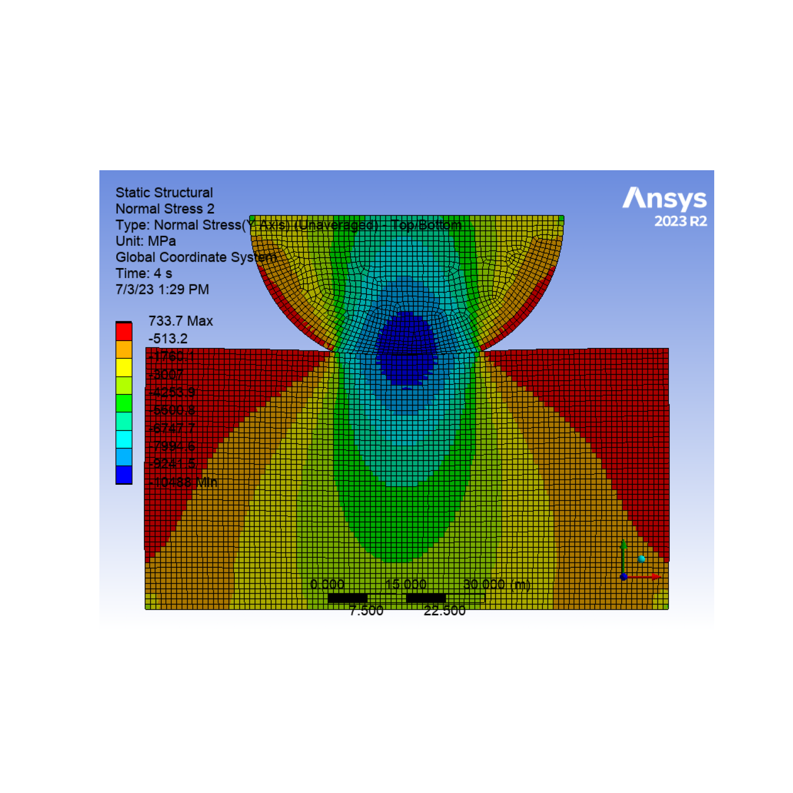
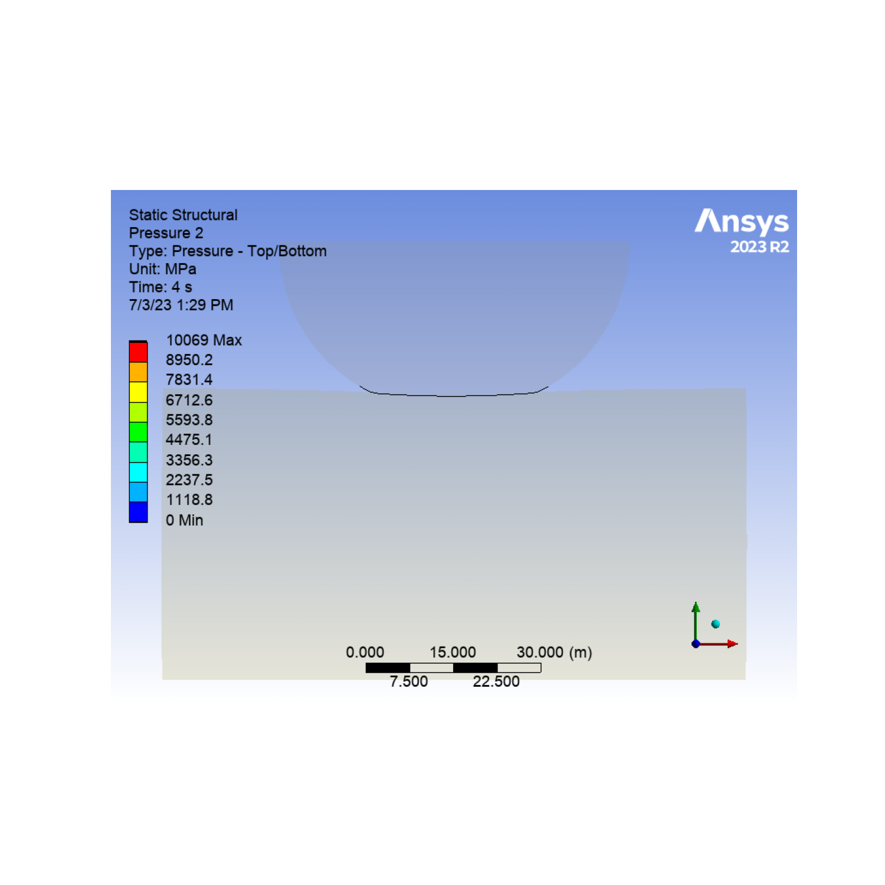

Note
Go to the end to download the full example code
Contact Surface Wear Simulation#
Contact Surface Wear Simulation. UNIT System: NMM.
Coverage: Archard wear model Wear on One Contact Surface (Asymmetric Contact)
Problem Description: A hemispherical ring of copper with radius = 30 mm rotates on a flat ring of steel with inner radius = 50 mm and outer radius = 150 mm. The hemispherical ring touches the flat ring at the center from the axis of rotation at 100 mm). The hemispherical ring is subjected to a pressure load of 4000 N/mm2 and is rotating with a frequency of 100,000 revolutions/sec. Sliding of the hemispherical ring on the flat ring causes wear in the rings.
Validation: The total deformation and Normal stress in loading direction are validated before wear and after wear and also Contact Pressure before wear and after wear are validated.
Import necessary libraries#
import os
from ansys.mechanical.core import launch_mechanical
from ansys.mechanical.core.examples import download_file
from matplotlib import image as mpimg
from matplotlib import pyplot as plt
Launch Mechanical#
Launch a new Mechanical session in batch, setting cleanup_on_exit to
False. To close this Mechanical session when finished, this example
must call the mechanical.exit() method.
mechanical = launch_mechanical(batch=True, cleanup_on_exit=False)
print(mechanical)
Ansys Mechanical [Ansys Mechanical Enterprise]
Product Version:232
Software build date: 05/30/2023 05:40:47
Initialize variable for workflow#
Set the part_file_path variable on the server for later use.
Make this variable compatible for Windows, Linux, and Docker containers.
project_directory = mechanical.project_directory
print(f"project directory = {project_directory}")
project directory = /tmp/ANSYS.root.1/AnsysMech480E/Project_Mech_Files/
Download required Geometry file#
Download the required file. Print the file path for the geometry file.
geometry_path = download_file("example_07_td43_wear.agdb", "pymechanical", "00_basic")
print(f"Downloaded the geometry file to: {geometry_path}")
# Upload the file to the project directory.
mechanical.upload(file_name=geometry_path, file_location_destination=project_directory)
# Build the path relative to project directory.
base_name = os.path.basename(geometry_path)
combined_path = os.path.join(project_directory, base_name)
part_file_path = combined_path.replace("\\", "\\\\")
mechanical.run_python_script(f"part_file_path='{part_file_path}'")
Downloaded the geometry file to: /home/runner/.local/share/ansys_mechanical_core/examples/example_07_td43_wear.agdb
Uploading example_07_td43_wear.agdb to 127.0.0.1:10000:/tmp/ANSYS.root.1/AnsysMech480E/Project_Mech_Files/.: 0%| | 0.00/2.27M [00:00<?, ?B/s]
Uploading example_07_td43_wear.agdb to 127.0.0.1:10000:/tmp/ANSYS.root.1/AnsysMech480E/Project_Mech_Files/.: 100%|##########| 2.27M/2.27M [00:00<00:00, 499MB/s]
''
Download required Material files#
Download the required files. Print the file path for the material file.
mat_cop_path = download_file("example_07_Mat_Copper.xml", "pymechanical", "00_basic")
print(f"Downloaded the material file to: {mat_cop_path}")
# Upload the file to the project directory.
mechanical.upload(file_name=mat_cop_path, file_location_destination=project_directory)
# Build the path relative to project directory.
base_name = os.path.basename(mat_cop_path)
combined_path = os.path.join(project_directory, base_name)
mat_Copper_file_path = combined_path.replace("\\", "\\\\")
mechanical.run_python_script(f"mat_Copper_file_path='{mat_Copper_file_path}'")
mat_st_path = download_file("example_07_Mat_Steel.xml", "pymechanical", "00_basic")
print(f"Downloaded the material file to: {mat_st_path}")
# Upload the file to the project directory.
mechanical.upload(file_name=mat_st_path, file_location_destination=project_directory)
# Build the path relative to project directory.
base_name = os.path.basename(mat_st_path)
combined_path = os.path.join(project_directory, base_name)
mat_Steel_file_path = combined_path.replace("\\", "\\\\")
mechanical.run_python_script(f"mat_Steel_file_path='{mat_Steel_file_path}'")
# ----------------------- Verify the path-------------------
result = mechanical.run_python_script("part_file_path")
print(f"part_file_path on server: {result}")
Downloaded the material file to: /home/runner/.local/share/ansys_mechanical_core/examples/example_07_Mat_Copper.xml
Uploading example_07_Mat_Copper.xml to 127.0.0.1:10000:/tmp/ANSYS.root.1/AnsysMech480E/Project_Mech_Files/.: 0%| | 0.00/5.00k [00:00<?, ?B/s]
Uploading example_07_Mat_Copper.xml to 127.0.0.1:10000:/tmp/ANSYS.root.1/AnsysMech480E/Project_Mech_Files/.: 100%|##########| 5.00k/5.00k [00:00<00:00, 23.4MB/s]
Downloaded the material file to: /home/runner/.local/share/ansys_mechanical_core/examples/example_07_Mat_Steel.xml
Uploading example_07_Mat_Steel.xml to 127.0.0.1:10000:/tmp/ANSYS.root.1/AnsysMech480E/Project_Mech_Files/.: 0%| | 0.00/5.00k [00:00<?, ?B/s]
Uploading example_07_Mat_Steel.xml to 127.0.0.1:10000:/tmp/ANSYS.root.1/AnsysMech480E/Project_Mech_Files/.: 100%|##########| 5.00k/5.00k [00:00<00:00, 21.0MB/s]
part_file_path on server: /tmp/ANSYS.root.1/AnsysMech480E/Project_Mech_Files/example_07_td43_wear.agdb
Execute the script#
Run the Mechanical script to attach the geometry and set up and solve the analysis.
output = mechanical.run_python_script(
"""
import json
import os
import context_menu
# Section 1 Reads Geometry and Material info
geometry_import_group_11 = Model.GeometryImportGroup
geometry_import_12 = geometry_import_group_11.AddGeometryImport()
geometry_import_12_format = Ansys.Mechanical.DataModel.Enums.GeometryImportPreference.\
Format.Automatic
geometry_import_12_preferences = Ansys.ACT.Mechanical.Utilities.GeometryImportPreferences()
geometry_import_12_preferences.ProcessNamedSelections = True
geometry_import_12_preferences.ProcessCoordinateSystems = True
geometry_import_12.Import(part_file_path,geometry_import_12_format,geometry_import_12_preferences)
#MAT = ExtAPI.DataModel.Project.Model.Materials
#MAT.Import(mat_Copper_file_path)
#MAT.Import(mat_Steel_file_path)
# Section 2 Set up the Unit System.
ExtAPI.Application.ActiveUnitSystem = MechanicalUnitSystem.StandardNMM
# Section 3 Store all main tree nodes as variables.
MODEL = ExtAPI.DataModel.Project.Model
GEOM = ExtAPI.DataModel.Project.Model.Geometry
CS_GRP = ExtAPI.DataModel.Project.Model.CoordinateSystems
CONN_GRP = ExtAPI.DataModel.Project.Model.Connections
MSH = ExtAPI.DataModel.Project.Model.Mesh
NS_GRP = ExtAPI.DataModel.Project.Model.NamedSelections
Model.AddStaticStructuralAnalysis()
STAT_STRUC = Model.Analyses[0]
STAT_STRUC_SOLN = STAT_STRUC.Solution
STAT_STRUC_ANA_SETTING = STAT_STRUC.Children[0]
# Section 4 Store Name Selection.
CURVE_NS = [x for x in ExtAPI.DataModel.Tree.AllObjects if x.Name == 'curve'][0]
DIA_NS = [x for x in ExtAPI.DataModel.Tree.AllObjects if x.Name == 'dia'][0]
VER_EDGE1 = [x for x in ExtAPI.DataModel.Tree.AllObjects if x.Name == 'v1'][0]
VER_EDGE2 = [x for x in ExtAPI.DataModel.Tree.AllObjects if x.Name == 'v2'][0]
HOR_EDGE1 = [x for x in ExtAPI.DataModel.Tree.AllObjects if x.Name == 'h1'][0]
HOR_EDGE2 = [x for x in ExtAPI.DataModel.Tree.AllObjects if x.Name == 'h2'][0]
ALL_BODIES_NS = [x for x in ExtAPI.DataModel.Tree.AllObjects if x.Name == 'all_bodies'][0]
# Section 5 Assign material to bodies and change behavior to Axisymmetric.
GEOM.Model2DBehavior=Model2DBehavior.AxiSymmetric
SURFACE1=GEOM.Children[0].Children[0]
#SURFACE1.Material="Steel"
SURFACE1.Dimension = ShellBodyDimension.Two_D
SURFACE2=GEOM.Children[1].Children[0]
#SURFACE2.Material="Copper"
SURFACE2.Dimension = ShellBodyDimension.Two_D
# Section 6 Change Contact settings and add command snippet to use Archard Wear Model.
CONT_REG = CONN_GRP.AddContactRegion()
CONT_REG.SourceLocation = NS_GRP.Children[6]
CONT_REG.TargetLocation = NS_GRP.Children[3]
#CONT_REG.FlipContactTarget()
CONT_REG.ContactType=ContactType.Frictionless
CONT_REG.Behavior=ContactBehavior.Asymmetric
CONT_REG.ContactFormulation=ContactFormulation.AugmentedLagrange
CONT_REG.DetectionMethod=ContactDetectionPoint.NodalNormalToTarget
# Add missing contact keyopt and Archard Wear Model in workbench using command snippet.
AWM = '''keyo,cid,5,1
keyo,cid,10,2
pi=acos(-1)
slide_velocity=1e5
Uring_offset=100
kcopper=10e-13*slide_velocity*2*pi*Uring_offset
TB,WEAR,cid,,,ARCD
TBFIELD,TIME,0
TBDATA,1,0,1,1,0,0
TBFIELD,TIME,1
TBDATA,1,0,1,1,0,0
TBFIELD,TIME,1.01
TBDATA,1,kcopper,1,1,0,0
TBFIELD,TIME,4
TBDATA,1,kcopper,1,1,0,0'''
CMD1=CONT_REG.AddCommandSnippet()
CMD1.AppendText(AWM)
# Section 7 Insert Remote Point.
REM_PT=MODEL.AddRemotePoint()
REM_PT.Location=DIA_NS
REM_PT.Behavior=LoadBehavior.Rigid
# Section 8 Generate Mesh.
MSH.ElementOrder=ElementOrder.Linear
MSH.ElementSize=Quantity('1 [mm]')
EDGE_SIZING1=MSH.AddSizing()
EDGE_SIZING1.Location=HOR_EDGE1
EDGE_SIZING1.Type=SizingType.NumberOfDivisions
EDGE_SIZING1.NumberOfDivisions=70
EDGE_SIZING2=MSH.AddSizing()
EDGE_SIZING2.Location=HOR_EDGE2
EDGE_SIZING2.Type=SizingType.NumberOfDivisions
EDGE_SIZING2.NumberOfDivisions=70
EDGE_SIZING3=MSH.AddSizing()
EDGE_SIZING3.Location=VER_EDGE1
EDGE_SIZING3.Type=SizingType.NumberOfDivisions
EDGE_SIZING3.NumberOfDivisions=35
EDGE_SIZING4=MSH.AddSizing()
EDGE_SIZING4.Location=VER_EDGE2
EDGE_SIZING4.Type=SizingType.NumberOfDivisions
EDGE_SIZING4.NumberOfDivisions=35
EDGE_SIZING5=MSH.AddSizing()
EDGE_SIZING5.Location=DIA_NS
EDGE_SIZING5.Type=SizingType.NumberOfDivisions
EDGE_SIZING5.NumberOfDivisions=40
EDGE_SIZING6=MSH.AddSizing()
EDGE_SIZING6.Location=CURVE_NS
EDGE_SIZING6.Type=SizingType.NumberOfDivisions
EDGE_SIZING6.NumberOfDivisions=60
MSH.GenerateMesh()
# Section 9 Setup Analysis Settings.
STAT_STRUC_ANA_SETTING.NumberOfSteps=2
STAT_STRUC_ANA_SETTING.CurrentStepNumber=1
STAT_STRUC_ANA_SETTING.AutomaticTimeStepping=AutomaticTimeStepping.On
STAT_STRUC_ANA_SETTING.DefineBy=TimeStepDefineByType.Time
STAT_STRUC_ANA_SETTING.InitialTimeStep=Quantity("0.1 [s]")
STAT_STRUC_ANA_SETTING.MinimumTimeStep=Quantity("0.0001 [s]")
STAT_STRUC_ANA_SETTING.MaximumTimeStep=Quantity("1 [s]")
STAT_STRUC_ANA_SETTING.CurrentStepNumber=2
STAT_STRUC_ANA_SETTING.Activate()
STAT_STRUC_ANA_SETTING.StepEndTime=Quantity("4 [s]")
STAT_STRUC_ANA_SETTING.AutomaticTimeStepping=AutomaticTimeStepping.On
STAT_STRUC_ANA_SETTING.DefineBy=TimeStepDefineByType.Time
STAT_STRUC_ANA_SETTING.InitialTimeStep=Quantity("0.01 [s]")
STAT_STRUC_ANA_SETTING.MinimumTimeStep=Quantity("0.000001 [s]")
STAT_STRUC_ANA_SETTING.MaximumTimeStep=Quantity("0.02 [s]")
STAT_STRUC_ANA_SETTING.LargeDeflection=True
# Section 10 Insert Loading and BC
FIX_SUP=STAT_STRUC.AddFixedSupport()
FIX_SUP.Location=HOR_EDGE1
REM_DISP=STAT_STRUC.AddRemoteDisplacement()
REM_DISP.Location=REM_PT
REM_DISP.XComponent.Output.DiscreteValues=[Quantity('0[mm]')]
REM_DISP.RotationZ.Output.DiscreteValues=[Quantity('0[deg]')]
REM_FRC=STAT_STRUC.AddRemoteForce()
REM_FRC.Location=REM_PT
REM_FRC.DefineBy=LoadDefineBy.Components
REM_FRC.YComponent.Output.DiscreteValues=[Quantity("-150796320 [N]")]
#Nonlinear Adaptivity does not support contact criterion yet hence command snippet used
NLAD = '''NLADAPTIVE,all,add,contact,wear,0.50
NLADAPTIVE,all,on,all,all,1,,4
NLADAPTIVE,all,list,all,all'''
CMD2=STAT_STRUC.AddCommandSnippet()
CMD2.AppendText(NLAD)
CMD2.StepSelectionMode=SequenceSelectionType.All
# Section 11 Insert Results.
TOT_DEF=STAT_STRUC_SOLN.AddTotalDeformation()
NORM_STRS1=STAT_STRUC_SOLN.AddNormalStress()
NORM_STRS1.NormalOrientation=NormalOrientationType.YAxis
NORM_STRS1.DisplayTime=Quantity('1 [s]')
NORM_STRS1.DisplayOption=ResultAveragingType.Unaveraged
NORM_STRS2=STAT_STRUC_SOLN.AddNormalStress()
NORM_STRS2.NormalOrientation=NormalOrientationType.YAxis
NORM_STRS2.DisplayTime=Quantity('4 [s]')
NORM_STRS2.DisplayOption=ResultAveragingType.Unaveraged
CONT_TOOL=STAT_STRUC_SOLN.AddContactTool()
CONT_TOOL.ScopingMethod=GeometryDefineByType.Geometry
SEL1=ExtAPI.SelectionManager.AddSelection(ALL_BODIES_NS)
SEL2=ExtAPI.SelectionManager.CurrentSelection
CONT_TOOL.Location=SEL2
ExtAPI.SelectionManager.ClearSelection()
CONT_PRES1=CONT_TOOL.AddPressure()
CONT_PRES1.DisplayTime=Quantity('1 [s]')
CONT_PRES2=CONT_TOOL.AddPressure()
CONT_PRES2.DisplayTime=Quantity('4 [s]')
# Section 12 Set Number of Processors to 6 using DANSYS
#testval2 = STAT_STRUC.SolveConfiguration.SolveProcessSettings.MaxNumberOfCores
#STAT_STRUC.SolveConfiguration.SolveProcessSettings.MaxNumberOfCores = 6
# Section 13 Solve and Validate the Results.
STAT_STRUC_SOLN.Solve(True)
STAT_STRUC_SS=STAT_STRUC_SOLN.Status
# Section 14 Store post-processing images
# Set front view and zoom to fit
cam = Graphics.Camera
cam.SetSpecificViewOrientation(ViewOrientationType.Front)
cam.SetFit()
mechdir = STAT_STRUC.Children[0].SolverFilesDirectory
export_path = os.path.join(mechdir, "stress.png")
NORM_STRS2.Activate()
Graphics.ExportImage(export_path, GraphicsImageExportFormat.PNG)
export_path2 = os.path.join(mechdir, "contact_pres.png")
CONT_PRES2.Activate()
Graphics.ExportImage(export_path2, GraphicsImageExportFormat.PNG)
my_results_details = {
"Normal_Stress1": str(NORM_STRS1.Minimum),
"Normal_Stress2": str(NORM_STRS2.Minimum),
"Contact_Pressure1": str(CONT_PRES1.Maximum),
"Contact_Pressure2": str(CONT_PRES2.Maximum),
}
json.dumps(my_results_details)
"""
)
print(output)
{"Normal_Stress1": "-17650.810546875 [MPa]", "Contact_Pressure1": "17197.4453125 [MPa]", "Normal_Stress2": "-10488.443359375 [MPa]", "Contact_Pressure2": "10068.9189453125 [MPa]"}
Initialize the variable needed for the image directory#
Set the image_dir for later use.
Make the variable compatible for Windows, Linux, and Docker containers.
# image_directory_modified = project_directory.replace("\\", "\\\\")
mechanical.run_python_script(f"image_dir=ExtAPI.DataModel.AnalysisList[0].WorkingDir")
# Verify the path for image directory.
result_image_dir_server = mechanical.run_python_script(f"image_dir")
print(f"Images are stored on the server at: {result_image_dir_server}")
Images are stored on the server at: /tmp/ANSYS.root.1/AnsysMech480E/Project_Mech_Files/StaticStructural/
Download the image and plot#
Download one image file from the server to the current working directory and plot using matplotlib.
def get_image_path(image_name):
return os.path.join(result_image_dir_server, image_name)
def display_image(path):
print(f"Printing {path} using matplotlib")
image1 = mpimg.imread(path)
plt.figure(figsize=(15, 15))
plt.axis("off")
plt.imshow(image1)
plt.show()
image_names = ["stress.png", "contact_pres.png"]
for image_name in image_names:
image_path_server = get_image_path(image_name)
if image_path_server != "":
current_working_directory = os.getcwd()
local_file_path_list = mechanical.download(
image_path_server, target_dir=current_working_directory
)
image_local_path = local_file_path_list[0]
print(f"Local image path : {image_local_path}")
display_image(image_local_path)


Downloading 127.0.0.1:10000:/tmp/ANSYS.root.1/AnsysMech480E/Project_Mech_Files/StaticStructural/stress.png to /home/runner/work/pymechanical-examples/pymechanical-examples/examples/technology_showcase/stress.png: 0%| | 0.00/80.6k [00:00<?, ?B/s]
Downloading 127.0.0.1:10000:/tmp/ANSYS.root.1/AnsysMech480E/Project_Mech_Files/StaticStructural/stress.png to /home/runner/work/pymechanical-examples/pymechanical-examples/examples/technology_showcase/stress.png: 100%|##########| 80.6k/80.6k [00:00<00:00, 2.15GB/s]
Local image path : /home/runner/work/pymechanical-examples/pymechanical-examples/examples/technology_showcase/stress.png
Printing /home/runner/work/pymechanical-examples/pymechanical-examples/examples/technology_showcase/stress.png using matplotlib
Downloading 127.0.0.1:10000:/tmp/ANSYS.root.1/AnsysMech480E/Project_Mech_Files/StaticStructural/contact_pres.png to /home/runner/work/pymechanical-examples/pymechanical-examples/examples/technology_showcase/contact_pres.png: 0%| | 0.00/45.5k [00:00<?, ?B/s]
Downloading 127.0.0.1:10000:/tmp/ANSYS.root.1/AnsysMech480E/Project_Mech_Files/StaticStructural/contact_pres.png to /home/runner/work/pymechanical-examples/pymechanical-examples/examples/technology_showcase/contact_pres.png: 100%|##########| 45.5k/45.5k [00:00<00:00, 1.16GB/s]
Local image path : /home/runner/work/pymechanical-examples/pymechanical-examples/examples/technology_showcase/contact_pres.png
Printing /home/runner/work/pymechanical-examples/pymechanical-examples/examples/technology_showcase/contact_pres.png using matplotlib
Download output file from solve and print contents#
Download the solve.out file from the server to the current working
directory and print the contents. Remove the solve.out file.
def get_solve_out_path(mechanical):
"""Get the solve out path and return."""
solve_out_path = ""
for file_path in mechanical.list_files():
if file_path.find("solve.out") != -1:
solve_out_path = file_path
break
return solve_out_path
def write_file_contents_to_console(path):
"""Write file contents to console."""
with open(path, "rt") as file:
for line in file:
print(line, end="")
solve_out_path = get_solve_out_path(mechanical)
if solve_out_path != "":
current_working_directory = os.getcwd()
mechanical.download(solve_out_path, target_dir=current_working_directory)
solve_out_local_path = os.path.join(current_working_directory, "solve.out")
write_file_contents_to_console(solve_out_local_path)
os.remove(solve_out_local_path)
Downloading 127.0.0.1:10000:/tmp/ANSYS.root.1/AnsysMech480E/Project_Mech_Files/StaticStructural/solve.out to /home/runner/work/pymechanical-examples/pymechanical-examples/examples/technology_showcase/solve.out: 0%| | 0.00/271k [00:00<?, ?B/s]
Downloading 127.0.0.1:10000:/tmp/ANSYS.root.1/AnsysMech480E/Project_Mech_Files/StaticStructural/solve.out to /home/runner/work/pymechanical-examples/pymechanical-examples/examples/technology_showcase/solve.out: 100%|##########| 271k/271k [00:00<00:00, 1.01GB/s]
Ansys Mechanical Enterprise
*------------------------------------------------------------------*
| |
| W E L C O M E T O T H E A N S Y S (R) P R O G R A M |
| |
*------------------------------------------------------------------*
***************************************************************
* ANSYS MAPDL 2023 R2 LEGAL NOTICES *
***************************************************************
* *
* Copyright 1971-2023 Ansys, Inc. All rights reserved. *
* Unauthorized use, distribution or duplication is *
* prohibited. *
* *
* Ansys is a registered trademark of Ansys, Inc. or its *
* subsidiaries in the United States or other countries. *
* See the Ansys, Inc. online documentation or the Ansys, Inc. *
* documentation CD or online help for the complete Legal *
* Notice. *
* *
***************************************************************
* *
* THIS ANSYS SOFTWARE PRODUCT AND PROGRAM DOCUMENTATION *
* INCLUDE TRADE SECRETS AND CONFIDENTIAL AND PROPRIETARY *
* PRODUCTS OF ANSYS, INC., ITS SUBSIDIARIES, OR LICENSORS. *
* The software products and documentation are furnished by *
* Ansys, Inc. or its subsidiaries under a software license *
* agreement that contains provisions concerning *
* non-disclosure, copying, length and nature of use, *
* compliance with exporting laws, warranties, disclaimers, *
* limitations of liability, and remedies, and other *
* provisions. The software products and documentation may be *
* used, disclosed, transferred, or copied only in accordance *
* with the terms and conditions of that software license *
* agreement. *
* *
* Ansys, Inc. is a UL registered *
* ISO 9001:2015 company. *
* *
***************************************************************
* *
* This product is subject to U.S. laws governing export and *
* re-export. *
* *
* For U.S. Government users, except as specifically granted *
* by the Ansys, Inc. software license agreement, the use, *
* duplication, or disclosure by the United States Government *
* is subject to restrictions stated in the Ansys, Inc. *
* software license agreement and FAR 12.212 (for non-DOD *
* licenses). *
* *
***************************************************************
2023 R2
Point Releases and Patches installed:
Ansys, Inc. Products 2023 R2
Mechanical Products 2023 R2
***** MAPDL COMMAND LINE ARGUMENTS *****
BATCH MODE REQUESTED (-b) = NOLIST
INPUT FILE COPY MODE (-c) = COPY
DISTRIBUTED MEMORY PARALLEL REQUESTED
4 PARALLEL PROCESSES REQUESTED WITH SINGLE THREAD PER PROCESS
TOTAL OF 4 CORES REQUESTED
INPUT FILE NAME = /tmp/ANSYS.root.1/AnsysMech480E/Project_Mech_Files/StaticStructural/dummy.dat
OUTPUT FILE NAME = /tmp/ANSYS.root.1/AnsysMech480E/Project_Mech_Files/StaticStructural/solve.out
START-UP FILE MODE = NOREAD
STOP FILE MODE = NOREAD
RELEASE= 2023 R2 BUILD= 23.2 UP20230530 VERSION=LINUX x64
CURRENT JOBNAME=file0 13:27:25 JUL 03, 2023 CP= 0.224
PARAMETER _DS_PROGRESS = 999.0000000
/INPUT FILE= ds.dat LINE= 0
*** NOTE *** CP = 0.290 TIME= 13:27:25
The /CONFIG,NOELDB command is not valid in a distributed memory
parallel solution. Command is ignored.
*GET _WALLSTRT FROM ACTI ITEM=TIME WALL VALUE= 13.4569444
TITLE=
--Static Structural
ACT Extensions:
LSDYNA, 2023.2
5f463412-bd3e-484b-87e7-cbc0a665e474, wbex
SET PARAMETER DIMENSIONS ON _WB_PROJECTSCRATCH_DIR
TYPE=STRI DIMENSIONS= 248 1 1
PARAMETER _WB_PROJECTSCRATCH_DIR(1) = /tmp/ANSYS.root.1/AnsysMech480E/Project_Mech_Files/StaticStructural/
SET PARAMETER DIMENSIONS ON _WB_SOLVERFILES_DIR
TYPE=STRI DIMENSIONS= 248 1 1
PARAMETER _WB_SOLVERFILES_DIR(1) = /tmp/ANSYS.root.1/AnsysMech480E/Project_Mech_Files/StaticStructural/
SET PARAMETER DIMENSIONS ON _WB_USERFILES_DIR
TYPE=STRI DIMENSIONS= 248 1 1
PARAMETER _WB_USERFILES_DIR(1) = /tmp/Auser_files/
--- Data in consistent NMM units. See Solving Units in the help system for more
MPA UNITS SPECIFIED FOR INTERNAL
LENGTH = MILLIMETERS (mm)
MASS = TONNE (Mg)
TIME = SECONDS (sec)
TEMPERATURE = CELSIUS (C)
TOFFSET = 273.0
FORCE = NEWTON (N)
HEAT = MILLIJOULES (mJ)
INPUT UNITS ARE ALSO SET TO MPA
*** MAPDL - ENGINEERING ANALYSIS SYSTEM RELEASE 2023 R2 23.2 ***
Ansys Mechanical Enterprise
00000000 VERSION=LINUX x64 13:27:25 JUL 03, 2023 CP= 0.294
--Static Structural
***** MAPDL ANALYSIS DEFINITION (PREP7) *****
*********** Nodes for the whole assembly ***********
*********** Nodes for all Remote Points ***********
*** WARNING *** CP = 0.331 TIME= 13:27:25
-1 is not a recognized PREP7 command, abbreviation, or macro.
This command will be ignored.
*********** Elements for Body 1 "Steel_Ring" ***********
*********** Elements for Body 2 "Hemispherical_Copper_Ring" ***********
*********** Send User Defined Coordinate System(s) ***********
*********** Set Reference Temperature ***********
*********** Send Materials ***********
*********** Send Sheet Properties ***********
*********** Create Contact "Contact Region" ***********
Real Constant Set For Above Contact Is 4 & 3
*********** Send Named Selection as Element Component ***********
*********** Send Named Selection as Node Component ***********
*********** Send Named Selection as Node Component ***********
*********** Send Named Selection as Node Component ***********
*********** Send Named Selection as Node Component ***********
*********** Send Named Selection as Node Component ***********
*********** Send Named Selection as Node Component ***********
*********** Fixed Supports ***********
*********** Create Remote Point "Remote Point" ***********
*********** Construct Remote Force ***********
*********** Construct Remote Displacement ***********
*** Create a component for all remote displacements ***
***** ROUTINE COMPLETED ***** CP = 0.409
--- Number of total nodes = 6736
--- Number of contact elements = 254
--- Number of spring elements = 0
--- Number of bearing elements = 0
--- Number of solid elements = 6511
--- Number of condensed parts = 0
--- Number of total elements = 6766
*GET _WALLBSOL FROM ACTI ITEM=TIME WALL VALUE= 13.4569444
****************************************************************************
************************* SOLUTION ********************************
****************************************************************************
***** MAPDL SOLUTION ROUTINE *****
PERFORM A STATIC ANALYSIS
THIS WILL BE A NEW ANALYSIS
LARGE DEFORMATION ANALYSIS
PARAMETER _THICKRATIO = 0.000000000
USE SPARSE MATRIX DIRECT SOLVER
CONTACT INFORMATION PRINTOUT LEVEL 1
CHECK INITIAL OPEN/CLOSED STATUS OF SELECTED CONTACT ELEMENTS
AND LIST DETAILED CONTACT PAIR INFORMATION
SPLIT CONTACT SURFACES AT SOLVE PHASE
NUMBER OF SPLITTING TBD BY PROGRAM
DO NOT COMBINE ELEMENT MATRIX FILES (.emat) AFTER DISTRIBUTED PARALLEL SOLUTION
DO NOT COMBINE ELEMENT SAVE DATA FILES (.esav) AFTER DISTRIBUTED PARALLEL SOLUTION
NLDIAG: Nonlinear diagnostics CONT option is set to ON.
Writing frequency : each ITERATION.
DEFINE RESTART CONTROL FOR LOADSTEP LAST
AT FREQUENCY OF LAST AND NUMBER FOR OVERWRITE IS -1
DELETE RESTART FILES OF ENDSTEP
****************************************************
******************* SOLVE FOR LS 1 OF 2 ****************
SELECT FOR ITEM=NODE COMPONENT=
IN RANGE 6736 TO 6736 STEP 1
1 NODES (OF 6736 DEFINED) SELECTED BY NSEL COMMAND.
SPECIFIED NODAL LOAD FX FOR SELECTED NODES 1 TO 6736 BY 1
REAL= 0.00000000 IMAG= 0.00000000
SPECIFIED NODAL LOAD FY FOR SELECTED NODES 1 TO 6736 BY 1
REAL= -150796320. IMAG= 0.00000000
ALL SELECT FOR ITEM=NODE COMPONENT=
IN RANGE 1 TO 6736 STEP 1
6736 NODES (OF 6736 DEFINED) SELECTED BY NSEL COMMAND.
SPECIFIED CONSTRAINT UX FOR SELECTED NODES 6736 TO 6736 BY 1
REAL= 0.00000000 IMAG= 0.00000000
SPECIFIED CONSTRAINT ROTZ FOR SELECTED NODES 6736 TO 6736 BY 1
REAL= 0.00000000 IMAG= 0.00000000
PRINTOUT RESUMED BY /GOP
USE AUTOMATIC TIME STEPPING THIS LOAD STEP
USE INITIAL TIME STEP SIZE OF 0.1000000 FOR ALL DEGREES OF FREEDOM
FOR AUTOMATIC TIME STEPPING:
USE 0.1000000E-03 AS THE MINIMUM TIME STEP SIZE
USE 1.000000 AS THE MAXIMUM TIME STEP SIZE
TIME= 1.0000
ERASE THE CURRENT DATABASE OUTPUT CONTROL TABLE.
WRITE ALL ITEMS TO THE DATABASE WITH A FREQUENCY OF NONE
FOR ALL APPLICABLE ENTITIES
WRITE NSOL ITEMS TO THE DATABASE WITH A FREQUENCY OF ALL
FOR ALL APPLICABLE ENTITIES
WRITE RSOL ITEMS TO THE DATABASE WITH A FREQUENCY OF ALL
FOR ALL APPLICABLE ENTITIES
WRITE EANG ITEMS TO THE DATABASE WITH A FREQUENCY OF ALL
FOR ALL APPLICABLE ENTITIES
WRITE ETMP ITEMS TO THE DATABASE WITH A FREQUENCY OF ALL
FOR ALL APPLICABLE ENTITIES
WRITE VENG ITEMS TO THE DATABASE WITH A FREQUENCY OF ALL
FOR ALL APPLICABLE ENTITIES
WRITE STRS ITEMS TO THE DATABASE WITH A FREQUENCY OF ALL
FOR ALL APPLICABLE ENTITIES
WRITE EPEL ITEMS TO THE DATABASE WITH A FREQUENCY OF ALL
FOR ALL APPLICABLE ENTITIES
WRITE EPPL ITEMS TO THE DATABASE WITH A FREQUENCY OF ALL
FOR ALL APPLICABLE ENTITIES
WRITE CONT ITEMS TO THE DATABASE WITH A FREQUENCY OF ALL
FOR ALL APPLICABLE ENTITIES
ADD NONLINEAR ADAPTIVE CRITERION FOR ALL APPLICABLE ELEMENTS:
COMPONENT NAME CRITERION OPTION DATA
CONTACT WEAR 0.50000E+00
THE DEFINED NONLINEAR ADAPTIVE CRITERION IS TURNED FOR ALL APPLICABLE ELEMENTS:
COMPONENT NAME ON/OFF SUBSTEPS START TIME END TIME NEW ELEMENT TYPE
ON 1 0.00000E+00 0.40000E+01 0.00000E+00
LIST DEFINED NONLINEAR ADAPTIVE CRITERION FOR ALL APPLICABLE ELEMENTS:
COMPONENT NAME CRITERION OPTION DATA
CONTACT WEAR 0.50000E+00
LIST THE SPECIFIED ACTIONS FOR DEFINED COMPONENT BASED CRITERIA FOR ALL APPLICABLE ELEMENTS:
COMPONENT NAME ON/OFF SUBSTEPS START TIME END TIME
ON 1 0.00000E+00 0.40000E+01
*GET ANSINTER_ FROM ACTI ITEM=INT VALUE= 0.00000000
*IF ANSINTER_ ( = 0.00000 ) NE
0 ( = 0.00000 ) THEN
*ENDIF
*** NOTE *** CP = 0.725 TIME= 13:27:25
The automatic domain decomposition logic has selected the MESH domain
decomposition method with 4 processes per solution.
***** MAPDL SOLVE COMMAND *****
*** WARNING *** CP = 0.727 TIME= 13:27:25
Element shape checking is currently inactive. Issue SHPP,ON or
SHPP,WARN to reactivate, if desired.
*** NOTE *** CP = 0.745 TIME= 13:27:25
Axisymmetric elements are present. The nodal loads input with the F
commands and the reaction forces are on a full circle basis. This
differs from the pre-MAPDL 5.0 interpretation.
*** NOTE *** CP = 0.750 TIME= 13:27:25
The model data was checked and warning messages were found.
Please review output or errors file (
/tmp/ANSYS.root.1/AnsysMech480E/Project_Mech_Files/StaticStructural/fil
le0.err ) for these warning messages.
*** SELECTION OF ELEMENT TECHNOLOGIES FOR APPLICABLE ELEMENTS ***
---GIVE SUGGESTIONS ONLY---
ELEMENT TYPE 1 IS PLANE182 WITH AXISYMMETRIC OPTION. IT IS ASSOCIATED WITH
LINEAR MATERIALS ONLY AND POISSON'S RATIO IS NOT GREATER THAN 0.49.
KEYOPT(1)=3 IS SUGGESTED.
ELEMENT TYPE 2 IS PLANE182 WITH AXISYMMETRIC OPTION. IT IS ASSOCIATED WITH
LINEAR MATERIALS ONLY AND POISSON'S RATIO IS NOT GREATER THAN 0.49.
KEYOPT(1)=3 IS SUGGESTED.
*** MAPDL - ENGINEERING ANALYSIS SYSTEM RELEASE 2023 R2 23.2 ***
Ansys Mechanical Enterprise
00000000 VERSION=LINUX x64 13:27:25 JUL 03, 2023 CP= 0.761
--Static Structural
S O L U T I O N O P T I O N S
PROBLEM DIMENSIONALITY. . . . . . . . . . . . .AXISYMMETRIC
DEGREES OF FREEDOM. . . . . . UX UY ROTZ
ANALYSIS TYPE . . . . . . . . . . . . . . . . .STATIC (STEADY-STATE)
OFFSET TEMPERATURE FROM ABSOLUTE ZERO . . . . . 273.15
NONLINEAR GEOMETRIC EFFECTS . . . . . . . . . .ON
EQUATION SOLVER OPTION. . . . . . . . . . . . .SPARSE
NEWTON-RAPHSON OPTION . . . . . . . . . . . . .PROGRAM CHOSEN
GLOBALLY ASSEMBLED MATRIX . . . . . . . . . . .SYMMETRIC
*** NOTE *** CP = 0.810 TIME= 13:27:25
This nonlinear analysis defaults to using the full Newton-Raphson
solution procedure. This can be modified using the NROPT command.
*** NOTE *** CP = 0.811 TIME= 13:27:25
The conditions for direct assembly have been met. No .emat or .erot
files will be produced.
*** NOTE *** CP = 0.847 TIME= 13:27:25
Internal nodes from 6737 to 6737 are created.
1 internal nodes are used for handling degrees of freedom on pilot
nodes of rigid target surfaces.
*** NOTE *** CP = 0.876 TIME= 13:27:25
Internal nodes from 6737 to 6737 are created.
1 internal nodes are used for handling degrees of freedom on pilot
nodes of rigid target surfaces.
*** NOTE *** CP = 0.903 TIME= 13:27:25
Deformable-deformable contact pair identified by real constant set 3
and contact element type 3 has been set up.
Contact algorithm: Augmented Lagrange method
Contact detection at: nodal point (normal to target surface)
Contact stiffness factor FKN 1.0000
The resulting initial contact stiffness 0.40716E+07
Default penetration tolerance factor FTOLN 0.10000
The resulting penetration tolerance 0.98242E-01
Frictionless contact pair is defined
Update contact stiffness at each iteration
Average contact surface length 1.0026
Average contact pair depth 0.98242
Average target surface length 1.0000
Pinball region factor PINB 1.0000
The resulting pinball region 0.98242
Default target edge extension factor TOLS 2.0000
Auto contact offset used to close gap 0.80800E-07
*WARNING*: Initial penetration is included.
*** NOTE *** CP = 0.903 TIME= 13:27:25
Min. Initial gap 7.999999674E-08 was detected between contact element
6559 and target element 6657.
Contact is detected due to initial settings.
****************************************
*** NOTE *** CP = 0.903 TIME= 13:27:25
Rigid-constraint surface identified by real constant set 5 and contact
element type 5 has been set up. The degrees of freedom of rigid
surface are driven by the pilot node 6736. Internal MPC will be
built.
The used degrees of freedom set is UX UY ROTZ
Please verify constraints (including rotational degrees of freedom)
on the pilot node by yourself.
****************************************
*** NOTE *** CP = 0.919 TIME= 13:27:25
Internal nodes from 6737 to 6737 are created.
1 internal nodes are used for handling degrees of freedom on pilot
nodes of rigid target surfaces.
D I S T R I B U T E D D O M A I N D E C O M P O S E R
...Number of elements: 6766
...Number of nodes: 6737
...Decompose to 4 CPU domains
...Element load balance ratio = 1.064
L O A D S T E P O P T I O N S
LOAD STEP NUMBER. . . . . . . . . . . . . . . . 1
TIME AT END OF THE LOAD STEP. . . . . . . . . . 1.0000
AUTOMATIC TIME STEPPING . . . . . . . . . . . . ON
STARTING TIME STEP SIZE. . . . . . . . . . . 0.10000
MINIMUM TIME STEP SIZE . . . . . . . . . . . 0.10000E-03
MAXIMUM TIME STEP SIZE . . . . . . . . . . . 1.0000
MAXIMUM NUMBER OF EQUILIBRIUM ITERATIONS. . . . 15
NONLINEAR ADAPTIVITY. . . . . . . . . . . . . . ON
STEP CHANGE BOUNDARY CONDITIONS . . . . . . . . NO
STRESS-STIFFENING . . . . . . . . . . . . . . . ON
TERMINATE ANALYSIS IF NOT CONVERGED . . . . . .YES (EXIT)
CONVERGENCE CONTROLS. . . . . . . . . . . . . .USE DEFAULTS
PRINT OUTPUT CONTROLS . . . . . . . . . . . . .NO PRINTOUT
DATABASE OUTPUT CONTROLS
ITEM FREQUENCY COMPONENT
ALL NONE
NSOL ALL
RSOL ALL
EANG ALL
ETMP ALL
VENG ALL
STRS ALL
EPEL ALL
EPPL ALL
CONT ALL
SOLUTION MONITORING INFO IS WRITTEN TO FILE= file.mntr
*** NOTE *** CP = 1.152 TIME= 13:27:25
Deformable-deformable contact pair identified by real constant set 3
and contact element type 3 has been set up.
Contact algorithm: Augmented Lagrange method
Contact detection at: nodal point (normal to target surface)
Contact stiffness factor FKN 1.0000
The resulting initial contact stiffness 0.40716E+07
Default penetration tolerance factor FTOLN 0.10000
The resulting penetration tolerance 0.98242E-01
Frictionless contact pair is defined
Update contact stiffness at each iteration
Average contact surface length 1.0026
Average contact pair depth 0.98242
Average target surface length 1.0000
Pinball region factor PINB 1.0000
The resulting pinball region 0.98242
Default target edge extension factor TOLS 2.0000
Auto contact offset used to close gap 0.80800E-07
*WARNING*: Initial penetration is included.
*** NOTE *** CP = 1.153 TIME= 13:27:25
Min. Initial gap 7.999999674E-08 was detected between contact element
6559 and target element 6657.
Contact is detected due to initial settings.
****************************************
*** NOTE *** CP = 1.153 TIME= 13:27:25
Rigid-constraint surface identified by real constant set 5 and contact
element type 5 has been set up. The degrees of freedom of rigid
surface are driven by the pilot node 6736. Internal MPC will be
built.
The used degrees of freedom set is UX UY ROTZ
Please verify constraints (including rotational degrees of freedom)
on the pilot node by yourself.
****************************************
MAXIMUM NUMBER OF EQUILIBRIUM ITERATIONS HAS BEEN MODIFIED
TO BE, NEQIT = 25, BY SOLUTION CONTROL LOGIC.
The FEA model contains 0 external CE equations and 183 internal CE
equations.
*************************************************
SUMMARY FOR CONTACT PAIR IDENTIFIED BY REAL CONSTANT SET 3
Max. Penetration of -7.999992044E-10 has been detected between contact
element 6559 and target element 6657.
For total 94 contact elements, there are 2 elements are in contact.
Contacting area 629.98815.
Max. Pinball distance 0.982424282.
One of the contact searching regions contains at least 9 target
elements.
Max. Pressure/force 3.064633461E-03.
Max. Normal stiffness 3830795.64.
Min. Normal stiffness 3830795.64.
Contact pair force norm 193.082122 and criterion 19.3082125.
*************************************************
**** CENTER OF MASS, MASS, AND MASS MOMENTS OF INERTIA ****
CALCULATIONS ASSUME ELEMENT MASS AT ELEMENT CENTROID
TOTAL MASS = 0.31633E-01
MASS AND MOMENT VALUES ARE EVALUATED FOR AN AXISYMMETRIC 360. DEGREE MODEL.
MOM. OF INERTIA MOM. OF INERTIA RADIUS OF GYRATION
CENTER OF MASS ABOUT ORIGIN ABOUT CENTER OF MASS ABOUT CENTER OF MASS
XC = 0.0000 IXX = 243.9 IXX = 206.6 RGX = 80.82
YC = 34.316 IYY = 382.7 IYY = 382.7 RGY = 110.0
*** MASS SUMMARY BY ELEMENT TYPE ***
TYPE MASS
1 0.246615E-01
2 0.697158E-02
Range of element maximum matrix coefficients in global coordinates
Maximum = 1.206677937E+09 at element 6559.
Minimum = 32402059.4 at element 4746.
*** ELEMENT MATRIX FORMULATION TIMES
TYPE NUMBER ENAME TOTAL CP AVE CP
1 5000 PLANE182 0.292 0.000058
2 1511 PLANE182 0.328 0.000217
3 94 CONTA172 0.013 0.000141
4 100 TARGE169 0.000 0.000001
5 60 CONTA172 0.003 0.000051
6 1 TARGE169 0.000 0.000003
Time at end of element matrix formulation CP = 1.73459888.
ALL CURRENT MAPDL DATA WRITTEN TO FILE NAME= file.rdb
FOR POSSIBLE RESUME FROM THIS POINT
FORCE CONVERGENCE VALUE = 0.1508E+08 CRITERION= 0.7540E+05
DISTRIBUTED SPARSE MATRIX DIRECT SOLVER.
Number of equations = 13147, Maximum wavefront = 27
Process memory allocated for solver = 4.559 MB
Process memory required for in-core solution = 4.386 MB
Process memory required for out-of-core solution = 2.733 MB
Total memory allocated for solver = 17.752 MB
Total memory required for in-core solution = 17.079 MB
Total memory required for out-of-core solution = 10.849 MB
*** NOTE *** CP = 1.781 TIME= 13:27:25
The Distributed Sparse Matrix Solver is currently running in the
in-core memory mode. This memory mode uses the most amount of memory
in order to avoid using the hard drive as much as possible, which most
often results in the fastest solution time. This mode is recommended
if enough physical memory is present to accommodate all of the solver
data.
curEqn= 3178 totEqn= 3178 Job CP sec= 1.596
Factor Done= 100% Factor Wall sec= 0.009 rate= 2.4 GFlops
Distributed sparse solver maximum pivot= 2.453794826E+09 at node 5259
UY.
Distributed sparse solver minimum pivot= 24013972.2 at node 41 UY.
Distributed sparse solver minimum pivot in absolute value= 24013972.2
at node 41 UY.
DISP CONVERGENCE VALUE = 0.7774 CRITERION= 0.3887E-01
EQUIL ITER 1 COMPLETED. NEW TRIANG MATRIX. MAX DOF INC= -0.7774
DISP CONVERGENCE VALUE = 0.1371 CRITERION= 0.3887E-01
LINE SEARCH PARAMETER = 0.1764 SCALED MAX DOF INC = -0.1371
FORCE CONVERGENCE VALUE = 0.2698E+08 CRITERION= 0.7543E+05
EQUIL ITER 2 COMPLETED. NEW TRIANG MATRIX. MAX DOF INC= -0.3449
DISP CONVERGENCE VALUE = 0.2721 CRITERION= 0.3887E-01
LINE SEARCH PARAMETER = 0.7889 SCALED MAX DOF INC = -0.2721
FORCE CONVERGENCE VALUE = 0.7649E+07 CRITERION= 0.7606E+05
EQUIL ITER 3 COMPLETED. NEW TRIANG MATRIX. MAX DOF INC= -0.6103E-01
DISP CONVERGENCE VALUE = 0.6103E-01 CRITERION= 0.3887E-01
LINE SEARCH PARAMETER = 1.000 SCALED MAX DOF INC = -0.6103E-01
FORCE CONVERGENCE VALUE = 0.1457E+05 CRITERION= 0.7635E+05 <<< CONVERGED
EQUIL ITER 4 COMPLETED. NEW TRIANG MATRIX. MAX DOF INC= -0.2745E-03
DISP CONVERGENCE VALUE = 0.2745E-03 CRITERION= 0.3887E-01 <<< CONVERGED
LINE SEARCH PARAMETER = 1.000 SCALED MAX DOF INC = -0.2745E-03
FORCE CONVERGENCE VALUE = 491.7 CRITERION= 0.7635E+05 <<< CONVERGED
EQUIL ITER 5 COMPLETED. NEW TRIANG MATRIX. MAX DOF INC= -0.3137E-05
DISP CONVERGENCE VALUE = 0.3050E-05 CRITERION= 0.3887E-01 <<< CONVERGED
LINE SEARCH PARAMETER = 0.9722 SCALED MAX DOF INC = -0.3050E-05
>>> SOLUTION CONVERGED AFTER EQUILIBRIUM ITERATION 5
*** ELEMENT RESULT CALCULATION TIMES
TYPE NUMBER ENAME TOTAL CP AVE CP
1 5000 PLANE182 0.303 0.000061
2 1511 PLANE182 0.092 0.000061
3 44 CONTA172 0.002 0.000036
5 60 CONTA172 0.000 0.000002
*** NODAL LOAD CALCULATION TIMES
TYPE NUMBER ENAME TOTAL CP AVE CP
1 5000 PLANE182 0.052 0.000010
2 1511 PLANE182 0.016 0.000011
3 44 CONTA172 0.000 0.000004
5 60 CONTA172 0.000 0.000000
*** LOAD STEP 1 SUBSTEP 1 COMPLETED. CUM ITER = 5
*** TIME = 0.100000 TIME INC = 0.100000
*** AUTO STEP TIME: NEXT TIME INC = 0.10000 UNCHANGED
THERE IS TOO MUCH PENETRATION AT 4 CONTACT POINTS OF THE 2D CONTACT ELEMENTS
FORCE CONVERGENCE VALUE = 0.3815E+09 CRITERION= 0.1527E+06
DISP CONVERGENCE VALUE = 0.1245 CRITERION= 0.3887E-01
EQUIL ITER 1 COMPLETED. NEW TRIANG MATRIX. MAX DOF INC= 0.1245
DISP CONVERGENCE VALUE = 0.1223 CRITERION= 0.3887E-01
LINE SEARCH PARAMETER = 0.9823 SCALED MAX DOF INC = 0.1223
FORCE CONVERGENCE VALUE = 0.1021E+08 CRITERION= 0.1529E+06
EQUIL ITER 2 COMPLETED. NEW TRIANG MATRIX. MAX DOF INC= 0.3240E-01
DISP CONVERGENCE VALUE = 0.3240E-01 CRITERION= 0.3887E-01 <<< CONVERGED
LINE SEARCH PARAMETER = 1.000 SCALED MAX DOF INC = 0.3240E-01
FORCE CONVERGENCE VALUE = 0.1407E+06 CRITERION= 0.1527E+06 <<< CONVERGED
>>> SOLUTION CONVERGED AFTER EQUILIBRIUM ITERATION 2
*** LOAD STEP 1 SUBSTEP 2 COMPLETED. CUM ITER = 7
*** TIME = 0.200000 TIME INC = 0.100000
*** AUTO TIME STEP: NEXT TIME INC = 0.15000 INCREASED (FACTOR = 1.5000)
THERE IS TOO MUCH PENETRATION AT 3 CONTACT POINTS OF THE 2D CONTACT ELEMENTS
FORCE CONVERGENCE VALUE = 0.2917E+09 CRITERION= 0.2672E+06
DISP CONVERGENCE VALUE = 0.1084 CRITERION= 0.3887E-01
EQUIL ITER 1 COMPLETED. NEW TRIANG MATRIX. MAX DOF INC= 0.1084
DISP CONVERGENCE VALUE = 0.1054 CRITERION= 0.3887E-01
LINE SEARCH PARAMETER = 0.9726 SCALED MAX DOF INC = 0.1054
FORCE CONVERGENCE VALUE = 0.1538E+08 CRITERION= 0.2673E+06
EQUIL ITER 2 COMPLETED. NEW TRIANG MATRIX. MAX DOF INC= -0.1302E-01
DISP CONVERGENCE VALUE = 0.1302E-01 CRITERION= 0.3887E-01 <<< CONVERGED
LINE SEARCH PARAMETER = 1.000 SCALED MAX DOF INC = -0.1302E-01
FORCE CONVERGENCE VALUE = 0.8082E+06 CRITERION= 0.2671E+06
EQUIL ITER 3 COMPLETED. NEW TRIANG MATRIX. MAX DOF INC= 0.1266E-01
DISP CONVERGENCE VALUE = 0.1266E-01 CRITERION= 0.3887E-01 <<< CONVERGED
LINE SEARCH PARAMETER = 1.000 SCALED MAX DOF INC = 0.1266E-01
FORCE CONVERGENCE VALUE = 0.2595E+05 CRITERION= 0.2672E+06 <<< CONVERGED
>>> SOLUTION CONVERGED AFTER EQUILIBRIUM ITERATION 3
*** LOAD STEP 1 SUBSTEP 3 COMPLETED. CUM ITER = 10
*** TIME = 0.350000 TIME INC = 0.150000
*** AUTO TIME STEP: NEXT TIME INC = 0.22500 INCREASED (FACTOR = 1.5000)
THERE IS TOO MUCH PENETRATION AT 5 CONTACT POINTS OF THE 2D CONTACT ELEMENTS
FORCE CONVERGENCE VALUE = 0.7328E+09 CRITERION= 0.4389E+06
DISP CONVERGENCE VALUE = 0.1556 CRITERION= 0.3887E-01
EQUIL ITER 1 COMPLETED. NEW TRIANG MATRIX. MAX DOF INC= 0.1556
DISP CONVERGENCE VALUE = 0.1525 CRITERION= 0.3887E-01
LINE SEARCH PARAMETER = 0.9804 SCALED MAX DOF INC = 0.1525
FORCE CONVERGENCE VALUE = 0.2706E+08 CRITERION= 0.4392E+06
EQUIL ITER 2 COMPLETED. NEW TRIANG MATRIX. MAX DOF INC= 0.5160E-01
DISP CONVERGENCE VALUE = 0.5160E-01 CRITERION= 0.3887E-01
LINE SEARCH PARAMETER = 1.000 SCALED MAX DOF INC = 0.5160E-01
FORCE CONVERGENCE VALUE = 0.2749E+07 CRITERION= 0.4388E+06
EQUIL ITER 3 COMPLETED. NEW TRIANG MATRIX. MAX DOF INC= 0.3951E-01
DISP CONVERGENCE VALUE = 0.3938E-01 CRITERION= 0.3887E-01
LINE SEARCH PARAMETER = 0.9968 SCALED MAX DOF INC = 0.3938E-01
FORCE CONVERGENCE VALUE = 0.9856E+05 CRITERION= 0.4388E+06 <<< CONVERGED
EQUIL ITER 4 COMPLETED. NEW TRIANG MATRIX. MAX DOF INC= 0.7747E-03
DISP CONVERGENCE VALUE = 0.7747E-03 CRITERION= 0.3887E-01 <<< CONVERGED
LINE SEARCH PARAMETER = 1.000 SCALED MAX DOF INC = 0.7747E-03
FORCE CONVERGENCE VALUE = 6784. CRITERION= 0.4388E+06 <<< CONVERGED
EQUIL ITER 5 COMPLETED. NEW TRIANG MATRIX. MAX DOF INC= 0.3089E-04
DISP CONVERGENCE VALUE = 0.3089E-04 CRITERION= 0.3887E-01 <<< CONVERGED
LINE SEARCH PARAMETER = 1.000 SCALED MAX DOF INC = 0.3089E-04
>>> SOLUTION CONVERGED AFTER EQUILIBRIUM ITERATION 5
*** LOAD STEP 1 SUBSTEP 4 COMPLETED. CUM ITER = 15
*** TIME = 0.575000 TIME INC = 0.225000
*** AUTO STEP TIME: NEXT TIME INC = 0.22500 UNCHANGED
THERE IS TOO MUCH PENETRATION AT 4 CONTACT POINTS OF THE 2D CONTACT ELEMENTS
FORCE CONVERGENCE VALUE = 0.4021E+09 CRITERION= 0.6104E+06
DISP CONVERGENCE VALUE = 0.1082 CRITERION= 0.3887E-01
EQUIL ITER 1 COMPLETED. NEW TRIANG MATRIX. MAX DOF INC= 0.1082
DISP CONVERGENCE VALUE = 0.1040 CRITERION= 0.3887E-01
LINE SEARCH PARAMETER = 0.9615 SCALED MAX DOF INC = 0.1040
FORCE CONVERGENCE VALUE = 0.2932E+08 CRITERION= 0.6105E+06
EQUIL ITER 2 COMPLETED. NEW TRIANG MATRIX. MAX DOF INC= 0.3880E-01
DISP CONVERGENCE VALUE = 0.3880E-01 CRITERION= 0.3887E-01 <<< CONVERGED
LINE SEARCH PARAMETER = 1.000 SCALED MAX DOF INC = 0.3880E-01
FORCE CONVERGENCE VALUE = 0.1828E+07 CRITERION= 0.6104E+06
EQUIL ITER 3 COMPLETED. NEW TRIANG MATRIX. MAX DOF INC= 0.2584E-01
DISP CONVERGENCE VALUE = 0.2584E-01 CRITERION= 0.3887E-01 <<< CONVERGED
LINE SEARCH PARAMETER = 1.000 SCALED MAX DOF INC = 0.2584E-01
FORCE CONVERGENCE VALUE = 0.8229E+05 CRITERION= 0.6103E+06 <<< CONVERGED
>>> SOLUTION CONVERGED AFTER EQUILIBRIUM ITERATION 3
*** LOAD STEP 1 SUBSTEP 5 COMPLETED. CUM ITER = 18
*** TIME = 0.800000 TIME INC = 0.225000
*** AUTO TIME STEP: NEXT TIME INC = 0.20000 DECREASED (FACTOR = 0.8889)
THERE IS TOO MUCH PENETRATION AT 1 CONTACT POINTS OF THE 2D CONTACT ELEMENTS
FORCE CONVERGENCE VALUE = 0.2173E+09 CRITERION= 0.7629E+06
DISP CONVERGENCE VALUE = 0.8251E-01 CRITERION= 0.3887E-01
EQUIL ITER 1 COMPLETED. NEW TRIANG MATRIX. MAX DOF INC= 0.8251E-01
DISP CONVERGENCE VALUE = 0.7629E-01 CRITERION= 0.3887E-01
LINE SEARCH PARAMETER = 0.9247 SCALED MAX DOF INC = 0.7629E-01
FORCE CONVERGENCE VALUE = 0.2878E+08 CRITERION= 0.7629E+06
EQUIL ITER 2 COMPLETED. NEW TRIANG MATRIX. MAX DOF INC= 0.3015E-01
DISP CONVERGENCE VALUE = 0.3015E-01 CRITERION= 0.3887E-01 <<< CONVERGED
LINE SEARCH PARAMETER = 1.000 SCALED MAX DOF INC = 0.3015E-01
FORCE CONVERGENCE VALUE = 0.2479E+06 CRITERION= 0.7628E+06 <<< CONVERGED
>>> SOLUTION CONVERGED AFTER EQUILIBRIUM ITERATION 2
*** LOAD STEP 1 SUBSTEP 6 COMPLETED. CUM ITER = 20
*** TIME = 1.00000 TIME INC = 0.200000
*** MAPDL BINARY FILE STATISTICS
BUFFER SIZE USED= 16384
4.062 MB WRITTEN ON ELEMENT SAVED DATA FILE: file0.esav
0.688 MB WRITTEN ON ASSEMBLED MATRIX FILE: file0.full
4.062 MB WRITTEN ON RESULTS FILE: file0.rst
*************** Write FE CONNECTORS *********
WRITE OUT CONSTRAINT EQUATIONS TO FILE= file.ce
****************************************************
*************** FINISHED SOLVE FOR LS 1 *************
****************************************************
******************* SOLVE FOR LS 2 OF 2 ****************
PRINTOUT RESUMED BY /GOP
USE AUTOMATIC TIME STEPPING THIS LOAD STEP
USE INITIAL TIME STEP SIZE OF 0.1000000E-01 FOR ALL DEGREES OF FREEDOM
FOR AUTOMATIC TIME STEPPING:
USE 0.1000000E-05 AS THE MINIMUM TIME STEP SIZE
USE 0.2000000E-01 AS THE MAXIMUM TIME STEP SIZE
TIME= 4.0000
ERASE THE CURRENT DATABASE OUTPUT CONTROL TABLE.
WRITE ALL ITEMS TO THE DATABASE WITH A FREQUENCY OF NONE
FOR ALL APPLICABLE ENTITIES
WRITE NSOL ITEMS TO THE DATABASE WITH A FREQUENCY OF ALL
FOR ALL APPLICABLE ENTITIES
WRITE RSOL ITEMS TO THE DATABASE WITH A FREQUENCY OF ALL
FOR ALL APPLICABLE ENTITIES
WRITE EANG ITEMS TO THE DATABASE WITH A FREQUENCY OF ALL
FOR ALL APPLICABLE ENTITIES
WRITE ETMP ITEMS TO THE DATABASE WITH A FREQUENCY OF ALL
FOR ALL APPLICABLE ENTITIES
WRITE VENG ITEMS TO THE DATABASE WITH A FREQUENCY OF ALL
FOR ALL APPLICABLE ENTITIES
WRITE STRS ITEMS TO THE DATABASE WITH A FREQUENCY OF ALL
FOR ALL APPLICABLE ENTITIES
WRITE EPEL ITEMS TO THE DATABASE WITH A FREQUENCY OF ALL
FOR ALL APPLICABLE ENTITIES
WRITE EPPL ITEMS TO THE DATABASE WITH A FREQUENCY OF ALL
FOR ALL APPLICABLE ENTITIES
WRITE CONT ITEMS TO THE DATABASE WITH A FREQUENCY OF ALL
FOR ALL APPLICABLE ENTITIES
ADD NONLINEAR ADAPTIVE CRITERION FOR ALL APPLICABLE ELEMENTS:
COMPONENT NAME CRITERION OPTION DATA
CONTACT WEAR 0.50000E+00
THE DEFINED NONLINEAR ADAPTIVE CRITERION IS TURNED FOR ALL APPLICABLE ELEMENTS:
COMPONENT NAME ON/OFF SUBSTEPS START TIME END TIME NEW ELEMENT TYPE
ON 1 0.00000E+00 0.40000E+01 0.00000E+00
LIST DEFINED NONLINEAR ADAPTIVE CRITERION FOR ALL APPLICABLE ELEMENTS:
COMPONENT NAME CRITERION OPTION DATA
CONTACT WEAR 0.50000E+00
LIST THE SPECIFIED ACTIONS FOR DEFINED COMPONENT BASED CRITERIA FOR ALL APPLICABLE ELEMENTS:
COMPONENT NAME ON/OFF SUBSTEPS START TIME END TIME
ON 1 0.00000E+00 0.40000E+01
***** MAPDL SOLVE COMMAND *****
*** NOTE *** CP = 6.406 TIME= 13:27:30
This nonlinear analysis defaults to using the full Newton-Raphson
solution procedure. This can be modified using the NROPT command.
*** MAPDL - ENGINEERING ANALYSIS SYSTEM RELEASE 2023 R2 23.2 ***
Ansys Mechanical Enterprise
00000000 VERSION=LINUX x64 13:27:30 JUL 03, 2023 CP= 6.454
--Static Structural
L O A D S T E P O P T I O N S
LOAD STEP NUMBER. . . . . . . . . . . . . . . . 2
TIME AT END OF THE LOAD STEP. . . . . . . . . . 4.0000
AUTOMATIC TIME STEPPING . . . . . . . . . . . . ON
STARTING TIME STEP SIZE. . . . . . . . . . . 0.10000E-01
MINIMUM TIME STEP SIZE . . . . . . . . . . . 0.10000E-05
MAXIMUM TIME STEP SIZE . . . . . . . . . . . 0.20000E-01
MAXIMUM NUMBER OF EQUILIBRIUM ITERATIONS. . . . 15
NONLINEAR ADAPTIVITY. . . . . . . . . . . . . . ON
STEP CHANGE BOUNDARY CONDITIONS . . . . . . . . NO
STRESS-STIFFENING . . . . . . . . . . . . . . . ON
TERMINATE ANALYSIS IF NOT CONVERGED . . . . . .YES (EXIT)
CONVERGENCE CONTROLS. . . . . . . . . . . . . .USE DEFAULTS
PRINT OUTPUT CONTROLS . . . . . . . . . . . . .NO PRINTOUT
DATABASE OUTPUT CONTROLS
ITEM FREQUENCY COMPONENT
ALL NONE
NSOL ALL
RSOL ALL
EANG ALL
ETMP ALL
VENG ALL
STRS ALL
EPEL ALL
EPPL ALL
CONT ALL
SOLUTION MONITORING INFO IS WRITTEN TO FILE= file.mntr
MAXIMUM NUMBER OF EQUILIBRIUM ITERATIONS HAS BEEN MODIFIED
TO BE, NEQIT = 25, BY SOLUTION CONTROL LOGIC.
FORCE CONVERGENCE VALUE = 0.2479E+06 CRITERION= 0.7628E+06
DISP CONVERGENCE VALUE = 0.2334E-02 CRITERION= 0.3887E-01 <<< CONVERGED
EQUIL ITER 1 COMPLETED. NEW TRIANG MATRIX. MAX DOF INC= 0.2334E-02
DISP CONVERGENCE VALUE = 0.2228E-02 CRITERION= 0.3887E-01 <<< CONVERGED
LINE SEARCH PARAMETER = 0.9547 SCALED MAX DOF INC = 0.2228E-02
FORCE CONVERGENCE VALUE = 0.2991E+05 CRITERION= 0.7628E+06 <<< CONVERGED
EQUIL ITER 2 COMPLETED. NEW TRIANG MATRIX. MAX DOF INC= -0.1945E-03
Wear is added here. Additional iterations are required due to wear
DISP CONVERGENCE VALUE = 0.1945E-03 CRITERION= 0.3887E-01 <<< CONVERGED
LINE SEARCH PARAMETER = 1.000 SCALED MAX DOF INC = -0.1945E-03
FORCE CONVERGENCE VALUE = 0.1510E+08 CRITERION= 0.7628E+06
EQUIL ITER 3 COMPLETED. NEW TRIANG MATRIX. MAX DOF INC= -0.8876E-02
DISP CONVERGENCE VALUE = 0.8876E-02 CRITERION= 0.3887E-01 <<< CONVERGED
LINE SEARCH PARAMETER = 1.000 SCALED MAX DOF INC = -0.8876E-02
FORCE CONVERGENCE VALUE = 0.4881E+05 CRITERION= 0.7628E+06 <<< CONVERGED
>>> SOLUTION CONVERGED AFTER EQUILIBRIUM ITERATION 3
*** LOAD STEP 2 SUBSTEP 1 COMPLETED. CUM ITER = 23
*** TIME = 1.01000 TIME INC = 0.100000E-01
*** AUTO STEP TIME: NEXT TIME INC = 0.10000E-01 UNCHANGED
FORCE CONVERGENCE VALUE = 0.1522E+08 CRITERION= 0.7628E+06
DISP CONVERGENCE VALUE = 0.8736E-02 CRITERION= 0.3887E-01 <<< CONVERGED
EQUIL ITER 1 COMPLETED. NEW TRIANG MATRIX. MAX DOF INC= 0.8736E-02
DISP CONVERGENCE VALUE = 0.8736E-02 CRITERION= 0.3887E-01 <<< CONVERGED
LINE SEARCH PARAMETER = 1.000 SCALED MAX DOF INC = 0.8736E-02
FORCE CONVERGENCE VALUE = 0.6217E+05 CRITERION= 0.7628E+06 <<< CONVERGED
EQUIL ITER 2 COMPLETED. NEW TRIANG MATRIX. MAX DOF INC= -0.3916E-03
Wear is added here. Additional iterations are required due to wear
DISP CONVERGENCE VALUE = 0.1958E-04 CRITERION= 0.3887E-01 <<< CONVERGED
LINE SEARCH PARAMETER = 0.5000E-01 SCALED MAX DOF INC = -0.1958E-04
FORCE CONVERGENCE VALUE = 0.1503E+08 CRITERION= 0.7628E+06
EQUIL ITER 3 COMPLETED. NEW TRIANG MATRIX. MAX DOF INC= -0.8735E-02
DISP CONVERGENCE VALUE = 0.8735E-02 CRITERION= 0.3887E-01 <<< CONVERGED
LINE SEARCH PARAMETER = 1.000 SCALED MAX DOF INC = -0.8735E-02
FORCE CONVERGENCE VALUE = 0.5391E+05 CRITERION= 0.7628E+06 <<< CONVERGED
>>> SOLUTION CONVERGED AFTER EQUILIBRIUM ITERATION 3
*** LOAD STEP 2 SUBSTEP 2 COMPLETED. CUM ITER = 26
*** TIME = 1.02000 TIME INC = 0.100000E-01
*** AUTO TIME STEP: NEXT TIME INC = 0.15000E-01 INCREASED (FACTOR = 1.5000)
FORCE CONVERGENCE VALUE = 0.2873E+08 CRITERION= 0.7628E+06
DISP CONVERGENCE VALUE = 0.1542E-01 CRITERION= 0.3887E-01 <<< CONVERGED
EQUIL ITER 1 COMPLETED. NEW TRIANG MATRIX. MAX DOF INC= 0.1542E-01
DISP CONVERGENCE VALUE = 0.1357E-01 CRITERION= 0.3887E-01 <<< CONVERGED
LINE SEARCH PARAMETER = 0.8797 SCALED MAX DOF INC = 0.1357E-01
FORCE CONVERGENCE VALUE = 0.7292E+06 CRITERION= 0.7628E+06 <<< CONVERGED
EQUIL ITER 2 COMPLETED. NEW TRIANG MATRIX. MAX DOF INC= -0.7688E-03
Wear is added here. Additional iterations are required due to wear
DISP CONVERGENCE VALUE = 0.7688E-03 CRITERION= 0.3887E-01 <<< CONVERGED
LINE SEARCH PARAMETER = 1.000 SCALED MAX DOF INC = -0.7688E-03
FORCE CONVERGENCE VALUE = 0.2224E+08 CRITERION= 0.7628E+06
EQUIL ITER 3 COMPLETED. NEW TRIANG MATRIX. MAX DOF INC= -0.1318E-01
DISP CONVERGENCE VALUE = 0.1318E-01 CRITERION= 0.3887E-01 <<< CONVERGED
LINE SEARCH PARAMETER = 1.000 SCALED MAX DOF INC = -0.1318E-01
FORCE CONVERGENCE VALUE = 0.6549E+05 CRITERION= 0.7628E+06 <<< CONVERGED
>>> SOLUTION CONVERGED AFTER EQUILIBRIUM ITERATION 3
*** LOAD STEP 2 SUBSTEP 3 COMPLETED. CUM ITER = 29
*** TIME = 1.03500 TIME INC = 0.150000E-01
*** AUTO TIME STEP: NEXT TIME INC = 0.20000E-01 INCREASED (FACTOR = 1.3333)
FORCE CONVERGENCE VALUE = 0.4437E+08 CRITERION= 0.7628E+06
DISP CONVERGENCE VALUE = 0.2198E-01 CRITERION= 0.3887E-01 <<< CONVERGED
EQUIL ITER 1 COMPLETED. NEW TRIANG MATRIX. MAX DOF INC= 0.2198E-01
DISP CONVERGENCE VALUE = 0.1864E-01 CRITERION= 0.3887E-01 <<< CONVERGED
LINE SEARCH PARAMETER = 0.8483 SCALED MAX DOF INC = 0.1864E-01
FORCE CONVERGENCE VALUE = 0.2231E+07 CRITERION= 0.7628E+06
EQUIL ITER 2 COMPLETED. NEW TRIANG MATRIX. MAX DOF INC= -0.1387E-02
DISP CONVERGENCE VALUE = 0.1387E-02 CRITERION= 0.3887E-01 <<< CONVERGED
LINE SEARCH PARAMETER = 1.000 SCALED MAX DOF INC = -0.1387E-02
FORCE CONVERGENCE VALUE = 0.1808E+05 CRITERION= 0.7628E+06 <<< CONVERGED
EQUIL ITER 3 COMPLETED. NEW TRIANG MATRIX. MAX DOF INC= 0.1920E-03
Wear is added here. Additional iterations are required due to wear
DISP CONVERGENCE VALUE = 0.1920E-03 CRITERION= 0.3887E-01 <<< CONVERGED
LINE SEARCH PARAMETER = 1.000 SCALED MAX DOF INC = 0.1920E-03
FORCE CONVERGENCE VALUE = 0.2996E+08 CRITERION= 0.7628E+06
EQUIL ITER 4 COMPLETED. NEW TRIANG MATRIX. MAX DOF INC= -0.1770E-01
DISP CONVERGENCE VALUE = 0.1770E-01 CRITERION= 0.3887E-01 <<< CONVERGED
LINE SEARCH PARAMETER = 1.000 SCALED MAX DOF INC = -0.1770E-01
FORCE CONVERGENCE VALUE = 0.8630E+05 CRITERION= 0.7628E+06 <<< CONVERGED
>>> SOLUTION CONVERGED AFTER EQUILIBRIUM ITERATION 4
*** LOAD STEP 2 SUBSTEP 4 COMPLETED. CUM ITER = 33
*** TIME = 1.05500 TIME INC = 0.200000E-01
*** AUTO STEP TIME: NEXT TIME INC = 0.20000E-01 UNCHANGED
FORCE CONVERGENCE VALUE = 0.4477E+08 CRITERION= 0.7628E+06
DISP CONVERGENCE VALUE = 0.2210E-01 CRITERION= 0.3887E-01 <<< CONVERGED
EQUIL ITER 1 COMPLETED. NEW TRIANG MATRIX. MAX DOF INC= 0.2210E-01
DISP CONVERGENCE VALUE = 0.1877E-01 CRITERION= 0.3887E-01 <<< CONVERGED
LINE SEARCH PARAMETER = 0.8493 SCALED MAX DOF INC = 0.1877E-01
FORCE CONVERGENCE VALUE = 0.2233E+07 CRITERION= 0.7628E+06
EQUIL ITER 2 COMPLETED. NEW TRIANG MATRIX. MAX DOF INC= -0.1393E-02
DISP CONVERGENCE VALUE = 0.1393E-02 CRITERION= 0.3887E-01 <<< CONVERGED
LINE SEARCH PARAMETER = 1.000 SCALED MAX DOF INC = -0.1393E-02
FORCE CONVERGENCE VALUE = 0.1711E+05 CRITERION= 0.7628E+06 <<< CONVERGED
EQUIL ITER 3 COMPLETED. NEW TRIANG MATRIX. MAX DOF INC= 0.1900E-03
Wear is added here. Additional iterations are required due to wear
DISP CONVERGENCE VALUE = 0.1900E-03 CRITERION= 0.3887E-01 <<< CONVERGED
LINE SEARCH PARAMETER = 1.000 SCALED MAX DOF INC = 0.1900E-03
FORCE CONVERGENCE VALUE = 0.2984E+08 CRITERION= 0.7628E+06
EQUIL ITER 4 COMPLETED. NEW TRIANG MATRIX. MAX DOF INC= -0.1769E-01
DISP CONVERGENCE VALUE = 0.1769E-01 CRITERION= 0.3887E-01 <<< CONVERGED
LINE SEARCH PARAMETER = 1.000 SCALED MAX DOF INC = -0.1769E-01
FORCE CONVERGENCE VALUE = 0.1106E+06 CRITERION= 0.7628E+06 <<< CONVERGED
>>> SOLUTION CONVERGED AFTER EQUILIBRIUM ITERATION 4
*** LOAD STEP 2 SUBSTEP 5 COMPLETED. CUM ITER = 37
*** TIME = 1.07500 TIME INC = 0.200000E-01
*** AUTO STEP TIME: NEXT TIME INC = 0.20000E-01 UNCHANGED
FORCE CONVERGENCE VALUE = 0.4420E+08 CRITERION= 0.7628E+06
DISP CONVERGENCE VALUE = 0.2207E-01 CRITERION= 0.3887E-01 <<< CONVERGED
EQUIL ITER 1 COMPLETED. NEW TRIANG MATRIX. MAX DOF INC= 0.2207E-01
DISP CONVERGENCE VALUE = 0.1878E-01 CRITERION= 0.3887E-01 <<< CONVERGED
LINE SEARCH PARAMETER = 0.8508 SCALED MAX DOF INC = 0.1878E-01
FORCE CONVERGENCE VALUE = 0.2154E+07 CRITERION= 0.7628E+06
EQUIL ITER 2 COMPLETED. NEW TRIANG MATRIX. MAX DOF INC= -0.1349E-02
DISP CONVERGENCE VALUE = 0.1349E-02 CRITERION= 0.3887E-01 <<< CONVERGED
LINE SEARCH PARAMETER = 1.000 SCALED MAX DOF INC = -0.1349E-02
FORCE CONVERGENCE VALUE = 0.1917E+05 CRITERION= 0.7628E+06 <<< CONVERGED
EQUIL ITER 3 COMPLETED. NEW TRIANG MATRIX. MAX DOF INC= 0.1830E-03
Wear is added here. Additional iterations are required due to wear
DISP CONVERGENCE VALUE = 0.1830E-03 CRITERION= 0.3887E-01 <<< CONVERGED
LINE SEARCH PARAMETER = 1.000 SCALED MAX DOF INC = 0.1830E-03
FORCE CONVERGENCE VALUE = 0.2970E+08 CRITERION= 0.7628E+06
EQUIL ITER 4 COMPLETED. NEW TRIANG MATRIX. MAX DOF INC= -0.1768E-01
DISP CONVERGENCE VALUE = 0.1768E-01 CRITERION= 0.3887E-01 <<< CONVERGED
LINE SEARCH PARAMETER = 1.000 SCALED MAX DOF INC = -0.1768E-01
FORCE CONVERGENCE VALUE = 0.1194E+06 CRITERION= 0.7628E+06 <<< CONVERGED
>>> SOLUTION CONVERGED AFTER EQUILIBRIUM ITERATION 4
*** LOAD STEP 2 SUBSTEP 6 COMPLETED. CUM ITER = 41
*** TIME = 1.09500 TIME INC = 0.200000E-01
*** AUTO STEP TIME: NEXT TIME INC = 0.20000E-01 UNCHANGED
FORCE CONVERGENCE VALUE = 0.4384E+08 CRITERION= 0.7628E+06
DISP CONVERGENCE VALUE = 0.2136E-01 CRITERION= 0.3887E-01 <<< CONVERGED
EQUIL ITER 1 COMPLETED. NEW TRIANG MATRIX. MAX DOF INC= 0.2136E-01
DISP CONVERGENCE VALUE = 0.1821E-01 CRITERION= 0.3887E-01 <<< CONVERGED
LINE SEARCH PARAMETER = 0.8526 SCALED MAX DOF INC = 0.1821E-01
FORCE CONVERGENCE VALUE = 0.2148E+07 CRITERION= 0.7628E+06
EQUIL ITER 2 COMPLETED. NEW TRIANG MATRIX. MAX DOF INC= 0.1278E-02
DISP CONVERGENCE VALUE = 0.1278E-02 CRITERION= 0.3887E-01 <<< CONVERGED
LINE SEARCH PARAMETER = 1.000 SCALED MAX DOF INC = 0.1278E-02
FORCE CONVERGENCE VALUE = 0.2760E+06 CRITERION= 0.7628E+06 <<< CONVERGED
EQUIL ITER 3 COMPLETED. NEW TRIANG MATRIX. MAX DOF INC= 0.3914E-02
Wear is added here. Additional iterations are required due to wear
DISP CONVERGENCE VALUE = 0.2433E-03 CRITERION= 0.3887E-01 <<< CONVERGED
LINE SEARCH PARAMETER = 0.6217E-01 SCALED MAX DOF INC = 0.2433E-03
FORCE CONVERGENCE VALUE = 0.2961E+08 CRITERION= 0.7628E+06
EQUIL ITER 4 COMPLETED. NEW TRIANG MATRIX. MAX DOF INC= -0.1739E-01
DISP CONVERGENCE VALUE = 0.1734E-01 CRITERION= 0.3887E-01 <<< CONVERGED
LINE SEARCH PARAMETER = 0.9974 SCALED MAX DOF INC = -0.1734E-01
FORCE CONVERGENCE VALUE = 0.2029E+07 CRITERION= 0.7628E+06
EQUIL ITER 5 COMPLETED. NEW TRIANG MATRIX. MAX DOF INC= 0.2821E-02
DISP CONVERGENCE VALUE = 0.2821E-02 CRITERION= 0.3887E-01 <<< CONVERGED
LINE SEARCH PARAMETER = 1.000 SCALED MAX DOF INC = 0.2821E-02
FORCE CONVERGENCE VALUE = 0.1572E+05 CRITERION= 0.7628E+06 <<< CONVERGED
>>> SOLUTION CONVERGED AFTER EQUILIBRIUM ITERATION 5
*** LOAD STEP 2 SUBSTEP 7 COMPLETED. CUM ITER = 46
*** TIME = 1.11500 TIME INC = 0.200000E-01
*** AUTO STEP TIME: NEXT TIME INC = 0.20000E-01 UNCHANGED
FORCE CONVERGENCE VALUE = 0.4399E+08 CRITERION= 0.7628E+06
DISP CONVERGENCE VALUE = 0.2228E-01 CRITERION= 0.3887E-01 <<< CONVERGED
EQUIL ITER 1 COMPLETED. NEW TRIANG MATRIX. MAX DOF INC= 0.2228E-01
DISP CONVERGENCE VALUE = 0.1902E-01 CRITERION= 0.3887E-01 <<< CONVERGED
LINE SEARCH PARAMETER = 0.8535 SCALED MAX DOF INC = 0.1902E-01
FORCE CONVERGENCE VALUE = 0.2145E+07 CRITERION= 0.7628E+06
EQUIL ITER 2 COMPLETED. NEW TRIANG MATRIX. MAX DOF INC= 0.1289E-02
DISP CONVERGENCE VALUE = 0.1289E-02 CRITERION= 0.3887E-01 <<< CONVERGED
LINE SEARCH PARAMETER = 1.000 SCALED MAX DOF INC = 0.1289E-02
FORCE CONVERGENCE VALUE = 0.2526E+05 CRITERION= 0.7628E+06 <<< CONVERGED
EQUIL ITER 3 COMPLETED. NEW TRIANG MATRIX. MAX DOF INC= 0.2145E-03
Wear is added here. Additional iterations are required due to wear
DISP CONVERGENCE VALUE = 0.2145E-03 CRITERION= 0.3887E-01 <<< CONVERGED
LINE SEARCH PARAMETER = 1.000 SCALED MAX DOF INC = 0.2145E-03
FORCE CONVERGENCE VALUE = 0.2942E+08 CRITERION= 0.7628E+06
EQUIL ITER 4 COMPLETED. NEW TRIANG MATRIX. MAX DOF INC= -0.1690E-01
DISP CONVERGENCE VALUE = 0.1690E-01 CRITERION= 0.3887E-01 <<< CONVERGED
LINE SEARCH PARAMETER = 1.000 SCALED MAX DOF INC = -0.1690E-01
FORCE CONVERGENCE VALUE = 0.1172E+06 CRITERION= 0.7628E+06 <<< CONVERGED
>>> SOLUTION CONVERGED AFTER EQUILIBRIUM ITERATION 4
*** LOAD STEP 2 SUBSTEP 8 COMPLETED. CUM ITER = 50
*** TIME = 1.13500 TIME INC = 0.200000E-01
*** AUTO STEP TIME: NEXT TIME INC = 0.20000E-01 UNCHANGED
FORCE CONVERGENCE VALUE = 0.4249E+08 CRITERION= 0.7628E+06
DISP CONVERGENCE VALUE = 0.2050E-01 CRITERION= 0.3887E-01 <<< CONVERGED
EQUIL ITER 1 COMPLETED. NEW TRIANG MATRIX. MAX DOF INC= 0.2050E-01
DISP CONVERGENCE VALUE = 0.1753E-01 CRITERION= 0.3887E-01 <<< CONVERGED
LINE SEARCH PARAMETER = 0.8551 SCALED MAX DOF INC = 0.1753E-01
FORCE CONVERGENCE VALUE = 0.1912E+07 CRITERION= 0.7628E+06
EQUIL ITER 2 COMPLETED. NEW TRIANG MATRIX. MAX DOF INC= -0.1234E-02
DISP CONVERGENCE VALUE = 0.1234E-02 CRITERION= 0.3887E-01 <<< CONVERGED
LINE SEARCH PARAMETER = 1.000 SCALED MAX DOF INC = -0.1234E-02
FORCE CONVERGENCE VALUE = 0.2372E+05 CRITERION= 0.7628E+06 <<< CONVERGED
EQUIL ITER 3 COMPLETED. NEW TRIANG MATRIX. MAX DOF INC= 0.2070E-03
Wear is added here. Additional iterations are required due to wear
DISP CONVERGENCE VALUE = 0.2070E-03 CRITERION= 0.3887E-01 <<< CONVERGED
LINE SEARCH PARAMETER = 1.000 SCALED MAX DOF INC = 0.2070E-03
FORCE CONVERGENCE VALUE = 0.2926E+08 CRITERION= 0.7628E+06
EQUIL ITER 4 COMPLETED. NEW TRIANG MATRIX. MAX DOF INC= -0.1689E-01
DISP CONVERGENCE VALUE = 0.1689E-01 CRITERION= 0.3887E-01 <<< CONVERGED
LINE SEARCH PARAMETER = 1.000 SCALED MAX DOF INC = -0.1689E-01
FORCE CONVERGENCE VALUE = 0.1100E+06 CRITERION= 0.7628E+06 <<< CONVERGED
>>> SOLUTION CONVERGED AFTER EQUILIBRIUM ITERATION 4
*** LOAD STEP 2 SUBSTEP 9 COMPLETED. CUM ITER = 54
*** TIME = 1.15500 TIME INC = 0.200000E-01
*** AUTO STEP TIME: NEXT TIME INC = 0.20000E-01 UNCHANGED
FORCE CONVERGENCE VALUE = 0.4219E+08 CRITERION= 0.7628E+06
DISP CONVERGENCE VALUE = 0.2079E-01 CRITERION= 0.3887E-01 <<< CONVERGED
EQUIL ITER 1 COMPLETED. NEW TRIANG MATRIX. MAX DOF INC= 0.2079E-01
DISP CONVERGENCE VALUE = 0.1780E-01 CRITERION= 0.3887E-01 <<< CONVERGED
LINE SEARCH PARAMETER = 0.8563 SCALED MAX DOF INC = 0.1780E-01
FORCE CONVERGENCE VALUE = 0.1859E+07 CRITERION= 0.7628E+06
EQUIL ITER 2 COMPLETED. NEW TRIANG MATRIX. MAX DOF INC= 0.1206E-02
DISP CONVERGENCE VALUE = 0.1206E-02 CRITERION= 0.3887E-01 <<< CONVERGED
LINE SEARCH PARAMETER = 1.000 SCALED MAX DOF INC = 0.1206E-02
FORCE CONVERGENCE VALUE = 0.2285E+05 CRITERION= 0.7628E+06 <<< CONVERGED
EQUIL ITER 3 COMPLETED. NEW TRIANG MATRIX. MAX DOF INC= 0.1944E-03
Wear is added here. Additional iterations are required due to wear
DISP CONVERGENCE VALUE = 0.1944E-03 CRITERION= 0.3887E-01 <<< CONVERGED
LINE SEARCH PARAMETER = 1.000 SCALED MAX DOF INC = 0.1944E-03
FORCE CONVERGENCE VALUE = 0.2910E+08 CRITERION= 0.7628E+06
EQUIL ITER 4 COMPLETED. NEW TRIANG MATRIX. MAX DOF INC= -0.1688E-01
DISP CONVERGENCE VALUE = 0.1688E-01 CRITERION= 0.3887E-01 <<< CONVERGED
LINE SEARCH PARAMETER = 1.000 SCALED MAX DOF INC = -0.1688E-01
FORCE CONVERGENCE VALUE = 0.1046E+06 CRITERION= 0.7628E+06 <<< CONVERGED
>>> SOLUTION CONVERGED AFTER EQUILIBRIUM ITERATION 4
*** LOAD STEP 2 SUBSTEP 10 COMPLETED. CUM ITER = 58
*** TIME = 1.17500 TIME INC = 0.200000E-01
*** AUTO STEP TIME: NEXT TIME INC = 0.20000E-01 UNCHANGED
FORCE CONVERGENCE VALUE = 0.4179E+08 CRITERION= 0.7628E+06
DISP CONVERGENCE VALUE = 0.2043E-01 CRITERION= 0.3887E-01 <<< CONVERGED
EQUIL ITER 1 COMPLETED. NEW TRIANG MATRIX. MAX DOF INC= 0.2043E-01
DISP CONVERGENCE VALUE = 0.1755E-01 CRITERION= 0.3887E-01 <<< CONVERGED
LINE SEARCH PARAMETER = 0.8591 SCALED MAX DOF INC = 0.1755E-01
FORCE CONVERGENCE VALUE = 0.1875E+07 CRITERION= 0.7628E+06
EQUIL ITER 2 COMPLETED. NEW TRIANG MATRIX. MAX DOF INC= 0.1131E-02
DISP CONVERGENCE VALUE = 0.1131E-02 CRITERION= 0.3887E-01 <<< CONVERGED
LINE SEARCH PARAMETER = 1.000 SCALED MAX DOF INC = 0.1131E-02
FORCE CONVERGENCE VALUE = 0.9720E+05 CRITERION= 0.7628E+06 <<< CONVERGED
EQUIL ITER 3 COMPLETED. NEW TRIANG MATRIX. MAX DOF INC= 0.1461E-02
Wear is added here. Additional iterations are required due to wear
DISP CONVERGENCE VALUE = 0.1461E-02 CRITERION= 0.3887E-01 <<< CONVERGED
LINE SEARCH PARAMETER = 1.000 SCALED MAX DOF INC = 0.1461E-02
FORCE CONVERGENCE VALUE = 0.2897E+08 CRITERION= 0.7628E+06
EQUIL ITER 4 COMPLETED. NEW TRIANG MATRIX. MAX DOF INC= -0.1688E-01
DISP CONVERGENCE VALUE = 0.1666E-01 CRITERION= 0.3887E-01 <<< CONVERGED
LINE SEARCH PARAMETER = 0.9873 SCALED MAX DOF INC = -0.1666E-01
FORCE CONVERGENCE VALUE = 0.2879E+07 CRITERION= 0.7628E+06
EQUIL ITER 5 COMPLETED. NEW TRIANG MATRIX. MAX DOF INC= 0.4128E-02
DISP CONVERGENCE VALUE = 0.4127E-02 CRITERION= 0.3887E-01 <<< CONVERGED
LINE SEARCH PARAMETER = 0.9999 SCALED MAX DOF INC = 0.4127E-02
FORCE CONVERGENCE VALUE = 0.1348E+05 CRITERION= 0.7628E+06 <<< CONVERGED
>>> SOLUTION CONVERGED AFTER EQUILIBRIUM ITERATION 5
*** LOAD STEP 2 SUBSTEP 11 COMPLETED. CUM ITER = 63
*** TIME = 1.19500 TIME INC = 0.200000E-01
*** AUTO STEP TIME: NEXT TIME INC = 0.20000E-01 UNCHANGED
FORCE CONVERGENCE VALUE = 0.4149E+08 CRITERION= 0.7628E+06
DISP CONVERGENCE VALUE = 0.2082E-01 CRITERION= 0.3887E-01 <<< CONVERGED
EQUIL ITER 1 COMPLETED. NEW TRIANG MATRIX. MAX DOF INC= 0.2082E-01
DISP CONVERGENCE VALUE = 0.1790E-01 CRITERION= 0.3887E-01 <<< CONVERGED
LINE SEARCH PARAMETER = 0.8595 SCALED MAX DOF INC = 0.1790E-01
FORCE CONVERGENCE VALUE = 0.1744E+07 CRITERION= 0.7628E+06
EQUIL ITER 2 COMPLETED. NEW TRIANG MATRIX. MAX DOF INC= 0.1183E-02
DISP CONVERGENCE VALUE = 0.1183E-02 CRITERION= 0.3887E-01 <<< CONVERGED
LINE SEARCH PARAMETER = 1.000 SCALED MAX DOF INC = 0.1183E-02
FORCE CONVERGENCE VALUE = 0.2141E+05 CRITERION= 0.7628E+06 <<< CONVERGED
EQUIL ITER 3 COMPLETED. NEW TRIANG MATRIX. MAX DOF INC= 0.1432E-03
Wear is added here. Additional iterations are required due to wear
DISP CONVERGENCE VALUE = 0.1432E-03 CRITERION= 0.3887E-01 <<< CONVERGED
LINE SEARCH PARAMETER = 1.000 SCALED MAX DOF INC = 0.1432E-03
FORCE CONVERGENCE VALUE = 0.2879E+08 CRITERION= 0.7628E+06
EQUIL ITER 4 COMPLETED. NEW TRIANG MATRIX. MAX DOF INC= -0.1633E-01
DISP CONVERGENCE VALUE = 0.1633E-01 CRITERION= 0.3887E-01 <<< CONVERGED
LINE SEARCH PARAMETER = 1.000 SCALED MAX DOF INC = -0.1633E-01
FORCE CONVERGENCE VALUE = 0.1104E+06 CRITERION= 0.7628E+06 <<< CONVERGED
>>> SOLUTION CONVERGED AFTER EQUILIBRIUM ITERATION 4
*** LOAD STEP 2 SUBSTEP 12 COMPLETED. CUM ITER = 67
*** TIME = 1.21500 TIME INC = 0.200000E-01
*** AUTO STEP TIME: NEXT TIME INC = 0.20000E-01 UNCHANGED
FORCE CONVERGENCE VALUE = 0.4027E+08 CRITERION= 0.7628E+06
DISP CONVERGENCE VALUE = 0.1946E-01 CRITERION= 0.3887E-01 <<< CONVERGED
EQUIL ITER 1 COMPLETED. NEW TRIANG MATRIX. MAX DOF INC= 0.1946E-01
DISP CONVERGENCE VALUE = 0.1678E-01 CRITERION= 0.3887E-01 <<< CONVERGED
LINE SEARCH PARAMETER = 0.8621 SCALED MAX DOF INC = 0.1678E-01
FORCE CONVERGENCE VALUE = 0.1598E+07 CRITERION= 0.7628E+06
EQUIL ITER 2 COMPLETED. NEW TRIANG MATRIX. MAX DOF INC= -0.1017E-02
DISP CONVERGENCE VALUE = 0.1017E-02 CRITERION= 0.3887E-01 <<< CONVERGED
LINE SEARCH PARAMETER = 1.000 SCALED MAX DOF INC = -0.1017E-02
FORCE CONVERGENCE VALUE = 0.1837E+05 CRITERION= 0.7628E+06 <<< CONVERGED
EQUIL ITER 3 COMPLETED. NEW TRIANG MATRIX. MAX DOF INC= 0.1635E-03
Wear is added here. Additional iterations are required due to wear
DISP CONVERGENCE VALUE = 0.1635E-03 CRITERION= 0.3887E-01 <<< CONVERGED
LINE SEARCH PARAMETER = 1.000 SCALED MAX DOF INC = 0.1635E-03
FORCE CONVERGENCE VALUE = 0.2863E+08 CRITERION= 0.7628E+06
EQUIL ITER 4 COMPLETED. NEW TRIANG MATRIX. MAX DOF INC= -0.1632E-01
DISP CONVERGENCE VALUE = 0.1632E-01 CRITERION= 0.3887E-01 <<< CONVERGED
LINE SEARCH PARAMETER = 1.000 SCALED MAX DOF INC = -0.1632E-01
FORCE CONVERGENCE VALUE = 0.1065E+06 CRITERION= 0.7628E+06 <<< CONVERGED
>>> SOLUTION CONVERGED AFTER EQUILIBRIUM ITERATION 4
*** LOAD STEP 2 SUBSTEP 13 COMPLETED. CUM ITER = 71
*** TIME = 1.23500 TIME INC = 0.200000E-01
*** AUTO STEP TIME: NEXT TIME INC = 0.20000E-01 UNCHANGED
FORCE CONVERGENCE VALUE = 0.3993E+08 CRITERION= 0.7628E+06
DISP CONVERGENCE VALUE = 0.1972E-01 CRITERION= 0.3887E-01 <<< CONVERGED
EQUIL ITER 1 COMPLETED. NEW TRIANG MATRIX. MAX DOF INC= 0.1972E-01
DISP CONVERGENCE VALUE = 0.1703E-01 CRITERION= 0.3887E-01 <<< CONVERGED
LINE SEARCH PARAMETER = 0.8637 SCALED MAX DOF INC = 0.1703E-01
FORCE CONVERGENCE VALUE = 0.1540E+07 CRITERION= 0.7628E+06
EQUIL ITER 2 COMPLETED. NEW TRIANG MATRIX. MAX DOF INC= 0.1014E-02
DISP CONVERGENCE VALUE = 0.1014E-02 CRITERION= 0.3887E-01 <<< CONVERGED
LINE SEARCH PARAMETER = 1.000 SCALED MAX DOF INC = 0.1014E-02
FORCE CONVERGENCE VALUE = 0.1799E+05 CRITERION= 0.7628E+06 <<< CONVERGED
EQUIL ITER 3 COMPLETED. NEW TRIANG MATRIX. MAX DOF INC= 0.1512E-03
Wear is added here. Additional iterations are required due to wear
DISP CONVERGENCE VALUE = 0.1512E-03 CRITERION= 0.3887E-01 <<< CONVERGED
LINE SEARCH PARAMETER = 1.000 SCALED MAX DOF INC = 0.1512E-03
FORCE CONVERGENCE VALUE = 0.2848E+08 CRITERION= 0.7628E+06
EQUIL ITER 4 COMPLETED. NEW TRIANG MATRIX. MAX DOF INC= -0.1631E-01
DISP CONVERGENCE VALUE = 0.1631E-01 CRITERION= 0.3887E-01 <<< CONVERGED
LINE SEARCH PARAMETER = 1.000 SCALED MAX DOF INC = -0.1631E-01
FORCE CONVERGENCE VALUE = 0.1027E+06 CRITERION= 0.7628E+06 <<< CONVERGED
>>> SOLUTION CONVERGED AFTER EQUILIBRIUM ITERATION 4
*** LOAD STEP 2 SUBSTEP 14 COMPLETED. CUM ITER = 75
*** TIME = 1.25500 TIME INC = 0.200000E-01
*** AUTO STEP TIME: NEXT TIME INC = 0.20000E-01 UNCHANGED
FORCE CONVERGENCE VALUE = 0.3939E+08 CRITERION= 0.7628E+06
DISP CONVERGENCE VALUE = 0.1962E-01 CRITERION= 0.3887E-01 <<< CONVERGED
EQUIL ITER 1 COMPLETED. NEW TRIANG MATRIX. MAX DOF INC= 0.1962E-01
DISP CONVERGENCE VALUE = 0.1698E-01 CRITERION= 0.3887E-01 <<< CONVERGED
LINE SEARCH PARAMETER = 0.8657 SCALED MAX DOF INC = 0.1698E-01
FORCE CONVERGENCE VALUE = 0.1466E+07 CRITERION= 0.7628E+06
EQUIL ITER 2 COMPLETED. NEW TRIANG MATRIX. MAX DOF INC= 0.9888E-03
DISP CONVERGENCE VALUE = 0.9888E-03 CRITERION= 0.3887E-01 <<< CONVERGED
LINE SEARCH PARAMETER = 1.000 SCALED MAX DOF INC = 0.9888E-03
FORCE CONVERGENCE VALUE = 0.1733E+05 CRITERION= 0.7628E+06 <<< CONVERGED
EQUIL ITER 3 COMPLETED. NEW TRIANG MATRIX. MAX DOF INC= 0.1461E-03
Wear is added here. Additional iterations are required due to wear
DISP CONVERGENCE VALUE = 0.1461E-03 CRITERION= 0.3887E-01 <<< CONVERGED
LINE SEARCH PARAMETER = 1.000 SCALED MAX DOF INC = 0.1461E-03
FORCE CONVERGENCE VALUE = 0.2833E+08 CRITERION= 0.7628E+06
EQUIL ITER 4 COMPLETED. NEW TRIANG MATRIX. MAX DOF INC= -0.1630E-01
DISP CONVERGENCE VALUE = 0.1630E-01 CRITERION= 0.3887E-01 <<< CONVERGED
LINE SEARCH PARAMETER = 1.000 SCALED MAX DOF INC = -0.1630E-01
FORCE CONVERGENCE VALUE = 0.9898E+05 CRITERION= 0.7628E+06 <<< CONVERGED
>>> SOLUTION CONVERGED AFTER EQUILIBRIUM ITERATION 4
*** LOAD STEP 2 SUBSTEP 15 COMPLETED. CUM ITER = 79
*** TIME = 1.27500 TIME INC = 0.200000E-01
*** AUTO STEP TIME: NEXT TIME INC = 0.20000E-01 UNCHANGED
FORCE CONVERGENCE VALUE = 0.3886E+08 CRITERION= 0.7628E+06
DISP CONVERGENCE VALUE = 0.1951E-01 CRITERION= 0.3887E-01 <<< CONVERGED
EQUIL ITER 1 COMPLETED. NEW TRIANG MATRIX. MAX DOF INC= 0.1951E-01
DISP CONVERGENCE VALUE = 0.1693E-01 CRITERION= 0.3887E-01 <<< CONVERGED
LINE SEARCH PARAMETER = 0.8677 SCALED MAX DOF INC = 0.1693E-01
FORCE CONVERGENCE VALUE = 0.1393E+07 CRITERION= 0.7628E+06
EQUIL ITER 2 COMPLETED. NEW TRIANG MATRIX. MAX DOF INC= 0.9645E-03
DISP CONVERGENCE VALUE = 0.9645E-03 CRITERION= 0.3887E-01 <<< CONVERGED
LINE SEARCH PARAMETER = 1.000 SCALED MAX DOF INC = 0.9645E-03
FORCE CONVERGENCE VALUE = 0.1673E+05 CRITERION= 0.7628E+06 <<< CONVERGED
EQUIL ITER 3 COMPLETED. NEW TRIANG MATRIX. MAX DOF INC= 0.1413E-03
Wear is added here. Additional iterations are required due to wear
DISP CONVERGENCE VALUE = 0.1413E-03 CRITERION= 0.3887E-01 <<< CONVERGED
LINE SEARCH PARAMETER = 1.000 SCALED MAX DOF INC = 0.1413E-03
FORCE CONVERGENCE VALUE = 0.2819E+08 CRITERION= 0.7628E+06
EQUIL ITER 4 COMPLETED. NEW TRIANG MATRIX. MAX DOF INC= -0.1628E-01
DISP CONVERGENCE VALUE = 0.1628E-01 CRITERION= 0.3887E-01 <<< CONVERGED
LINE SEARCH PARAMETER = 1.000 SCALED MAX DOF INC = -0.1628E-01
FORCE CONVERGENCE VALUE = 0.9539E+05 CRITERION= 0.7628E+06 <<< CONVERGED
>>> SOLUTION CONVERGED AFTER EQUILIBRIUM ITERATION 4
*** LOAD STEP 2 SUBSTEP 16 COMPLETED. CUM ITER = 83
*** TIME = 1.29500 TIME INC = 0.200000E-01
*** AUTO STEP TIME: NEXT TIME INC = 0.20000E-01 UNCHANGED
FORCE CONVERGENCE VALUE = 0.3835E+08 CRITERION= 0.7628E+06
DISP CONVERGENCE VALUE = 0.1941E-01 CRITERION= 0.3887E-01 <<< CONVERGED
EQUIL ITER 1 COMPLETED. NEW TRIANG MATRIX. MAX DOF INC= 0.1941E-01
DISP CONVERGENCE VALUE = 0.1688E-01 CRITERION= 0.3887E-01 <<< CONVERGED
LINE SEARCH PARAMETER = 0.8698 SCALED MAX DOF INC = 0.1688E-01
FORCE CONVERGENCE VALUE = 0.1323E+07 CRITERION= 0.7628E+06
EQUIL ITER 2 COMPLETED. NEW TRIANG MATRIX. MAX DOF INC= 0.9410E-03
DISP CONVERGENCE VALUE = 0.9410E-03 CRITERION= 0.3887E-01 <<< CONVERGED
LINE SEARCH PARAMETER = 1.000 SCALED MAX DOF INC = 0.9410E-03
FORCE CONVERGENCE VALUE = 0.1619E+05 CRITERION= 0.7628E+06 <<< CONVERGED
EQUIL ITER 3 COMPLETED. NEW TRIANG MATRIX. MAX DOF INC= 0.1368E-03
Wear is added here. Additional iterations are required due to wear
DISP CONVERGENCE VALUE = 0.1368E-03 CRITERION= 0.3887E-01 <<< CONVERGED
LINE SEARCH PARAMETER = 1.000 SCALED MAX DOF INC = 0.1368E-03
FORCE CONVERGENCE VALUE = 0.2806E+08 CRITERION= 0.7628E+06
EQUIL ITER 4 COMPLETED. NEW TRIANG MATRIX. MAX DOF INC= -0.1627E-01
DISP CONVERGENCE VALUE = 0.1627E-01 CRITERION= 0.3887E-01 <<< CONVERGED
LINE SEARCH PARAMETER = 1.000 SCALED MAX DOF INC = -0.1627E-01
FORCE CONVERGENCE VALUE = 0.9191E+05 CRITERION= 0.7628E+06 <<< CONVERGED
>>> SOLUTION CONVERGED AFTER EQUILIBRIUM ITERATION 4
*** LOAD STEP 2 SUBSTEP 17 COMPLETED. CUM ITER = 87
*** TIME = 1.31500 TIME INC = 0.200000E-01
*** AUTO STEP TIME: NEXT TIME INC = 0.20000E-01 UNCHANGED
FORCE CONVERGENCE VALUE = 0.3787E+08 CRITERION= 0.7628E+06
DISP CONVERGENCE VALUE = 0.1931E-01 CRITERION= 0.3887E-01 <<< CONVERGED
EQUIL ITER 1 COMPLETED. NEW TRIANG MATRIX. MAX DOF INC= 0.1931E-01
DISP CONVERGENCE VALUE = 0.1683E-01 CRITERION= 0.3887E-01 <<< CONVERGED
LINE SEARCH PARAMETER = 0.8719 SCALED MAX DOF INC = 0.1683E-01
FORCE CONVERGENCE VALUE = 0.1256E+07 CRITERION= 0.7628E+06
EQUIL ITER 2 COMPLETED. NEW TRIANG MATRIX. MAX DOF INC= 0.9186E-03
DISP CONVERGENCE VALUE = 0.9186E-03 CRITERION= 0.3887E-01 <<< CONVERGED
LINE SEARCH PARAMETER = 1.000 SCALED MAX DOF INC = 0.9186E-03
FORCE CONVERGENCE VALUE = 0.1572E+05 CRITERION= 0.7628E+06 <<< CONVERGED
EQUIL ITER 3 COMPLETED. NEW TRIANG MATRIX. MAX DOF INC= 0.1325E-03
Wear is added here. Additional iterations are required due to wear
DISP CONVERGENCE VALUE = 0.1325E-03 CRITERION= 0.3887E-01 <<< CONVERGED
LINE SEARCH PARAMETER = 1.000 SCALED MAX DOF INC = 0.1325E-03
FORCE CONVERGENCE VALUE = 0.2794E+08 CRITERION= 0.7628E+06
EQUIL ITER 4 COMPLETED. NEW TRIANG MATRIX. MAX DOF INC= -0.1625E-01
DISP CONVERGENCE VALUE = 0.1625E-01 CRITERION= 0.3887E-01 <<< CONVERGED
LINE SEARCH PARAMETER = 1.000 SCALED MAX DOF INC = -0.1625E-01
FORCE CONVERGENCE VALUE = 0.8166E+05 CRITERION= 0.7628E+06 <<< CONVERGED
>>> SOLUTION CONVERGED AFTER EQUILIBRIUM ITERATION 4
*** LOAD STEP 2 SUBSTEP 18 COMPLETED. CUM ITER = 91
*** TIME = 1.33500 TIME INC = 0.200000E-01
*** AUTO STEP TIME: NEXT TIME INC = 0.20000E-01 UNCHANGED
FORCE CONVERGENCE VALUE = 0.3738E+08 CRITERION= 0.7628E+06
DISP CONVERGENCE VALUE = 0.1920E-01 CRITERION= 0.3887E-01 <<< CONVERGED
EQUIL ITER 1 COMPLETED. NEW TRIANG MATRIX. MAX DOF INC= 0.1920E-01
DISP CONVERGENCE VALUE = 0.1679E-01 CRITERION= 0.3887E-01 <<< CONVERGED
LINE SEARCH PARAMETER = 0.8745 SCALED MAX DOF INC = 0.1679E-01
FORCE CONVERGENCE VALUE = 0.1183E+07 CRITERION= 0.7628E+06
EQUIL ITER 2 COMPLETED. NEW TRIANG MATRIX. MAX DOF INC= 0.8968E-03
DISP CONVERGENCE VALUE = 0.8968E-03 CRITERION= 0.3887E-01 <<< CONVERGED
LINE SEARCH PARAMETER = 1.000 SCALED MAX DOF INC = 0.8968E-03
FORCE CONVERGENCE VALUE = 0.1736E+05 CRITERION= 0.7628E+06 <<< CONVERGED
EQUIL ITER 3 COMPLETED. NEW TRIANG MATRIX. MAX DOF INC= 0.1283E-03
Wear is added here. Additional iterations are required due to wear
DISP CONVERGENCE VALUE = 0.1283E-03 CRITERION= 0.3887E-01 <<< CONVERGED
LINE SEARCH PARAMETER = 1.000 SCALED MAX DOF INC = 0.1283E-03
FORCE CONVERGENCE VALUE = 0.2783E+08 CRITERION= 0.7628E+06
EQUIL ITER 4 COMPLETED. NEW TRIANG MATRIX. MAX DOF INC= -0.1624E-01
DISP CONVERGENCE VALUE = 0.1624E-01 CRITERION= 0.3887E-01 <<< CONVERGED
LINE SEARCH PARAMETER = 1.000 SCALED MAX DOF INC = -0.1624E-01
FORCE CONVERGENCE VALUE = 0.9344E+05 CRITERION= 0.7628E+06 <<< CONVERGED
>>> SOLUTION CONVERGED AFTER EQUILIBRIUM ITERATION 4
*** LOAD STEP 2 SUBSTEP 19 COMPLETED. CUM ITER = 95
*** TIME = 1.35500 TIME INC = 0.200000E-01
*** AUTO STEP TIME: NEXT TIME INC = 0.20000E-01 UNCHANGED
FORCE CONVERGENCE VALUE = 0.3686E+08 CRITERION= 0.7628E+06
DISP CONVERGENCE VALUE = 0.1907E-01 CRITERION= 0.3887E-01 <<< CONVERGED
EQUIL ITER 1 COMPLETED. NEW TRIANG MATRIX. MAX DOF INC= 0.1907E-01
DISP CONVERGENCE VALUE = 0.1672E-01 CRITERION= 0.3887E-01 <<< CONVERGED
LINE SEARCH PARAMETER = 0.8767 SCALED MAX DOF INC = 0.1672E-01
FORCE CONVERGENCE VALUE = 0.1116E+07 CRITERION= 0.7628E+06
EQUIL ITER 2 COMPLETED. NEW TRIANG MATRIX. MAX DOF INC= 0.8755E-03
DISP CONVERGENCE VALUE = 0.8755E-03 CRITERION= 0.3887E-01 <<< CONVERGED
LINE SEARCH PARAMETER = 1.000 SCALED MAX DOF INC = 0.8755E-03
FORCE CONVERGENCE VALUE = 0.1674E+05 CRITERION= 0.7628E+06 <<< CONVERGED
EQUIL ITER 3 COMPLETED. NEW TRIANG MATRIX. MAX DOF INC= 0.1242E-03
Wear is added here. Additional iterations are required due to wear
DISP CONVERGENCE VALUE = 0.1242E-03 CRITERION= 0.3887E-01 <<< CONVERGED
LINE SEARCH PARAMETER = 1.000 SCALED MAX DOF INC = 0.1242E-03
FORCE CONVERGENCE VALUE = 0.2771E+08 CRITERION= 0.7628E+06
EQUIL ITER 4 COMPLETED. NEW TRIANG MATRIX. MAX DOF INC= -0.1622E-01
DISP CONVERGENCE VALUE = 0.1622E-01 CRITERION= 0.3887E-01 <<< CONVERGED
LINE SEARCH PARAMETER = 1.000 SCALED MAX DOF INC = -0.1622E-01
FORCE CONVERGENCE VALUE = 0.8504E+05 CRITERION= 0.7628E+06 <<< CONVERGED
>>> SOLUTION CONVERGED AFTER EQUILIBRIUM ITERATION 4
*** LOAD STEP 2 SUBSTEP 20 COMPLETED. CUM ITER = 99
*** TIME = 1.37500 TIME INC = 0.200000E-01
*** AUTO STEP TIME: NEXT TIME INC = 0.20000E-01 UNCHANGED
FORCE CONVERGENCE VALUE = 0.3646E+08 CRITERION= 0.7628E+06
DISP CONVERGENCE VALUE = 0.1899E-01 CRITERION= 0.3887E-01 <<< CONVERGED
EQUIL ITER 1 COMPLETED. NEW TRIANG MATRIX. MAX DOF INC= 0.1899E-01
DISP CONVERGENCE VALUE = 0.1669E-01 CRITERION= 0.3887E-01 <<< CONVERGED
LINE SEARCH PARAMETER = 0.8789 SCALED MAX DOF INC = 0.1669E-01
FORCE CONVERGENCE VALUE = 0.1059E+07 CRITERION= 0.7628E+06
EQUIL ITER 2 COMPLETED. NEW TRIANG MATRIX. MAX DOF INC= -0.8629E-03
DISP CONVERGENCE VALUE = 0.8629E-03 CRITERION= 0.3887E-01 <<< CONVERGED
LINE SEARCH PARAMETER = 1.000 SCALED MAX DOF INC = -0.8629E-03
FORCE CONVERGENCE VALUE = 0.1465E+05 CRITERION= 0.7628E+06 <<< CONVERGED
EQUIL ITER 3 COMPLETED. NEW TRIANG MATRIX. MAX DOF INC= 0.1206E-03
Wear is added here. Additional iterations are required due to wear
DISP CONVERGENCE VALUE = 0.1206E-03 CRITERION= 0.3887E-01 <<< CONVERGED
LINE SEARCH PARAMETER = 1.000 SCALED MAX DOF INC = 0.1206E-03
FORCE CONVERGENCE VALUE = 0.2761E+08 CRITERION= 0.7628E+06
EQUIL ITER 4 COMPLETED. NEW TRIANG MATRIX. MAX DOF INC= -0.1621E-01
DISP CONVERGENCE VALUE = 0.1621E-01 CRITERION= 0.3887E-01 <<< CONVERGED
LINE SEARCH PARAMETER = 1.000 SCALED MAX DOF INC = -0.1621E-01
FORCE CONVERGENCE VALUE = 0.7910E+05 CRITERION= 0.7628E+06 <<< CONVERGED
>>> SOLUTION CONVERGED AFTER EQUILIBRIUM ITERATION 4
*** LOAD STEP 2 SUBSTEP 21 COMPLETED. CUM ITER = 103
*** TIME = 1.39500 TIME INC = 0.200000E-01
*** AUTO STEP TIME: NEXT TIME INC = 0.20000E-01 UNCHANGED
FORCE CONVERGENCE VALUE = 0.3602E+08 CRITERION= 0.7628E+06
DISP CONVERGENCE VALUE = 0.1888E-01 CRITERION= 0.3887E-01 <<< CONVERGED
EQUIL ITER 1 COMPLETED. NEW TRIANG MATRIX. MAX DOF INC= 0.1888E-01
DISP CONVERGENCE VALUE = 0.1664E-01 CRITERION= 0.3887E-01 <<< CONVERGED
LINE SEARCH PARAMETER = 0.8813 SCALED MAX DOF INC = 0.1664E-01
FORCE CONVERGENCE VALUE = 0.9967E+06 CRITERION= 0.7628E+06
EQUIL ITER 2 COMPLETED. NEW TRIANG MATRIX. MAX DOF INC= -0.8499E-03
DISP CONVERGENCE VALUE = 0.8499E-03 CRITERION= 0.3887E-01 <<< CONVERGED
LINE SEARCH PARAMETER = 1.000 SCALED MAX DOF INC = -0.8499E-03
FORCE CONVERGENCE VALUE = 0.1416E+05 CRITERION= 0.7628E+06 <<< CONVERGED
EQUIL ITER 3 COMPLETED. NEW TRIANG MATRIX. MAX DOF INC= 0.1170E-03
Wear is added here. Additional iterations are required due to wear
DISP CONVERGENCE VALUE = 0.1170E-03 CRITERION= 0.3887E-01 <<< CONVERGED
LINE SEARCH PARAMETER = 1.000 SCALED MAX DOF INC = 0.1170E-03
FORCE CONVERGENCE VALUE = 0.2751E+08 CRITERION= 0.7628E+06
EQUIL ITER 4 COMPLETED. NEW TRIANG MATRIX. MAX DOF INC= -0.1620E-01
DISP CONVERGENCE VALUE = 0.1620E-01 CRITERION= 0.3887E-01 <<< CONVERGED
LINE SEARCH PARAMETER = 1.000 SCALED MAX DOF INC = -0.1620E-01
FORCE CONVERGENCE VALUE = 0.7616E+05 CRITERION= 0.7628E+06 <<< CONVERGED
>>> SOLUTION CONVERGED AFTER EQUILIBRIUM ITERATION 4
*** LOAD STEP 2 SUBSTEP 22 COMPLETED. CUM ITER = 107
*** TIME = 1.41500 TIME INC = 0.200000E-01
*** AUTO STEP TIME: NEXT TIME INC = 0.20000E-01 UNCHANGED
FORCE CONVERGENCE VALUE = 0.3558E+08 CRITERION= 0.7628E+06
DISP CONVERGENCE VALUE = 0.1877E-01 CRITERION= 0.3887E-01 <<< CONVERGED
EQUIL ITER 1 COMPLETED. NEW TRIANG MATRIX. MAX DOF INC= 0.1877E-01
DISP CONVERGENCE VALUE = 0.1659E-01 CRITERION= 0.3887E-01 <<< CONVERGED
LINE SEARCH PARAMETER = 0.8838 SCALED MAX DOF INC = 0.1659E-01
FORCE CONVERGENCE VALUE = 0.9361E+06 CRITERION= 0.7628E+06
EQUIL ITER 2 COMPLETED. NEW TRIANG MATRIX. MAX DOF INC= -0.8372E-03
DISP CONVERGENCE VALUE = 0.8372E-03 CRITERION= 0.3887E-01 <<< CONVERGED
LINE SEARCH PARAMETER = 1.000 SCALED MAX DOF INC = -0.8372E-03
FORCE CONVERGENCE VALUE = 0.1384E+05 CRITERION= 0.7628E+06 <<< CONVERGED
EQUIL ITER 3 COMPLETED. NEW TRIANG MATRIX. MAX DOF INC= 0.1135E-03
Wear is added here. Additional iterations are required due to wear
DISP CONVERGENCE VALUE = 0.1135E-03 CRITERION= 0.3887E-01 <<< CONVERGED
LINE SEARCH PARAMETER = 1.000 SCALED MAX DOF INC = 0.1135E-03
FORCE CONVERGENCE VALUE = 0.2741E+08 CRITERION= 0.7628E+06
EQUIL ITER 4 COMPLETED. NEW TRIANG MATRIX. MAX DOF INC= -0.1618E-01
DISP CONVERGENCE VALUE = 0.1618E-01 CRITERION= 0.3887E-01 <<< CONVERGED
LINE SEARCH PARAMETER = 1.000 SCALED MAX DOF INC = -0.1618E-01
FORCE CONVERGENCE VALUE = 0.7333E+05 CRITERION= 0.7628E+06 <<< CONVERGED
>>> SOLUTION CONVERGED AFTER EQUILIBRIUM ITERATION 4
*** LOAD STEP 2 SUBSTEP 23 COMPLETED. CUM ITER = 111
*** TIME = 1.43500 TIME INC = 0.200000E-01
*** AUTO STEP TIME: NEXT TIME INC = 0.20000E-01 UNCHANGED
FORCE CONVERGENCE VALUE = 0.3516E+08 CRITERION= 0.7628E+06
DISP CONVERGENCE VALUE = 0.1866E-01 CRITERION= 0.3887E-01 <<< CONVERGED
EQUIL ITER 1 COMPLETED. NEW TRIANG MATRIX. MAX DOF INC= 0.1866E-01
DISP CONVERGENCE VALUE = 0.1654E-01 CRITERION= 0.3887E-01 <<< CONVERGED
LINE SEARCH PARAMETER = 0.8864 SCALED MAX DOF INC = 0.1654E-01
FORCE CONVERGENCE VALUE = 0.8779E+06 CRITERION= 0.7628E+06
EQUIL ITER 2 COMPLETED. NEW TRIANG MATRIX. MAX DOF INC= -0.8249E-03
DISP CONVERGENCE VALUE = 0.8249E-03 CRITERION= 0.3887E-01 <<< CONVERGED
LINE SEARCH PARAMETER = 1.000 SCALED MAX DOF INC = -0.8249E-03
FORCE CONVERGENCE VALUE = 0.1354E+05 CRITERION= 0.7628E+06 <<< CONVERGED
EQUIL ITER 3 COMPLETED. NEW TRIANG MATRIX. MAX DOF INC= 0.1102E-03
Wear is added here. Additional iterations are required due to wear
DISP CONVERGENCE VALUE = 0.1102E-03 CRITERION= 0.3887E-01 <<< CONVERGED
LINE SEARCH PARAMETER = 1.000 SCALED MAX DOF INC = 0.1102E-03
FORCE CONVERGENCE VALUE = 0.2733E+08 CRITERION= 0.7628E+06
EQUIL ITER 4 COMPLETED. NEW TRIANG MATRIX. MAX DOF INC= -0.1616E-01
DISP CONVERGENCE VALUE = 0.1616E-01 CRITERION= 0.3887E-01 <<< CONVERGED
LINE SEARCH PARAMETER = 1.000 SCALED MAX DOF INC = -0.1616E-01
FORCE CONVERGENCE VALUE = 0.7060E+05 CRITERION= 0.7628E+06 <<< CONVERGED
>>> SOLUTION CONVERGED AFTER EQUILIBRIUM ITERATION 4
*** LOAD STEP 2 SUBSTEP 24 COMPLETED. CUM ITER = 115
*** TIME = 1.45500 TIME INC = 0.200000E-01
*** AUTO STEP TIME: NEXT TIME INC = 0.20000E-01 UNCHANGED
FORCE CONVERGENCE VALUE = 0.3475E+08 CRITERION= 0.7628E+06
DISP CONVERGENCE VALUE = 0.1855E-01 CRITERION= 0.3887E-01 <<< CONVERGED
EQUIL ITER 1 COMPLETED. NEW TRIANG MATRIX. MAX DOF INC= 0.1855E-01
DISP CONVERGENCE VALUE = 0.1650E-01 CRITERION= 0.3887E-01 <<< CONVERGED
LINE SEARCH PARAMETER = 0.8891 SCALED MAX DOF INC = 0.1650E-01
FORCE CONVERGENCE VALUE = 0.8214E+06 CRITERION= 0.7628E+06
EQUIL ITER 2 COMPLETED. NEW TRIANG MATRIX. MAX DOF INC= -0.8130E-03
DISP CONVERGENCE VALUE = 0.8130E-03 CRITERION= 0.3887E-01 <<< CONVERGED
LINE SEARCH PARAMETER = 1.000 SCALED MAX DOF INC = -0.8130E-03
FORCE CONVERGENCE VALUE = 0.1327E+05 CRITERION= 0.7628E+06 <<< CONVERGED
EQUIL ITER 3 COMPLETED. NEW TRIANG MATRIX. MAX DOF INC= 0.1071E-03
Wear is added here. Additional iterations are required due to wear
DISP CONVERGENCE VALUE = 0.1071E-03 CRITERION= 0.3887E-01 <<< CONVERGED
LINE SEARCH PARAMETER = 1.000 SCALED MAX DOF INC = 0.1071E-03
FORCE CONVERGENCE VALUE = 0.2724E+08 CRITERION= 0.7628E+06
EQUIL ITER 4 COMPLETED. NEW TRIANG MATRIX. MAX DOF INC= -0.1615E-01
DISP CONVERGENCE VALUE = 0.1615E-01 CRITERION= 0.3887E-01 <<< CONVERGED
LINE SEARCH PARAMETER = 1.000 SCALED MAX DOF INC = -0.1615E-01
FORCE CONVERGENCE VALUE = 0.6797E+05 CRITERION= 0.7628E+06 <<< CONVERGED
>>> SOLUTION CONVERGED AFTER EQUILIBRIUM ITERATION 4
*** LOAD STEP 2 SUBSTEP 25 COMPLETED. CUM ITER = 119
*** TIME = 1.47500 TIME INC = 0.200000E-01
*** AUTO STEP TIME: NEXT TIME INC = 0.20000E-01 UNCHANGED
FORCE CONVERGENCE VALUE = 0.3447E+08 CRITERION= 0.7628E+06
DISP CONVERGENCE VALUE = 0.1805E-01 CRITERION= 0.3887E-01 <<< CONVERGED
EQUIL ITER 1 COMPLETED. NEW TRIANG MATRIX. MAX DOF INC= 0.1805E-01
DISP CONVERGENCE VALUE = 0.1612E-01 CRITERION= 0.3887E-01 <<< CONVERGED
LINE SEARCH PARAMETER = 0.8930 SCALED MAX DOF INC = 0.1612E-01
FORCE CONVERGENCE VALUE = 0.8524E+06 CRITERION= 0.7628E+06
EQUIL ITER 2 COMPLETED. NEW TRIANG MATRIX. MAX DOF INC= 0.9077E-03
DISP CONVERGENCE VALUE = 0.9077E-03 CRITERION= 0.3887E-01 <<< CONVERGED
LINE SEARCH PARAMETER = 1.000 SCALED MAX DOF INC = 0.9077E-03
FORCE CONVERGENCE VALUE = 0.1935E+06 CRITERION= 0.7628E+06 <<< CONVERGED
EQUIL ITER 3 COMPLETED. NEW TRIANG MATRIX. MAX DOF INC= 0.2709E-02
Wear is added here. Additional iterations are required due to wear
DISP CONVERGENCE VALUE = 0.2694E-03 CRITERION= 0.3887E-01 <<< CONVERGED
LINE SEARCH PARAMETER = 0.9944E-01 SCALED MAX DOF INC = 0.2694E-03
FORCE CONVERGENCE VALUE = 0.2719E+08 CRITERION= 0.7628E+06
EQUIL ITER 4 COMPLETED. NEW TRIANG MATRIX. MAX DOF INC= -0.1595E-01
DISP CONVERGENCE VALUE = 0.1583E-01 CRITERION= 0.3887E-01 <<< CONVERGED
LINE SEARCH PARAMETER = 0.9922 SCALED MAX DOF INC = -0.1583E-01
FORCE CONVERGENCE VALUE = 0.2450E+07 CRITERION= 0.7628E+06
EQUIL ITER 5 COMPLETED. NEW TRIANG MATRIX. MAX DOF INC= 0.3482E-02
DISP CONVERGENCE VALUE = 0.3482E-02 CRITERION= 0.3887E-01 <<< CONVERGED
LINE SEARCH PARAMETER = 1.000 SCALED MAX DOF INC = 0.3482E-02
FORCE CONVERGENCE VALUE = 0.1224E+05 CRITERION= 0.7628E+06 <<< CONVERGED
>>> SOLUTION CONVERGED AFTER EQUILIBRIUM ITERATION 5
*** LOAD STEP 2 SUBSTEP 26 COMPLETED. CUM ITER = 124
*** TIME = 1.49500 TIME INC = 0.200000E-01
*** AUTO STEP TIME: NEXT TIME INC = 0.20000E-01 UNCHANGED
**** REGENERATE MESH AT SUBSTEP 26 OF LOAD STEP 2 BECAUSE OF
NONLINEAR ADAPTIVE CRITERIA
PREPARING DATA TO REMESH......
REMESHING REGIONS ARE CREATED; GENERATING NEW MESH......
NEW MESH IS CREATED; PREPARING NEW BOUNDARY CONDITIONS......
BOUNDARY CONDITIONS AND LOADS ARE TRANSFERRED; PREPARING DATA TO SOLVE......
*** WARNING *** CP = 30.013 TIME= 13:27:51
Constraint equations may not be valid for elements that undergo large
deflections.
*** NOTE *** CP = 30.014 TIME= 13:27:51
Axisymmetric elements are present. The nodal loads input with the F
commands and the reaction forces are on a full circle basis. This
differs from the pre-MAPDL 5.0 interpretation.
*** NOTE *** CP = 30.018 TIME= 13:27:51
The model data was checked and warning messages were found.
Please review output or errors file (
/tmp/ANSYS.root.1/AnsysMech480E/Project_Mech_Files/StaticStructural/fil
le0.err ) for these warning messages.
D I S T R I B U T E D D O M A I N D E C O M P O S E R
...Number of elements: 6766
...Number of nodes: 6737
...Decompose to 4 CPU domains
...Element load balance ratio = 1.014
MAXIMUM NUMBER OF EQUILIBRIUM ITERATIONS HAS BEEN MODIFIED
TO BE, NEQIT = 26, BY SOLUTION CONTROL LOGIC.
**** NEW MESH AND DATA HAVE BEEN CREATED SUCCESSFULLY. CONTINUE TO SOLVE.
FORCE CONVERGENCE VALUE = 0.4808E+07 CRITERION= 0.7628E+06
DISP CONVERGENCE VALUE = 0.4044E-01 CRITERION= 0.3887E-01
EQUIL ITER 1 COMPLETED. NEW TRIANG MATRIX. MAX DOF INC= -0.4044E-01
DISP CONVERGENCE VALUE = 0.3642E-01 CRITERION= 0.3887E-01 <<< CONVERGED
LINE SEARCH PARAMETER = 0.9004 SCALED MAX DOF INC = -0.3642E-01
FORCE CONVERGENCE VALUE = 0.2221E+07 CRITERION= 0.7627E+06
EQUIL ITER 2 COMPLETED. NEW TRIANG MATRIX. MAX DOF INC= 0.3185E-02
DISP CONVERGENCE VALUE = 0.3102E-02 CRITERION= 0.3887E-01 <<< CONVERGED
LINE SEARCH PARAMETER = 0.9740 SCALED MAX DOF INC = 0.3102E-02
FORCE CONVERGENCE VALUE = 0.3943E+05 CRITERION= 0.7627E+06 <<< CONVERGED
>>> SOLUTION CONVERGED AFTER EQUILIBRIUM ITERATION 2
*** LOAD STEP 2 SUBSTEP 27 COMPLETED. CUM ITER = 127
*** TIME = 1.51500 TIME INC = 0.200000E-01
*** AUTO STEP TIME: NEXT TIME INC = 0.20000E-01 UNCHANGED
FORCE CONVERGENCE VALUE = 0.2479E+07 CRITERION= 0.7626E+06
DISP CONVERGENCE VALUE = 0.3994E-01 CRITERION= 0.3887E-01
EQUIL ITER 1 COMPLETED. NEW TRIANG MATRIX. MAX DOF INC= 0.3994E-01
DISP CONVERGENCE VALUE = 0.3895E-01 CRITERION= 0.3887E-01
LINE SEARCH PARAMETER = 0.9752 SCALED MAX DOF INC = 0.3895E-01
FORCE CONVERGENCE VALUE = 0.7028E+06 CRITERION= 0.7627E+06 <<< CONVERGED
EQUIL ITER 2 COMPLETED. NEW TRIANG MATRIX. MAX DOF INC= 0.3230E-02
DISP CONVERGENCE VALUE = 0.3043E-02 CRITERION= 0.3887E-01 <<< CONVERGED
LINE SEARCH PARAMETER = 0.9422 SCALED MAX DOF INC = 0.3043E-02
Wear is added here. Additional iterations are required due to wear
FORCE CONVERGENCE VALUE = 0.2593E+08 CRITERION= 0.7627E+06
EQUIL ITER 3 COMPLETED. NEW TRIANG MATRIX. MAX DOF INC= -0.1575E-01
DISP CONVERGENCE VALUE = 0.1575E-01 CRITERION= 0.3887E-01 <<< CONVERGED
LINE SEARCH PARAMETER = 1.000 SCALED MAX DOF INC = -0.1575E-01
FORCE CONVERGENCE VALUE = 0.6214E+05 CRITERION= 0.7627E+06 <<< CONVERGED
>>> SOLUTION CONVERGED AFTER EQUILIBRIUM ITERATION 3
*** LOAD STEP 2 SUBSTEP 28 COMPLETED. CUM ITER = 130
*** TIME = 1.53500 TIME INC = 0.200000E-01
*** AUTO STEP TIME: NEXT TIME INC = 0.20000E-01 UNCHANGED
FORCE CONVERGENCE VALUE = 0.3840E+08 CRITERION= 0.7627E+06
DISP CONVERGENCE VALUE = 0.1965E-01 CRITERION= 0.3887E-01 <<< CONVERGED
EQUIL ITER 1 COMPLETED. NEW TRIANG MATRIX. MAX DOF INC= 0.1965E-01
DISP CONVERGENCE VALUE = 0.1664E-01 CRITERION= 0.3887E-01 <<< CONVERGED
LINE SEARCH PARAMETER = 0.8470 SCALED MAX DOF INC = 0.1664E-01
FORCE CONVERGENCE VALUE = 0.1912E+07 CRITERION= 0.7627E+06
EQUIL ITER 2 COMPLETED. NEW TRIANG MATRIX. MAX DOF INC= -0.1171E-02
DISP CONVERGENCE VALUE = 0.1171E-02 CRITERION= 0.3887E-01 <<< CONVERGED
LINE SEARCH PARAMETER = 1.000 SCALED MAX DOF INC = -0.1171E-02
FORCE CONVERGENCE VALUE = 0.2144E+05 CRITERION= 0.7627E+06 <<< CONVERGED
EQUIL ITER 3 COMPLETED. NEW TRIANG MATRIX. MAX DOF INC= 0.1596E-03
Wear is added here. Additional iterations are required due to wear
DISP CONVERGENCE VALUE = 0.1596E-03 CRITERION= 0.3887E-01 <<< CONVERGED
LINE SEARCH PARAMETER = 1.000 SCALED MAX DOF INC = 0.1596E-03
FORCE CONVERGENCE VALUE = 0.2546E+08 CRITERION= 0.7627E+06
EQUIL ITER 4 COMPLETED. NEW TRIANG MATRIX. MAX DOF INC= -0.1543E-01
DISP CONVERGENCE VALUE = 0.1543E-01 CRITERION= 0.3887E-01 <<< CONVERGED
LINE SEARCH PARAMETER = 1.000 SCALED MAX DOF INC = -0.1543E-01
FORCE CONVERGENCE VALUE = 0.6182E+05 CRITERION= 0.7627E+06 <<< CONVERGED
>>> SOLUTION CONVERGED AFTER EQUILIBRIUM ITERATION 4
*** LOAD STEP 2 SUBSTEP 29 COMPLETED. CUM ITER = 134
*** TIME = 1.55500 TIME INC = 0.200000E-01
*** AUTO STEP TIME: NEXT TIME INC = 0.20000E-01 UNCHANGED
FORCE CONVERGENCE VALUE = 0.3705E+08 CRITERION= 0.7627E+06
DISP CONVERGENCE VALUE = 0.1922E-01 CRITERION= 0.3887E-01 <<< CONVERGED
EQUIL ITER 1 COMPLETED. NEW TRIANG MATRIX. MAX DOF INC= 0.1922E-01
DISP CONVERGENCE VALUE = 0.1634E-01 CRITERION= 0.3887E-01 <<< CONVERGED
LINE SEARCH PARAMETER = 0.8499 SCALED MAX DOF INC = 0.1634E-01
FORCE CONVERGENCE VALUE = 0.1735E+07 CRITERION= 0.7627E+06
EQUIL ITER 2 COMPLETED. NEW TRIANG MATRIX. MAX DOF INC= -0.1067E-02
DISP CONVERGENCE VALUE = 0.1067E-02 CRITERION= 0.3887E-01 <<< CONVERGED
LINE SEARCH PARAMETER = 1.000 SCALED MAX DOF INC = -0.1067E-02
FORCE CONVERGENCE VALUE = 0.2115E+05 CRITERION= 0.7627E+06 <<< CONVERGED
EQUIL ITER 3 COMPLETED. NEW TRIANG MATRIX. MAX DOF INC= 0.1410E-03
Wear is added here. Additional iterations are required due to wear
DISP CONVERGENCE VALUE = 0.1410E-03 CRITERION= 0.3887E-01 <<< CONVERGED
LINE SEARCH PARAMETER = 1.000 SCALED MAX DOF INC = 0.1410E-03
FORCE CONVERGENCE VALUE = 0.2537E+08 CRITERION= 0.7627E+06
EQUIL ITER 4 COMPLETED. NEW TRIANG MATRIX. MAX DOF INC= -0.1542E-01
DISP CONVERGENCE VALUE = 0.1542E-01 CRITERION= 0.3887E-01 <<< CONVERGED
LINE SEARCH PARAMETER = 1.000 SCALED MAX DOF INC = -0.1542E-01
FORCE CONVERGENCE VALUE = 0.5381E+05 CRITERION= 0.7627E+06 <<< CONVERGED
>>> SOLUTION CONVERGED AFTER EQUILIBRIUM ITERATION 4
*** LOAD STEP 2 SUBSTEP 30 COMPLETED. CUM ITER = 138
*** TIME = 1.57500 TIME INC = 0.200000E-01
*** AUTO STEP TIME: NEXT TIME INC = 0.20000E-01 UNCHANGED
FORCE CONVERGENCE VALUE = 0.3672E+08 CRITERION= 0.7627E+06
DISP CONVERGENCE VALUE = 0.1888E-01 CRITERION= 0.3887E-01 <<< CONVERGED
EQUIL ITER 1 COMPLETED. NEW TRIANG MATRIX. MAX DOF INC= 0.1888E-01
DISP CONVERGENCE VALUE = 0.1611E-01 CRITERION= 0.3887E-01 <<< CONVERGED
LINE SEARCH PARAMETER = 0.8532 SCALED MAX DOF INC = 0.1611E-01
FORCE CONVERGENCE VALUE = 0.1732E+07 CRITERION= 0.7627E+06
EQUIL ITER 2 COMPLETED. NEW TRIANG MATRIX. MAX DOF INC= -0.9484E-03
DISP CONVERGENCE VALUE = 0.9484E-03 CRITERION= 0.3887E-01 <<< CONVERGED
LINE SEARCH PARAMETER = 1.000 SCALED MAX DOF INC = -0.9484E-03
FORCE CONVERGENCE VALUE = 0.1027E+06 CRITERION= 0.7627E+06 <<< CONVERGED
EQUIL ITER 3 COMPLETED. NEW TRIANG MATRIX. MAX DOF INC= 0.1584E-02
Wear is added here. Additional iterations are required due to wear
DISP CONVERGENCE VALUE = 0.1584E-02 CRITERION= 0.3887E-01 <<< CONVERGED
LINE SEARCH PARAMETER = 1.000 SCALED MAX DOF INC = 0.1584E-02
FORCE CONVERGENCE VALUE = 0.2530E+08 CRITERION= 0.7627E+06
EQUIL ITER 4 COMPLETED. NEW TRIANG MATRIX. MAX DOF INC= -0.1542E-01
DISP CONVERGENCE VALUE = 0.1522E-01 CRITERION= 0.3887E-01 <<< CONVERGED
LINE SEARCH PARAMETER = 0.9866 SCALED MAX DOF INC = -0.1522E-01
FORCE CONVERGENCE VALUE = 0.2333E+07 CRITERION= 0.7627E+06
EQUIL ITER 5 COMPLETED. NEW TRIANG MATRIX. MAX DOF INC= 0.3856E-02
DISP CONVERGENCE VALUE = 0.3856E-02 CRITERION= 0.3887E-01 <<< CONVERGED
LINE SEARCH PARAMETER = 1.000 SCALED MAX DOF INC = 0.3856E-02
FORCE CONVERGENCE VALUE = 0.1300E+05 CRITERION= 0.7627E+06 <<< CONVERGED
>>> SOLUTION CONVERGED AFTER EQUILIBRIUM ITERATION 5
*** LOAD STEP 2 SUBSTEP 31 COMPLETED. CUM ITER = 143
*** TIME = 1.59500 TIME INC = 0.200000E-01
*** AUTO STEP TIME: NEXT TIME INC = 0.20000E-01 UNCHANGED
FORCE CONVERGENCE VALUE = 0.3581E+08 CRITERION= 0.7627E+06
DISP CONVERGENCE VALUE = 0.1893E-01 CRITERION= 0.3887E-01 <<< CONVERGED
EQUIL ITER 1 COMPLETED. NEW TRIANG MATRIX. MAX DOF INC= 0.1893E-01
DISP CONVERGENCE VALUE = 0.1623E-01 CRITERION= 0.3887E-01 <<< CONVERGED
LINE SEARCH PARAMETER = 0.8574 SCALED MAX DOF INC = 0.1623E-01
FORCE CONVERGENCE VALUE = 0.1493E+07 CRITERION= 0.7627E+06
EQUIL ITER 2 COMPLETED. NEW TRIANG MATRIX. MAX DOF INC= 0.9466E-03
DISP CONVERGENCE VALUE = 0.9466E-03 CRITERION= 0.3887E-01 <<< CONVERGED
LINE SEARCH PARAMETER = 1.000 SCALED MAX DOF INC = 0.9466E-03
FORCE CONVERGENCE VALUE = 0.2146E+05 CRITERION= 0.7627E+06 <<< CONVERGED
EQUIL ITER 3 COMPLETED. NEW TRIANG MATRIX. MAX DOF INC= -0.1266E-03
Wear is added here. Additional iterations are required due to wear
DISP CONVERGENCE VALUE = 0.1266E-03 CRITERION= 0.3887E-01 <<< CONVERGED
LINE SEARCH PARAMETER = 1.000 SCALED MAX DOF INC = -0.1266E-03
FORCE CONVERGENCE VALUE = 0.2518E+08 CRITERION= 0.7627E+06
EQUIL ITER 4 COMPLETED. NEW TRIANG MATRIX. MAX DOF INC= -0.1492E-01
DISP CONVERGENCE VALUE = 0.1492E-01 CRITERION= 0.3887E-01 <<< CONVERGED
LINE SEARCH PARAMETER = 1.000 SCALED MAX DOF INC = -0.1492E-01
FORCE CONVERGENCE VALUE = 0.3352E+06 CRITERION= 0.7627E+06 <<< CONVERGED
>>> SOLUTION CONVERGED AFTER EQUILIBRIUM ITERATION 4
*** LOAD STEP 2 SUBSTEP 32 COMPLETED. CUM ITER = 147
*** TIME = 1.61500 TIME INC = 0.200000E-01
*** AUTO STEP TIME: NEXT TIME INC = 0.20000E-01 UNCHANGED
FORCE CONVERGENCE VALUE = 0.3501E+08 CRITERION= 0.7627E+06
DISP CONVERGENCE VALUE = 0.1790E-01 CRITERION= 0.3887E-01 <<< CONVERGED
EQUIL ITER 1 COMPLETED. NEW TRIANG MATRIX. MAX DOF INC= 0.1790E-01
DISP CONVERGENCE VALUE = 0.1531E-01 CRITERION= 0.3887E-01 <<< CONVERGED
LINE SEARCH PARAMETER = 0.8551 SCALED MAX DOF INC = 0.1531E-01
FORCE CONVERGENCE VALUE = 0.1492E+07 CRITERION= 0.7627E+06
EQUIL ITER 2 COMPLETED. NEW TRIANG MATRIX. MAX DOF INC= -0.9003E-03
DISP CONVERGENCE VALUE = 0.9003E-03 CRITERION= 0.3887E-01 <<< CONVERGED
LINE SEARCH PARAMETER = 1.000 SCALED MAX DOF INC = -0.9003E-03
FORCE CONVERGENCE VALUE = 0.1764E+05 CRITERION= 0.7627E+06 <<< CONVERGED
EQUIL ITER 3 COMPLETED. NEW TRIANG MATRIX. MAX DOF INC= 0.1130E-03
Wear is added here. Additional iterations are required due to wear
DISP CONVERGENCE VALUE = 0.1130E-03 CRITERION= 0.3887E-01 <<< CONVERGED
LINE SEARCH PARAMETER = 1.000 SCALED MAX DOF INC = 0.1130E-03
FORCE CONVERGENCE VALUE = 0.2493E+08 CRITERION= 0.7627E+06
EQUIL ITER 4 COMPLETED. NEW TRIANG MATRIX. MAX DOF INC= -0.1491E-01
DISP CONVERGENCE VALUE = 0.1491E-01 CRITERION= 0.3887E-01 <<< CONVERGED
LINE SEARCH PARAMETER = 1.000 SCALED MAX DOF INC = -0.1491E-01
FORCE CONVERGENCE VALUE = 0.6735E+05 CRITERION= 0.7627E+06 <<< CONVERGED
>>> SOLUTION CONVERGED AFTER EQUILIBRIUM ITERATION 4
*** LOAD STEP 2 SUBSTEP 33 COMPLETED. CUM ITER = 151
*** TIME = 1.63500 TIME INC = 0.200000E-01
*** AUTO STEP TIME: NEXT TIME INC = 0.20000E-01 UNCHANGED
FORCE CONVERGENCE VALUE = 0.3590E+08 CRITERION= 0.7627E+06
DISP CONVERGENCE VALUE = 0.1857E-01 CRITERION= 0.3887E-01 <<< CONVERGED
EQUIL ITER 1 COMPLETED. NEW TRIANG MATRIX. MAX DOF INC= 0.1857E-01
DISP CONVERGENCE VALUE = 0.1587E-01 CRITERION= 0.3887E-01 <<< CONVERGED
LINE SEARCH PARAMETER = 0.8549 SCALED MAX DOF INC = 0.1587E-01
FORCE CONVERGENCE VALUE = 0.1550E+07 CRITERION= 0.7627E+06
EQUIL ITER 2 COMPLETED. NEW TRIANG MATRIX. MAX DOF INC= -0.9221E-03
DISP CONVERGENCE VALUE = 0.9221E-03 CRITERION= 0.3887E-01 <<< CONVERGED
LINE SEARCH PARAMETER = 1.000 SCALED MAX DOF INC = -0.9221E-03
FORCE CONVERGENCE VALUE = 0.1835E+05 CRITERION= 0.7627E+06 <<< CONVERGED
EQUIL ITER 3 COMPLETED. NEW TRIANG MATRIX. MAX DOF INC= -0.1160E-03
Wear is added here. Additional iterations are required due to wear
DISP CONVERGENCE VALUE = 0.1160E-03 CRITERION= 0.3887E-01 <<< CONVERGED
LINE SEARCH PARAMETER = 1.000 SCALED MAX DOF INC = -0.1160E-03
FORCE CONVERGENCE VALUE = 0.2483E+08 CRITERION= 0.7627E+06
EQUIL ITER 4 COMPLETED. NEW TRIANG MATRIX. MAX DOF INC= -0.1490E-01
DISP CONVERGENCE VALUE = 0.1490E-01 CRITERION= 0.3887E-01 <<< CONVERGED
LINE SEARCH PARAMETER = 1.000 SCALED MAX DOF INC = -0.1490E-01
FORCE CONVERGENCE VALUE = 0.6131E+05 CRITERION= 0.7627E+06 <<< CONVERGED
>>> SOLUTION CONVERGED AFTER EQUILIBRIUM ITERATION 4
*** LOAD STEP 2 SUBSTEP 34 COMPLETED. CUM ITER = 155
*** TIME = 1.65500 TIME INC = 0.200000E-01
*** AUTO STEP TIME: NEXT TIME INC = 0.20000E-01 UNCHANGED
FORCE CONVERGENCE VALUE = 0.3481E+08 CRITERION= 0.7627E+06
DISP CONVERGENCE VALUE = 0.1821E-01 CRITERION= 0.3887E-01 <<< CONVERGED
EQUIL ITER 1 COMPLETED. NEW TRIANG MATRIX. MAX DOF INC= 0.1821E-01
DISP CONVERGENCE VALUE = 0.1562E-01 CRITERION= 0.3887E-01 <<< CONVERGED
LINE SEARCH PARAMETER = 0.8582 SCALED MAX DOF INC = 0.1562E-01
FORCE CONVERGENCE VALUE = 0.1410E+07 CRITERION= 0.7627E+06
EQUIL ITER 2 COMPLETED. NEW TRIANG MATRIX. MAX DOF INC= -0.8525E-03
DISP CONVERGENCE VALUE = 0.8525E-03 CRITERION= 0.3887E-01 <<< CONVERGED
LINE SEARCH PARAMETER = 1.000 SCALED MAX DOF INC = -0.8525E-03
FORCE CONVERGENCE VALUE = 0.1804E+05 CRITERION= 0.7627E+06 <<< CONVERGED
EQUIL ITER 3 COMPLETED. NEW TRIANG MATRIX. MAX DOF INC= -0.1113E-03
Wear is added here. Additional iterations are required due to wear
DISP CONVERGENCE VALUE = 0.1113E-03 CRITERION= 0.3887E-01 <<< CONVERGED
LINE SEARCH PARAMETER = 1.000 SCALED MAX DOF INC = -0.1113E-03
FORCE CONVERGENCE VALUE = 0.2474E+08 CRITERION= 0.7627E+06
EQUIL ITER 4 COMPLETED. NEW TRIANG MATRIX. MAX DOF INC= -0.1489E-01
DISP CONVERGENCE VALUE = 0.1489E-01 CRITERION= 0.3887E-01 <<< CONVERGED
LINE SEARCH PARAMETER = 1.000 SCALED MAX DOF INC = -0.1489E-01
FORCE CONVERGENCE VALUE = 0.6675E+05 CRITERION= 0.7627E+06 <<< CONVERGED
>>> SOLUTION CONVERGED AFTER EQUILIBRIUM ITERATION 4
*** LOAD STEP 2 SUBSTEP 35 COMPLETED. CUM ITER = 159
*** TIME = 1.67500 TIME INC = 0.200000E-01
*** AUTO STEP TIME: NEXT TIME INC = 0.20000E-01 UNCHANGED
FORCE CONVERGENCE VALUE = 0.3435E+08 CRITERION= 0.7627E+06
DISP CONVERGENCE VALUE = 0.1809E-01 CRITERION= 0.3887E-01 <<< CONVERGED
EQUIL ITER 1 COMPLETED. NEW TRIANG MATRIX. MAX DOF INC= 0.1809E-01
DISP CONVERGENCE VALUE = 0.1557E-01 CRITERION= 0.3887E-01 <<< CONVERGED
LINE SEARCH PARAMETER = 0.8605 SCALED MAX DOF INC = 0.1557E-01
FORCE CONVERGENCE VALUE = 0.1341E+07 CRITERION= 0.7627E+06
EQUIL ITER 2 COMPLETED. NEW TRIANG MATRIX. MAX DOF INC= -0.8194E-03
DISP CONVERGENCE VALUE = 0.8194E-03 CRITERION= 0.3887E-01 <<< CONVERGED
LINE SEARCH PARAMETER = 1.000 SCALED MAX DOF INC = -0.8194E-03
FORCE CONVERGENCE VALUE = 0.1628E+05 CRITERION= 0.7627E+06 <<< CONVERGED
EQUIL ITER 3 COMPLETED. NEW TRIANG MATRIX. MAX DOF INC= -0.1077E-03
Wear is added here. Additional iterations are required due to wear
DISP CONVERGENCE VALUE = 0.1077E-03 CRITERION= 0.3887E-01 <<< CONVERGED
LINE SEARCH PARAMETER = 1.000 SCALED MAX DOF INC = -0.1077E-03
FORCE CONVERGENCE VALUE = 0.2465E+08 CRITERION= 0.7627E+06
EQUIL ITER 4 COMPLETED. NEW TRIANG MATRIX. MAX DOF INC= -0.1488E-01
DISP CONVERGENCE VALUE = 0.1488E-01 CRITERION= 0.3887E-01 <<< CONVERGED
LINE SEARCH PARAMETER = 1.000 SCALED MAX DOF INC = -0.1488E-01
FORCE CONVERGENCE VALUE = 0.5923E+05 CRITERION= 0.7627E+06 <<< CONVERGED
>>> SOLUTION CONVERGED AFTER EQUILIBRIUM ITERATION 4
*** LOAD STEP 2 SUBSTEP 36 COMPLETED. CUM ITER = 163
*** TIME = 1.69500 TIME INC = 0.200000E-01
*** AUTO STEP TIME: NEXT TIME INC = 0.20000E-01 UNCHANGED
FORCE CONVERGENCE VALUE = 0.3395E+08 CRITERION= 0.7627E+06
DISP CONVERGENCE VALUE = 0.1800E-01 CRITERION= 0.3887E-01 <<< CONVERGED
EQUIL ITER 1 COMPLETED. NEW TRIANG MATRIX. MAX DOF INC= 0.1800E-01
DISP CONVERGENCE VALUE = 0.1553E-01 CRITERION= 0.3887E-01 <<< CONVERGED
LINE SEARCH PARAMETER = 0.8627 SCALED MAX DOF INC = 0.1553E-01
FORCE CONVERGENCE VALUE = 0.1275E+07 CRITERION= 0.7627E+06
EQUIL ITER 2 COMPLETED. NEW TRIANG MATRIX. MAX DOF INC= -0.7874E-03
DISP CONVERGENCE VALUE = 0.7874E-03 CRITERION= 0.3887E-01 <<< CONVERGED
LINE SEARCH PARAMETER = 1.000 SCALED MAX DOF INC = -0.7874E-03
FORCE CONVERGENCE VALUE = 0.1589E+05 CRITERION= 0.7627E+06 <<< CONVERGED
EQUIL ITER 3 COMPLETED. NEW TRIANG MATRIX. MAX DOF INC= -0.1053E-03
Wear is added here. Additional iterations are required due to wear
DISP CONVERGENCE VALUE = 0.1053E-03 CRITERION= 0.3887E-01 <<< CONVERGED
LINE SEARCH PARAMETER = 1.000 SCALED MAX DOF INC = -0.1053E-03
FORCE CONVERGENCE VALUE = 0.2456E+08 CRITERION= 0.7627E+06
EQUIL ITER 4 COMPLETED. NEW TRIANG MATRIX. MAX DOF INC= -0.1487E-01
DISP CONVERGENCE VALUE = 0.1487E-01 CRITERION= 0.3887E-01 <<< CONVERGED
LINE SEARCH PARAMETER = 1.000 SCALED MAX DOF INC = -0.1487E-01
FORCE CONVERGENCE VALUE = 0.5765E+05 CRITERION= 0.7627E+06 <<< CONVERGED
>>> SOLUTION CONVERGED AFTER EQUILIBRIUM ITERATION 4
*** LOAD STEP 2 SUBSTEP 37 COMPLETED. CUM ITER = 167
*** TIME = 1.71500 TIME INC = 0.200000E-01
*** AUTO STEP TIME: NEXT TIME INC = 0.20000E-01 UNCHANGED
FORCE CONVERGENCE VALUE = 0.3352E+08 CRITERION= 0.7627E+06
DISP CONVERGENCE VALUE = 0.1789E-01 CRITERION= 0.3887E-01 <<< CONVERGED
EQUIL ITER 1 COMPLETED. NEW TRIANG MATRIX. MAX DOF INC= 0.1789E-01
DISP CONVERGENCE VALUE = 0.1548E-01 CRITERION= 0.3887E-01 <<< CONVERGED
LINE SEARCH PARAMETER = 0.8651 SCALED MAX DOF INC = 0.1548E-01
FORCE CONVERGENCE VALUE = 0.1206E+07 CRITERION= 0.7627E+06
EQUIL ITER 2 COMPLETED. NEW TRIANG MATRIX. MAX DOF INC= -0.7535E-03
DISP CONVERGENCE VALUE = 0.7535E-03 CRITERION= 0.3887E-01 <<< CONVERGED
LINE SEARCH PARAMETER = 1.000 SCALED MAX DOF INC = -0.7535E-03
FORCE CONVERGENCE VALUE = 0.1549E+05 CRITERION= 0.7627E+06 <<< CONVERGED
EQUIL ITER 3 COMPLETED. NEW TRIANG MATRIX. MAX DOF INC= -0.1028E-03
Wear is added here. Additional iterations are required due to wear
DISP CONVERGENCE VALUE = 0.1028E-03 CRITERION= 0.3887E-01 <<< CONVERGED
LINE SEARCH PARAMETER = 1.000 SCALED MAX DOF INC = -0.1028E-03
FORCE CONVERGENCE VALUE = 0.2448E+08 CRITERION= 0.7627E+06
EQUIL ITER 4 COMPLETED. NEW TRIANG MATRIX. MAX DOF INC= -0.1486E-01
DISP CONVERGENCE VALUE = 0.1486E-01 CRITERION= 0.3887E-01 <<< CONVERGED
LINE SEARCH PARAMETER = 1.000 SCALED MAX DOF INC = -0.1486E-01
FORCE CONVERGENCE VALUE = 0.5610E+05 CRITERION= 0.7627E+06 <<< CONVERGED
>>> SOLUTION CONVERGED AFTER EQUILIBRIUM ITERATION 4
*** LOAD STEP 2 SUBSTEP 38 COMPLETED. CUM ITER = 171
*** TIME = 1.73500 TIME INC = 0.200000E-01
*** AUTO STEP TIME: NEXT TIME INC = 0.20000E-01 UNCHANGED
FORCE CONVERGENCE VALUE = 0.3311E+08 CRITERION= 0.7627E+06
DISP CONVERGENCE VALUE = 0.1778E-01 CRITERION= 0.3887E-01 <<< CONVERGED
EQUIL ITER 1 COMPLETED. NEW TRIANG MATRIX. MAX DOF INC= 0.1778E-01
DISP CONVERGENCE VALUE = 0.1543E-01 CRITERION= 0.3887E-01 <<< CONVERGED
LINE SEARCH PARAMETER = 0.8675 SCALED MAX DOF INC = 0.1543E-01
FORCE CONVERGENCE VALUE = 0.1141E+07 CRITERION= 0.7627E+06
EQUIL ITER 2 COMPLETED. NEW TRIANG MATRIX. MAX DOF INC= 0.7241E-03
DISP CONVERGENCE VALUE = 0.7241E-03 CRITERION= 0.3887E-01 <<< CONVERGED
LINE SEARCH PARAMETER = 1.000 SCALED MAX DOF INC = 0.7241E-03
FORCE CONVERGENCE VALUE = 0.1513E+05 CRITERION= 0.7627E+06 <<< CONVERGED
EQUIL ITER 3 COMPLETED. NEW TRIANG MATRIX. MAX DOF INC= -0.1004E-03
Wear is added here. Additional iterations are required due to wear
DISP CONVERGENCE VALUE = 0.1004E-03 CRITERION= 0.3887E-01 <<< CONVERGED
LINE SEARCH PARAMETER = 1.000 SCALED MAX DOF INC = -0.1004E-03
FORCE CONVERGENCE VALUE = 0.2441E+08 CRITERION= 0.7627E+06
EQUIL ITER 4 COMPLETED. NEW TRIANG MATRIX. MAX DOF INC= -0.1485E-01
DISP CONVERGENCE VALUE = 0.1485E-01 CRITERION= 0.3887E-01 <<< CONVERGED
LINE SEARCH PARAMETER = 1.000 SCALED MAX DOF INC = -0.1485E-01
FORCE CONVERGENCE VALUE = 0.5459E+05 CRITERION= 0.7627E+06 <<< CONVERGED
>>> SOLUTION CONVERGED AFTER EQUILIBRIUM ITERATION 4
*** LOAD STEP 2 SUBSTEP 39 COMPLETED. CUM ITER = 175
*** TIME = 1.75500 TIME INC = 0.200000E-01
*** AUTO STEP TIME: NEXT TIME INC = 0.20000E-01 UNCHANGED
FORCE CONVERGENCE VALUE = 0.3275E+08 CRITERION= 0.7627E+06
DISP CONVERGENCE VALUE = 0.1769E-01 CRITERION= 0.3887E-01 <<< CONVERGED
EQUIL ITER 1 COMPLETED. NEW TRIANG MATRIX. MAX DOF INC= 0.1769E-01
DISP CONVERGENCE VALUE = 0.1539E-01 CRITERION= 0.3887E-01 <<< CONVERGED
LINE SEARCH PARAMETER = 0.8697 SCALED MAX DOF INC = 0.1539E-01
FORCE CONVERGENCE VALUE = 0.1085E+07 CRITERION= 0.7627E+06
EQUIL ITER 2 COMPLETED. NEW TRIANG MATRIX. MAX DOF INC= 0.7092E-03
DISP CONVERGENCE VALUE = 0.7092E-03 CRITERION= 0.3887E-01 <<< CONVERGED
LINE SEARCH PARAMETER = 1.000 SCALED MAX DOF INC = 0.7092E-03
FORCE CONVERGENCE VALUE = 0.1488E+05 CRITERION= 0.7627E+06 <<< CONVERGED
EQUIL ITER 3 COMPLETED. NEW TRIANG MATRIX. MAX DOF INC= -0.9829E-04
Wear is added here. Additional iterations are required due to wear
DISP CONVERGENCE VALUE = 0.9829E-04 CRITERION= 0.3887E-01 <<< CONVERGED
LINE SEARCH PARAMETER = 1.000 SCALED MAX DOF INC = -0.9829E-04
FORCE CONVERGENCE VALUE = 0.2434E+08 CRITERION= 0.7627E+06
EQUIL ITER 4 COMPLETED. NEW TRIANG MATRIX. MAX DOF INC= -0.1484E-01
DISP CONVERGENCE VALUE = 0.1484E-01 CRITERION= 0.3887E-01 <<< CONVERGED
LINE SEARCH PARAMETER = 1.000 SCALED MAX DOF INC = -0.1484E-01
FORCE CONVERGENCE VALUE = 0.3460E+05 CRITERION= 0.7627E+06 <<< CONVERGED
>>> SOLUTION CONVERGED AFTER EQUILIBRIUM ITERATION 4
*** LOAD STEP 2 SUBSTEP 40 COMPLETED. CUM ITER = 179
*** TIME = 1.77500 TIME INC = 0.200000E-01
*** AUTO STEP TIME: NEXT TIME INC = 0.20000E-01 UNCHANGED
FORCE CONVERGENCE VALUE = 0.3240E+08 CRITERION= 0.7627E+06
DISP CONVERGENCE VALUE = 0.1760E-01 CRITERION= 0.3887E-01 <<< CONVERGED
EQUIL ITER 1 COMPLETED. NEW TRIANG MATRIX. MAX DOF INC= 0.1760E-01
DISP CONVERGENCE VALUE = 0.1535E-01 CRITERION= 0.3887E-01 <<< CONVERGED
LINE SEARCH PARAMETER = 0.8723 SCALED MAX DOF INC = 0.1535E-01
FORCE CONVERGENCE VALUE = 0.1020E+07 CRITERION= 0.7627E+06
EQUIL ITER 2 COMPLETED. NEW TRIANG MATRIX. MAX DOF INC= 0.6948E-03
DISP CONVERGENCE VALUE = 0.6948E-03 CRITERION= 0.3887E-01 <<< CONVERGED
LINE SEARCH PARAMETER = 1.000 SCALED MAX DOF INC = 0.6948E-03
FORCE CONVERGENCE VALUE = 0.1462E+05 CRITERION= 0.7627E+06 <<< CONVERGED
EQUIL ITER 3 COMPLETED. NEW TRIANG MATRIX. MAX DOF INC= -0.9622E-04
Wear is added here. Additional iterations are required due to wear
DISP CONVERGENCE VALUE = 0.9622E-04 CRITERION= 0.3887E-01 <<< CONVERGED
LINE SEARCH PARAMETER = 1.000 SCALED MAX DOF INC = -0.9622E-04
FORCE CONVERGENCE VALUE = 0.2428E+08 CRITERION= 0.7627E+06
EQUIL ITER 4 COMPLETED. NEW TRIANG MATRIX. MAX DOF INC= -0.1483E-01
DISP CONVERGENCE VALUE = 0.1483E-01 CRITERION= 0.3887E-01 <<< CONVERGED
LINE SEARCH PARAMETER = 1.000 SCALED MAX DOF INC = -0.1483E-01
FORCE CONVERGENCE VALUE = 0.3372E+05 CRITERION= 0.7627E+06 <<< CONVERGED
>>> SOLUTION CONVERGED AFTER EQUILIBRIUM ITERATION 4
*** LOAD STEP 2 SUBSTEP 41 COMPLETED. CUM ITER = 183
*** TIME = 1.79500 TIME INC = 0.200000E-01
*** AUTO STEP TIME: NEXT TIME INC = 0.20000E-01 UNCHANGED
FORCE CONVERGENCE VALUE = 0.3193E+08 CRITERION= 0.7627E+06
DISP CONVERGENCE VALUE = 0.1745E-01 CRITERION= 0.3887E-01 <<< CONVERGED
EQUIL ITER 1 COMPLETED. NEW TRIANG MATRIX. MAX DOF INC= 0.1745E-01
DISP CONVERGENCE VALUE = 0.1528E-01 CRITERION= 0.3887E-01 <<< CONVERGED
LINE SEARCH PARAMETER = 0.8757 SCALED MAX DOF INC = 0.1528E-01
FORCE CONVERGENCE VALUE = 0.9456E+06 CRITERION= 0.7627E+06
EQUIL ITER 2 COMPLETED. NEW TRIANG MATRIX. MAX DOF INC= 0.6787E-03
DISP CONVERGENCE VALUE = 0.6787E-03 CRITERION= 0.3887E-01 <<< CONVERGED
LINE SEARCH PARAMETER = 1.000 SCALED MAX DOF INC = 0.6787E-03
FORCE CONVERGENCE VALUE = 0.1442E+05 CRITERION= 0.7627E+06 <<< CONVERGED
EQUIL ITER 3 COMPLETED. NEW TRIANG MATRIX. MAX DOF INC= -0.9393E-04
Wear is added here. Additional iterations are required due to wear
DISP CONVERGENCE VALUE = 0.9393E-04 CRITERION= 0.3887E-01 <<< CONVERGED
LINE SEARCH PARAMETER = 1.000 SCALED MAX DOF INC = -0.9393E-04
FORCE CONVERGENCE VALUE = 0.2423E+08 CRITERION= 0.7627E+06
EQUIL ITER 4 COMPLETED. NEW TRIANG MATRIX. MAX DOF INC= -0.1482E-01
DISP CONVERGENCE VALUE = 0.1482E-01 CRITERION= 0.3887E-01 <<< CONVERGED
LINE SEARCH PARAMETER = 1.000 SCALED MAX DOF INC = -0.1482E-01
FORCE CONVERGENCE VALUE = 0.4235E+05 CRITERION= 0.7627E+06 <<< CONVERGED
>>> SOLUTION CONVERGED AFTER EQUILIBRIUM ITERATION 4
*** LOAD STEP 2 SUBSTEP 42 COMPLETED. CUM ITER = 187
*** TIME = 1.81500 TIME INC = 0.200000E-01
*** AUTO STEP TIME: NEXT TIME INC = 0.20000E-01 UNCHANGED
FORCE CONVERGENCE VALUE = 0.3150E+08 CRITERION= 0.7627E+06
DISP CONVERGENCE VALUE = 0.1732E-01 CRITERION= 0.3887E-01 <<< CONVERGED
EQUIL ITER 1 COMPLETED. NEW TRIANG MATRIX. MAX DOF INC= 0.1732E-01
DISP CONVERGENCE VALUE = 0.1522E-01 CRITERION= 0.3887E-01 <<< CONVERGED
LINE SEARCH PARAMETER = 0.8790 SCALED MAX DOF INC = 0.1522E-01
FORCE CONVERGENCE VALUE = 0.8805E+06 CRITERION= 0.7627E+06
EQUIL ITER 2 COMPLETED. NEW TRIANG MATRIX. MAX DOF INC= 0.6642E-03
DISP CONVERGENCE VALUE = 0.6642E-03 CRITERION= 0.3887E-01 <<< CONVERGED
LINE SEARCH PARAMETER = 1.000 SCALED MAX DOF INC = 0.6642E-03
FORCE CONVERGENCE VALUE = 0.1522E+05 CRITERION= 0.7627E+06 <<< CONVERGED
EQUIL ITER 3 COMPLETED. NEW TRIANG MATRIX. MAX DOF INC= -0.9256E-04
Wear is added here. Additional iterations are required due to wear
DISP CONVERGENCE VALUE = 0.9256E-04 CRITERION= 0.3887E-01 <<< CONVERGED
LINE SEARCH PARAMETER = 1.000 SCALED MAX DOF INC = -0.9256E-04
FORCE CONVERGENCE VALUE = 0.2417E+08 CRITERION= 0.7627E+06
EQUIL ITER 4 COMPLETED. NEW TRIANG MATRIX. MAX DOF INC= -0.1480E-01
DISP CONVERGENCE VALUE = 0.1480E-01 CRITERION= 0.3887E-01 <<< CONVERGED
LINE SEARCH PARAMETER = 1.000 SCALED MAX DOF INC = -0.1480E-01
FORCE CONVERGENCE VALUE = 0.5628E+05 CRITERION= 0.7627E+06 <<< CONVERGED
>>> SOLUTION CONVERGED AFTER EQUILIBRIUM ITERATION 4
*** LOAD STEP 2 SUBSTEP 43 COMPLETED. CUM ITER = 191
*** TIME = 1.83500 TIME INC = 0.200000E-01
*** AUTO STEP TIME: NEXT TIME INC = 0.20000E-01 UNCHANGED
FORCE CONVERGENCE VALUE = 0.3114E+08 CRITERION= 0.7627E+06
DISP CONVERGENCE VALUE = 0.1721E-01 CRITERION= 0.3887E-01 <<< CONVERGED
EQUIL ITER 1 COMPLETED. NEW TRIANG MATRIX. MAX DOF INC= 0.1721E-01
DISP CONVERGENCE VALUE = 0.1518E-01 CRITERION= 0.3887E-01 <<< CONVERGED
LINE SEARCH PARAMETER = 0.8816 SCALED MAX DOF INC = 0.1518E-01
FORCE CONVERGENCE VALUE = 0.8263E+06 CRITERION= 0.7627E+06
EQUIL ITER 2 COMPLETED. NEW TRIANG MATRIX. MAX DOF INC= -0.6516E-03
DISP CONVERGENCE VALUE = 0.6516E-03 CRITERION= 0.3887E-01 <<< CONVERGED
LINE SEARCH PARAMETER = 1.000 SCALED MAX DOF INC = -0.6516E-03
FORCE CONVERGENCE VALUE = 0.1479E+05 CRITERION= 0.7627E+06 <<< CONVERGED
EQUIL ITER 3 COMPLETED. NEW TRIANG MATRIX. MAX DOF INC= -0.9051E-04
Wear is added here. Additional iterations are required due to wear
DISP CONVERGENCE VALUE = 0.9051E-04 CRITERION= 0.3887E-01 <<< CONVERGED
LINE SEARCH PARAMETER = 1.000 SCALED MAX DOF INC = -0.9051E-04
FORCE CONVERGENCE VALUE = 0.2411E+08 CRITERION= 0.7627E+06
EQUIL ITER 4 COMPLETED. NEW TRIANG MATRIX. MAX DOF INC= -0.1479E-01
DISP CONVERGENCE VALUE = 0.1479E-01 CRITERION= 0.3887E-01 <<< CONVERGED
LINE SEARCH PARAMETER = 1.000 SCALED MAX DOF INC = -0.1479E-01
FORCE CONVERGENCE VALUE = 0.5294E+05 CRITERION= 0.7627E+06 <<< CONVERGED
>>> SOLUTION CONVERGED AFTER EQUILIBRIUM ITERATION 4
*** LOAD STEP 2 SUBSTEP 44 COMPLETED. CUM ITER = 195
*** TIME = 1.85500 TIME INC = 0.200000E-01
*** AUTO STEP TIME: NEXT TIME INC = 0.20000E-01 UNCHANGED
FORCE CONVERGENCE VALUE = 0.3084E+08 CRITERION= 0.7627E+06
DISP CONVERGENCE VALUE = 0.1713E-01 CRITERION= 0.3887E-01 <<< CONVERGED
EQUIL ITER 1 COMPLETED. NEW TRIANG MATRIX. MAX DOF INC= 0.1713E-01
DISP CONVERGENCE VALUE = 0.1515E-01 CRITERION= 0.3887E-01 <<< CONVERGED
LINE SEARCH PARAMETER = 0.8842 SCALED MAX DOF INC = 0.1515E-01
FORCE CONVERGENCE VALUE = 0.7781E+06 CRITERION= 0.7627E+06
EQUIL ITER 2 COMPLETED. NEW TRIANG MATRIX. MAX DOF INC= -0.6443E-03
DISP CONVERGENCE VALUE = 0.6443E-03 CRITERION= 0.3887E-01 <<< CONVERGED
LINE SEARCH PARAMETER = 1.000 SCALED MAX DOF INC = -0.6443E-03
FORCE CONVERGENCE VALUE = 0.1443E+05 CRITERION= 0.7627E+06 <<< CONVERGED
EQUIL ITER 3 COMPLETED. NEW TRIANG MATRIX. MAX DOF INC= -0.8871E-04
Wear is added here. Additional iterations are required due to wear
DISP CONVERGENCE VALUE = 0.8871E-04 CRITERION= 0.3887E-01 <<< CONVERGED
LINE SEARCH PARAMETER = 1.000 SCALED MAX DOF INC = -0.8871E-04
FORCE CONVERGENCE VALUE = 0.2405E+08 CRITERION= 0.7627E+06
EQUIL ITER 4 COMPLETED. NEW TRIANG MATRIX. MAX DOF INC= -0.1478E-01
DISP CONVERGENCE VALUE = 0.1478E-01 CRITERION= 0.3887E-01 <<< CONVERGED
LINE SEARCH PARAMETER = 1.000 SCALED MAX DOF INC = -0.1478E-01
FORCE CONVERGENCE VALUE = 0.4986E+05 CRITERION= 0.7627E+06 <<< CONVERGED
>>> SOLUTION CONVERGED AFTER EQUILIBRIUM ITERATION 4
*** LOAD STEP 2 SUBSTEP 45 COMPLETED. CUM ITER = 199
*** TIME = 1.87500 TIME INC = 0.200000E-01
*** AUTO STEP TIME: NEXT TIME INC = 0.20000E-01 UNCHANGED
FORCE CONVERGENCE VALUE = 0.3050E+08 CRITERION= 0.7627E+06
DISP CONVERGENCE VALUE = 0.1703E-01 CRITERION= 0.3887E-01 <<< CONVERGED
EQUIL ITER 1 COMPLETED. NEW TRIANG MATRIX. MAX DOF INC= 0.1703E-01
DISP CONVERGENCE VALUE = 0.1511E-01 CRITERION= 0.3887E-01 <<< CONVERGED
LINE SEARCH PARAMETER = 0.8870 SCALED MAX DOF INC = 0.1511E-01
FORCE CONVERGENCE VALUE = 0.7275E+06 CRITERION= 0.7627E+06 <<< CONVERGED
EQUIL ITER 2 COMPLETED. NEW TRIANG MATRIX. MAX DOF INC= -0.6364E-03
Wear is added here. Additional iterations are required due to wear
DISP CONVERGENCE VALUE = 0.6364E-03 CRITERION= 0.3887E-01 <<< CONVERGED
LINE SEARCH PARAMETER = 1.000 SCALED MAX DOF INC = -0.6364E-03
FORCE CONVERGENCE VALUE = 0.2363E+08 CRITERION= 0.7627E+06
EQUIL ITER 3 COMPLETED. NEW TRIANG MATRIX. MAX DOF INC= -0.1458E-01
DISP CONVERGENCE VALUE = 0.1458E-01 CRITERION= 0.3887E-01 <<< CONVERGED
LINE SEARCH PARAMETER = 1.000 SCALED MAX DOF INC = -0.1458E-01
FORCE CONVERGENCE VALUE = 0.4493E+05 CRITERION= 0.7627E+06 <<< CONVERGED
>>> SOLUTION CONVERGED AFTER EQUILIBRIUM ITERATION 3
*** LOAD STEP 2 SUBSTEP 46 COMPLETED. CUM ITER = 202
*** TIME = 1.89500 TIME INC = 0.200000E-01
*** AUTO STEP TIME: NEXT TIME INC = 0.20000E-01 UNCHANGED
FORCE CONVERGENCE VALUE = 0.2937E+08 CRITERION= 0.7627E+06
DISP CONVERGENCE VALUE = 0.1658E-01 CRITERION= 0.3887E-01 <<< CONVERGED
EQUIL ITER 1 COMPLETED. NEW TRIANG MATRIX. MAX DOF INC= 0.1658E-01
DISP CONVERGENCE VALUE = 0.1481E-01 CRITERION= 0.3887E-01 <<< CONVERGED
LINE SEARCH PARAMETER = 0.8932 SCALED MAX DOF INC = 0.1481E-01
FORCE CONVERGENCE VALUE = 0.6125E+06 CRITERION= 0.7627E+06 <<< CONVERGED
EQUIL ITER 2 COMPLETED. NEW TRIANG MATRIX. MAX DOF INC= -0.6169E-03
Wear is added here. Additional iterations are required due to wear
DISP CONVERGENCE VALUE = 0.6169E-03 CRITERION= 0.3887E-01 <<< CONVERGED
LINE SEARCH PARAMETER = 1.000 SCALED MAX DOF INC = -0.6169E-03
FORCE CONVERGENCE VALUE = 0.2364E+08 CRITERION= 0.7627E+06
EQUIL ITER 3 COMPLETED. NEW TRIANG MATRIX. MAX DOF INC= -0.1460E-01
DISP CONVERGENCE VALUE = 0.1460E-01 CRITERION= 0.3887E-01 <<< CONVERGED
LINE SEARCH PARAMETER = 1.000 SCALED MAX DOF INC = -0.1460E-01
FORCE CONVERGENCE VALUE = 0.4145E+05 CRITERION= 0.7627E+06 <<< CONVERGED
>>> SOLUTION CONVERGED AFTER EQUILIBRIUM ITERATION 3
*** LOAD STEP 2 SUBSTEP 47 COMPLETED. CUM ITER = 205
*** TIME = 1.91500 TIME INC = 0.200000E-01
*** AUTO STEP TIME: NEXT TIME INC = 0.20000E-01 UNCHANGED
**** REGENERATE MESH AT SUBSTEP 47 OF LOAD STEP 2 BECAUSE OF
NONLINEAR ADAPTIVE CRITERIA
PREPARING DATA TO REMESH......
REMESHING REGIONS ARE CREATED; GENERATING NEW MESH......
NEW MESH IS CREATED; PREPARING NEW BOUNDARY CONDITIONS......
BOUNDARY CONDITIONS AND LOADS ARE TRANSFERRED; PREPARING DATA TO SOLVE......
*** NOTE *** CP = 49.084 TIME= 13:28:08
Axisymmetric elements are present. The nodal loads input with the F
commands and the reaction forces are on a full circle basis. This
differs from the pre-MAPDL 5.0 interpretation.
D I S T R I B U T E D D O M A I N D E C O M P O S E R
...Number of elements: 6766
...Number of nodes: 6737
...Decompose to 4 CPU domains
...Element load balance ratio = 1.064
MAXIMUM NUMBER OF EQUILIBRIUM ITERATIONS HAS BEEN MODIFIED
TO BE, NEQIT = 26, BY SOLUTION CONTROL LOGIC.
**** NEW MESH AND DATA HAVE BEEN CREATED SUCCESSFULLY. CONTINUE TO SOLVE.
FORCE CONVERGENCE VALUE = 0.3549E+07 CRITERION= 0.7627E+06
DISP CONVERGENCE VALUE = 0.2553E-01 CRITERION= 0.3887E-01 <<< CONVERGED
EQUIL ITER 1 COMPLETED. NEW TRIANG MATRIX. MAX DOF INC= -0.2553E-01
DISP CONVERGENCE VALUE = 0.2219E-01 CRITERION= 0.3887E-01 <<< CONVERGED
LINE SEARCH PARAMETER = 0.8692 SCALED MAX DOF INC = -0.2219E-01
FORCE CONVERGENCE VALUE = 0.2011E+07 CRITERION= 0.7626E+06
EQUIL ITER 2 COMPLETED. NEW TRIANG MATRIX. MAX DOF INC= -0.3074E-02
DISP CONVERGENCE VALUE = 0.2991E-02 CRITERION= 0.3887E-01 <<< CONVERGED
LINE SEARCH PARAMETER = 0.9727 SCALED MAX DOF INC = -0.2991E-02
FORCE CONVERGENCE VALUE = 0.2797E+05 CRITERION= 0.7626E+06 <<< CONVERGED
>>> SOLUTION CONVERGED AFTER EQUILIBRIUM ITERATION 2
*** LOAD STEP 2 SUBSTEP 48 COMPLETED. CUM ITER = 208
*** TIME = 1.93500 TIME INC = 0.200000E-01
*** AUTO STEP TIME: NEXT TIME INC = 0.20000E-01 UNCHANGED
FORCE CONVERGENCE VALUE = 0.1302E+07 CRITERION= 0.7626E+06
DISP CONVERGENCE VALUE = 0.2519E-01 CRITERION= 0.3887E-01 <<< CONVERGED
EQUIL ITER 1 COMPLETED. NEW TRIANG MATRIX. MAX DOF INC= 0.2519E-01
DISP CONVERGENCE VALUE = 0.2479E-01 CRITERION= 0.3887E-01 <<< CONVERGED
LINE SEARCH PARAMETER = 0.9842 SCALED MAX DOF INC = 0.2479E-01
FORCE CONVERGENCE VALUE = 0.6205E+06 CRITERION= 0.7626E+06 <<< CONVERGED
EQUIL ITER 2 COMPLETED. NEW TRIANG MATRIX. MAX DOF INC= 0.2101E-02
DISP CONVERGENCE VALUE = 0.1051E-03 CRITERION= 0.3887E-01 <<< CONVERGED
LINE SEARCH PARAMETER = 0.5000E-01 SCALED MAX DOF INC = 0.1051E-03
FORCE CONVERGENCE VALUE = 0.2289E+08 CRITERION= 0.7626E+06
EQUIL ITER 3 COMPLETED. NEW TRIANG MATRIX. MAX DOF INC= -0.1349E-01
DISP CONVERGENCE VALUE = 0.1349E-01 CRITERION= 0.3887E-01 <<< CONVERGED
LINE SEARCH PARAMETER = 1.000 SCALED MAX DOF INC = -0.1349E-01
FORCE CONVERGENCE VALUE = 0.6052E+05 CRITERION= 0.7626E+06 <<< CONVERGED
>>> SOLUTION CONVERGED AFTER EQUILIBRIUM ITERATION 3
*** LOAD STEP 2 SUBSTEP 49 COMPLETED. CUM ITER = 211
*** TIME = 1.95500 TIME INC = 0.200000E-01
*** AUTO STEP TIME: NEXT TIME INC = 0.20000E-01 UNCHANGED
FORCE CONVERGENCE VALUE = 0.3206E+08 CRITERION= 0.7626E+06
DISP CONVERGENCE VALUE = 0.1781E-01 CRITERION= 0.3887E-01 <<< CONVERGED
EQUIL ITER 1 COMPLETED. NEW TRIANG MATRIX. MAX DOF INC= 0.1781E-01
DISP CONVERGENCE VALUE = 0.1537E-01 CRITERION= 0.3887E-01 <<< CONVERGED
LINE SEARCH PARAMETER = 0.8629 SCALED MAX DOF INC = 0.1537E-01
FORCE CONVERGENCE VALUE = 0.1188E+07 CRITERION= 0.7626E+06
EQUIL ITER 2 COMPLETED. NEW TRIANG MATRIX. MAX DOF INC= -0.8087E-03
DISP CONVERGENCE VALUE = 0.8087E-03 CRITERION= 0.3887E-01 <<< CONVERGED
LINE SEARCH PARAMETER = 1.000 SCALED MAX DOF INC = -0.8087E-03
FORCE CONVERGENCE VALUE = 0.1192E+05 CRITERION= 0.7626E+06 <<< CONVERGED
EQUIL ITER 3 COMPLETED. NEW TRIANG MATRIX. MAX DOF INC= 0.8311E-04
DISP CONVERGENCE VALUE = 0.8311E-04 CRITERION= 0.3887E-01 <<< CONVERGED
LINE SEARCH PARAMETER = 1.000 SCALED MAX DOF INC = 0.8311E-04
FORCE CONVERGENCE VALUE = 0.2308E+08 CRITERION= 0.7626E+06
EQUIL ITER 4 COMPLETED. NEW TRIANG MATRIX. MAX DOF INC= -0.1472E-01
DISP CONVERGENCE VALUE = 0.1472E-01 CRITERION= 0.3887E-01 <<< CONVERGED
LINE SEARCH PARAMETER = 1.000 SCALED MAX DOF INC = -0.1472E-01
FORCE CONVERGENCE VALUE = 0.2883E+05 CRITERION= 0.7626E+06 <<< CONVERGED
>>> SOLUTION CONVERGED AFTER EQUILIBRIUM ITERATION 4
*** LOAD STEP 2 SUBSTEP 50 COMPLETED. CUM ITER = 215
*** TIME = 1.97500 TIME INC = 0.200000E-01
*** AUTO STEP TIME: NEXT TIME INC = 0.20000E-01 UNCHANGED
FORCE CONVERGENCE VALUE = 0.3119E+08 CRITERION= 0.7626E+06
DISP CONVERGENCE VALUE = 0.1715E-01 CRITERION= 0.3887E-01 <<< CONVERGED
EQUIL ITER 1 COMPLETED. NEW TRIANG MATRIX. MAX DOF INC= 0.1715E-01
DISP CONVERGENCE VALUE = 0.1488E-01 CRITERION= 0.3887E-01 <<< CONVERGED
LINE SEARCH PARAMETER = 0.8677 SCALED MAX DOF INC = 0.1488E-01
FORCE CONVERGENCE VALUE = 0.1139E+07 CRITERION= 0.7626E+06
EQUIL ITER 2 COMPLETED. NEW TRIANG MATRIX. MAX DOF INC= 0.4358E-02
DISP CONVERGENCE VALUE = 0.4358E-02 CRITERION= 0.3887E-01 <<< CONVERGED
LINE SEARCH PARAMETER = 1.000 SCALED MAX DOF INC = 0.4358E-02
FORCE CONVERGENCE VALUE = 0.3637E+05 CRITERION= 0.7626E+06 <<< CONVERGED
EQUIL ITER 3 COMPLETED. NEW TRIANG MATRIX. MAX DOF INC= 0.3328E-03
DISP CONVERGENCE VALUE = 0.3328E-03 CRITERION= 0.3887E-01 <<< CONVERGED
LINE SEARCH PARAMETER = 1.000 SCALED MAX DOF INC = 0.3328E-03
FORCE CONVERGENCE VALUE = 0.2304E+08 CRITERION= 0.7626E+06
EQUIL ITER 4 COMPLETED. NEW TRIANG MATRIX. MAX DOF INC= -0.1470E-01
DISP CONVERGENCE VALUE = 0.1461E-01 CRITERION= 0.3887E-01 <<< CONVERGED
LINE SEARCH PARAMETER = 0.9938 SCALED MAX DOF INC = -0.1461E-01
FORCE CONVERGENCE VALUE = 0.8963E+06 CRITERION= 0.7626E+06
EQUIL ITER 5 COMPLETED. NEW TRIANG MATRIX. MAX DOF INC= 0.1530E-02
DISP CONVERGENCE VALUE = 0.1530E-02 CRITERION= 0.3887E-01 <<< CONVERGED
LINE SEARCH PARAMETER = 1.000 SCALED MAX DOF INC = 0.1530E-02
FORCE CONVERGENCE VALUE = 5525. CRITERION= 0.7626E+06 <<< CONVERGED
>>> SOLUTION CONVERGED AFTER EQUILIBRIUM ITERATION 5
*** LOAD STEP 2 SUBSTEP 51 COMPLETED. CUM ITER = 220
*** TIME = 1.99500 TIME INC = 0.200000E-01
*** AUTO STEP TIME: NEXT TIME INC = 0.20000E-01 UNCHANGED
FORCE CONVERGENCE VALUE = 0.3102E+08 CRITERION= 0.7626E+06
DISP CONVERGENCE VALUE = 0.1762E-01 CRITERION= 0.3887E-01 <<< CONVERGED
EQUIL ITER 1 COMPLETED. NEW TRIANG MATRIX. MAX DOF INC= 0.1762E-01
DISP CONVERGENCE VALUE = 0.1534E-01 CRITERION= 0.3887E-01 <<< CONVERGED
LINE SEARCH PARAMETER = 0.8708 SCALED MAX DOF INC = 0.1534E-01
FORCE CONVERGENCE VALUE = 0.1102E+07 CRITERION= 0.7626E+06
EQUIL ITER 2 COMPLETED. NEW TRIANG MATRIX. MAX DOF INC= 0.7536E-03
DISP CONVERGENCE VALUE = 0.7536E-03 CRITERION= 0.3887E-01 <<< CONVERGED
LINE SEARCH PARAMETER = 1.000 SCALED MAX DOF INC = 0.7536E-03
FORCE CONVERGENCE VALUE = 0.1805E+05 CRITERION= 0.7626E+06 <<< CONVERGED
EQUIL ITER 3 COMPLETED. NEW TRIANG MATRIX. MAX DOF INC= 0.1011E-03
DISP CONVERGENCE VALUE = 0.1011E-03 CRITERION= 0.3887E-01 <<< CONVERGED
LINE SEARCH PARAMETER = 1.000 SCALED MAX DOF INC = 0.1011E-03
FORCE CONVERGENCE VALUE = 0.2300E+08 CRITERION= 0.7626E+06
EQUIL ITER 4 COMPLETED. NEW TRIANG MATRIX. MAX DOF INC= -0.1405E-01
DISP CONVERGENCE VALUE = 0.1405E-01 CRITERION= 0.3887E-01 <<< CONVERGED
LINE SEARCH PARAMETER = 1.000 SCALED MAX DOF INC = -0.1405E-01
FORCE CONVERGENCE VALUE = 0.4943E+05 CRITERION= 0.7626E+06 <<< CONVERGED
>>> SOLUTION CONVERGED AFTER EQUILIBRIUM ITERATION 4
*** LOAD STEP 2 SUBSTEP 52 COMPLETED. CUM ITER = 224
*** TIME = 2.01500 TIME INC = 0.200000E-01
*** AUTO STEP TIME: NEXT TIME INC = 0.20000E-01 UNCHANGED
FORCE CONVERGENCE VALUE = 0.3028E+08 CRITERION= 0.7626E+06
DISP CONVERGENCE VALUE = 0.1644E-01 CRITERION= 0.3887E-01 <<< CONVERGED
EQUIL ITER 1 COMPLETED. NEW TRIANG MATRIX. MAX DOF INC= 0.1644E-01
DISP CONVERGENCE VALUE = 0.1436E-01 CRITERION= 0.3887E-01 <<< CONVERGED
LINE SEARCH PARAMETER = 0.8732 SCALED MAX DOF INC = 0.1436E-01
FORCE CONVERGENCE VALUE = 0.9259E+06 CRITERION= 0.7626E+06
EQUIL ITER 2 COMPLETED. NEW TRIANG MATRIX. MAX DOF INC= 0.7276E-03
DISP CONVERGENCE VALUE = 0.7276E-03 CRITERION= 0.3887E-01 <<< CONVERGED
LINE SEARCH PARAMETER = 1.000 SCALED MAX DOF INC = 0.7276E-03
FORCE CONVERGENCE VALUE = 0.1758E+05 CRITERION= 0.7626E+06 <<< CONVERGED
EQUIL ITER 3 COMPLETED. NEW TRIANG MATRIX. MAX DOF INC= -0.9883E-04
DISP CONVERGENCE VALUE = 0.9883E-04 CRITERION= 0.3887E-01 <<< CONVERGED
LINE SEARCH PARAMETER = 1.000 SCALED MAX DOF INC = -0.9883E-04
FORCE CONVERGENCE VALUE = 0.2293E+08 CRITERION= 0.7626E+06
EQUIL ITER 4 COMPLETED. NEW TRIANG MATRIX. MAX DOF INC= -0.1405E-01
DISP CONVERGENCE VALUE = 0.1405E-01 CRITERION= 0.3887E-01 <<< CONVERGED
LINE SEARCH PARAMETER = 1.000 SCALED MAX DOF INC = -0.1405E-01
FORCE CONVERGENCE VALUE = 0.4723E+05 CRITERION= 0.7626E+06 <<< CONVERGED
>>> SOLUTION CONVERGED AFTER EQUILIBRIUM ITERATION 4
*** LOAD STEP 2 SUBSTEP 53 COMPLETED. CUM ITER = 228
*** TIME = 2.03500 TIME INC = 0.200000E-01
*** AUTO STEP TIME: NEXT TIME INC = 0.20000E-01 UNCHANGED
FORCE CONVERGENCE VALUE = 0.3000E+08 CRITERION= 0.7626E+06
DISP CONVERGENCE VALUE = 0.1655E-01 CRITERION= 0.3887E-01 <<< CONVERGED
EQUIL ITER 1 COMPLETED. NEW TRIANG MATRIX. MAX DOF INC= 0.1655E-01
DISP CONVERGENCE VALUE = 0.1449E-01 CRITERION= 0.3887E-01 <<< CONVERGED
LINE SEARCH PARAMETER = 0.8755 SCALED MAX DOF INC = 0.1449E-01
FORCE CONVERGENCE VALUE = 0.8774E+06 CRITERION= 0.7626E+06
EQUIL ITER 2 COMPLETED. NEW TRIANG MATRIX. MAX DOF INC= 0.7454E-03
DISP CONVERGENCE VALUE = 0.7454E-03 CRITERION= 0.3887E-01 <<< CONVERGED
LINE SEARCH PARAMETER = 1.000 SCALED MAX DOF INC = 0.7454E-03
FORCE CONVERGENCE VALUE = 0.1746E+05 CRITERION= 0.7626E+06 <<< CONVERGED
EQUIL ITER 3 COMPLETED. NEW TRIANG MATRIX. MAX DOF INC= -0.9858E-04
DISP CONVERGENCE VALUE = 0.9858E-04 CRITERION= 0.3887E-01 <<< CONVERGED
LINE SEARCH PARAMETER = 1.000 SCALED MAX DOF INC = -0.9858E-04
FORCE CONVERGENCE VALUE = 0.2285E+08 CRITERION= 0.7626E+06
EQUIL ITER 4 COMPLETED. NEW TRIANG MATRIX. MAX DOF INC= -0.1405E-01
DISP CONVERGENCE VALUE = 0.1405E-01 CRITERION= 0.3887E-01 <<< CONVERGED
LINE SEARCH PARAMETER = 1.000 SCALED MAX DOF INC = -0.1405E-01
FORCE CONVERGENCE VALUE = 0.4515E+05 CRITERION= 0.7626E+06 <<< CONVERGED
>>> SOLUTION CONVERGED AFTER EQUILIBRIUM ITERATION 4
*** LOAD STEP 2 SUBSTEP 54 COMPLETED. CUM ITER = 232
*** TIME = 2.05500 TIME INC = 0.200000E-01
*** AUTO STEP TIME: NEXT TIME INC = 0.20000E-01 UNCHANGED
FORCE CONVERGENCE VALUE = 0.2964E+08 CRITERION= 0.7626E+06
DISP CONVERGENCE VALUE = 0.1646E-01 CRITERION= 0.3887E-01 <<< CONVERGED
EQUIL ITER 1 COMPLETED. NEW TRIANG MATRIX. MAX DOF INC= 0.1646E-01
DISP CONVERGENCE VALUE = 0.1445E-01 CRITERION= 0.3887E-01 <<< CONVERGED
LINE SEARCH PARAMETER = 0.8783 SCALED MAX DOF INC = 0.1445E-01
FORCE CONVERGENCE VALUE = 0.8230E+06 CRITERION= 0.7626E+06
EQUIL ITER 2 COMPLETED. NEW TRIANG MATRIX. MAX DOF INC= 0.7309E-03
DISP CONVERGENCE VALUE = 0.7309E-03 CRITERION= 0.3887E-01 <<< CONVERGED
LINE SEARCH PARAMETER = 1.000 SCALED MAX DOF INC = 0.7309E-03
FORCE CONVERGENCE VALUE = 0.1680E+05 CRITERION= 0.7626E+06 <<< CONVERGED
EQUIL ITER 3 COMPLETED. NEW TRIANG MATRIX. MAX DOF INC= -0.9641E-04
DISP CONVERGENCE VALUE = 0.9641E-04 CRITERION= 0.3887E-01 <<< CONVERGED
LINE SEARCH PARAMETER = 1.000 SCALED MAX DOF INC = -0.9641E-04
FORCE CONVERGENCE VALUE = 0.2279E+08 CRITERION= 0.7626E+06
EQUIL ITER 4 COMPLETED. NEW TRIANG MATRIX. MAX DOF INC= -0.1404E-01
DISP CONVERGENCE VALUE = 0.1404E-01 CRITERION= 0.3887E-01 <<< CONVERGED
LINE SEARCH PARAMETER = 1.000 SCALED MAX DOF INC = -0.1404E-01
FORCE CONVERGENCE VALUE = 0.4317E+05 CRITERION= 0.7626E+06 <<< CONVERGED
>>> SOLUTION CONVERGED AFTER EQUILIBRIUM ITERATION 4
*** LOAD STEP 2 SUBSTEP 55 COMPLETED. CUM ITER = 236
*** TIME = 2.07500 TIME INC = 0.200000E-01
*** AUTO STEP TIME: NEXT TIME INC = 0.20000E-01 UNCHANGED
FORCE CONVERGENCE VALUE = 0.2929E+08 CRITERION= 0.7626E+06
DISP CONVERGENCE VALUE = 0.1636E-01 CRITERION= 0.3887E-01 <<< CONVERGED
EQUIL ITER 1 COMPLETED. NEW TRIANG MATRIX. MAX DOF INC= 0.1636E-01
DISP CONVERGENCE VALUE = 0.1442E-01 CRITERION= 0.3887E-01 <<< CONVERGED
LINE SEARCH PARAMETER = 0.8811 SCALED MAX DOF INC = 0.1442E-01
FORCE CONVERGENCE VALUE = 0.7705E+06 CRITERION= 0.7626E+06
EQUIL ITER 2 COMPLETED. NEW TRIANG MATRIX. MAX DOF INC= -0.7168E-03
DISP CONVERGENCE VALUE = 0.7168E-03 CRITERION= 0.3887E-01 <<< CONVERGED
LINE SEARCH PARAMETER = 1.000 SCALED MAX DOF INC = -0.7168E-03
FORCE CONVERGENCE VALUE = 0.1621E+05 CRITERION= 0.7626E+06 <<< CONVERGED
EQUIL ITER 3 COMPLETED. NEW TRIANG MATRIX. MAX DOF INC= -0.9430E-04
DISP CONVERGENCE VALUE = 0.9430E-04 CRITERION= 0.3887E-01 <<< CONVERGED
LINE SEARCH PARAMETER = 1.000 SCALED MAX DOF INC = -0.9430E-04
FORCE CONVERGENCE VALUE = 0.2273E+08 CRITERION= 0.7626E+06
EQUIL ITER 4 COMPLETED. NEW TRIANG MATRIX. MAX DOF INC= -0.1403E-01
DISP CONVERGENCE VALUE = 0.1403E-01 CRITERION= 0.3887E-01 <<< CONVERGED
LINE SEARCH PARAMETER = 1.000 SCALED MAX DOF INC = -0.1403E-01
FORCE CONVERGENCE VALUE = 0.4130E+05 CRITERION= 0.7626E+06 <<< CONVERGED
>>> SOLUTION CONVERGED AFTER EQUILIBRIUM ITERATION 4
*** LOAD STEP 2 SUBSTEP 56 COMPLETED. CUM ITER = 240
*** TIME = 2.09500 TIME INC = 0.200000E-01
*** AUTO STEP TIME: NEXT TIME INC = 0.20000E-01 UNCHANGED
FORCE CONVERGENCE VALUE = 0.2915E+08 CRITERION= 0.7626E+06
DISP CONVERGENCE VALUE = 0.1619E-01 CRITERION= 0.3887E-01 <<< CONVERGED
EQUIL ITER 1 COMPLETED. NEW TRIANG MATRIX. MAX DOF INC= 0.1619E-01
DISP CONVERGENCE VALUE = 0.1434E-01 CRITERION= 0.3887E-01 <<< CONVERGED
LINE SEARCH PARAMETER = 0.8858 SCALED MAX DOF INC = 0.1434E-01
FORCE CONVERGENCE VALUE = 0.8314E+06 CRITERION= 0.7626E+06
EQUIL ITER 2 COMPLETED. NEW TRIANG MATRIX. MAX DOF INC= -0.6931E-03
DISP CONVERGENCE VALUE = 0.6931E-03 CRITERION= 0.3887E-01 <<< CONVERGED
LINE SEARCH PARAMETER = 1.000 SCALED MAX DOF INC = -0.6931E-03
FORCE CONVERGENCE VALUE = 0.1887E+05 CRITERION= 0.7626E+06 <<< CONVERGED
EQUIL ITER 3 COMPLETED. NEW TRIANG MATRIX. MAX DOF INC= -0.8594E-04
DISP CONVERGENCE VALUE = 0.8594E-04 CRITERION= 0.3887E-01 <<< CONVERGED
LINE SEARCH PARAMETER = 1.000 SCALED MAX DOF INC = -0.8594E-04
FORCE CONVERGENCE VALUE = 0.2267E+08 CRITERION= 0.7626E+06
EQUIL ITER 4 COMPLETED. NEW TRIANG MATRIX. MAX DOF INC= -0.1403E-01
DISP CONVERGENCE VALUE = 0.1375E-01 CRITERION= 0.3887E-01 <<< CONVERGED
LINE SEARCH PARAMETER = 0.9805 SCALED MAX DOF INC = -0.1375E-01
FORCE CONVERGENCE VALUE = 0.2825E+07 CRITERION= 0.7626E+06
EQUIL ITER 5 COMPLETED. NEW TRIANG MATRIX. MAX DOF INC= 0.5243E-02
DISP CONVERGENCE VALUE = 0.5243E-02 CRITERION= 0.3887E-01 <<< CONVERGED
LINE SEARCH PARAMETER = 1.000 SCALED MAX DOF INC = 0.5243E-02
FORCE CONVERGENCE VALUE = 0.1691E+05 CRITERION= 0.7626E+06 <<< CONVERGED
>>> SOLUTION CONVERGED AFTER EQUILIBRIUM ITERATION 5
*** LOAD STEP 2 SUBSTEP 57 COMPLETED. CUM ITER = 245
*** TIME = 2.11500 TIME INC = 0.200000E-01
*** AUTO STEP TIME: NEXT TIME INC = 0.20000E-01 UNCHANGED
FORCE CONVERGENCE VALUE = 0.2868E+08 CRITERION= 0.7626E+06
DISP CONVERGENCE VALUE = 0.1599E-01 CRITERION= 0.3887E-01 <<< CONVERGED
EQUIL ITER 1 COMPLETED. NEW TRIANG MATRIX. MAX DOF INC= 0.1599E-01
DISP CONVERGENCE VALUE = 0.1419E-01 CRITERION= 0.3887E-01 <<< CONVERGED
LINE SEARCH PARAMETER = 0.8871 SCALED MAX DOF INC = 0.1419E-01
FORCE CONVERGENCE VALUE = 0.6698E+06 CRITERION= 0.7626E+06 <<< CONVERGED
EQUIL ITER 2 COMPLETED. NEW TRIANG MATRIX. MAX DOF INC= -0.6645E-03
DISP CONVERGENCE VALUE = 0.6645E-03 CRITERION= 0.3887E-01 <<< CONVERGED
LINE SEARCH PARAMETER = 1.000 SCALED MAX DOF INC = -0.6645E-03
FORCE CONVERGENCE VALUE = 0.2227E+08 CRITERION= 0.7626E+06
EQUIL ITER 3 COMPLETED. NEW TRIANG MATRIX. MAX DOF INC= -0.1343E-01
DISP CONVERGENCE VALUE = 0.1343E-01 CRITERION= 0.3887E-01 <<< CONVERGED
LINE SEARCH PARAMETER = 1.000 SCALED MAX DOF INC = -0.1343E-01
FORCE CONVERGENCE VALUE = 0.5496E+05 CRITERION= 0.7626E+06 <<< CONVERGED
>>> SOLUTION CONVERGED AFTER EQUILIBRIUM ITERATION 3
*** LOAD STEP 2 SUBSTEP 58 COMPLETED. CUM ITER = 248
*** TIME = 2.13500 TIME INC = 0.200000E-01
*** AUTO STEP TIME: NEXT TIME INC = 0.20000E-01 UNCHANGED
FORCE CONVERGENCE VALUE = 0.2743E+08 CRITERION= 0.7626E+06
DISP CONVERGENCE VALUE = 0.1505E-01 CRITERION= 0.3887E-01 <<< CONVERGED
EQUIL ITER 1 COMPLETED. NEW TRIANG MATRIX. MAX DOF INC= 0.1505E-01
DISP CONVERGENCE VALUE = 0.1346E-01 CRITERION= 0.3887E-01 <<< CONVERGED
LINE SEARCH PARAMETER = 0.8945 SCALED MAX DOF INC = 0.1346E-01
FORCE CONVERGENCE VALUE = 0.5486E+06 CRITERION= 0.7626E+06 <<< CONVERGED
EQUIL ITER 2 COMPLETED. NEW TRIANG MATRIX. MAX DOF INC= 0.5650E-03
DISP CONVERGENCE VALUE = 0.5650E-03 CRITERION= 0.3887E-01 <<< CONVERGED
LINE SEARCH PARAMETER = 1.000 SCALED MAX DOF INC = 0.5650E-03
FORCE CONVERGENCE VALUE = 0.2225E+08 CRITERION= 0.7626E+06
EQUIL ITER 3 COMPLETED. NEW TRIANG MATRIX. MAX DOF INC= -0.1346E-01
DISP CONVERGENCE VALUE = 0.1346E-01 CRITERION= 0.3887E-01 <<< CONVERGED
LINE SEARCH PARAMETER = 1.000 SCALED MAX DOF INC = -0.1346E-01
FORCE CONVERGENCE VALUE = 0.5304E+05 CRITERION= 0.7626E+06 <<< CONVERGED
>>> SOLUTION CONVERGED AFTER EQUILIBRIUM ITERATION 3
*** LOAD STEP 2 SUBSTEP 59 COMPLETED. CUM ITER = 251
*** TIME = 2.15500 TIME INC = 0.200000E-01
*** AUTO STEP TIME: NEXT TIME INC = 0.20000E-01 UNCHANGED
FORCE CONVERGENCE VALUE = 0.2728E+08 CRITERION= 0.7626E+06
DISP CONVERGENCE VALUE = 0.1520E-01 CRITERION= 0.3887E-01 <<< CONVERGED
EQUIL ITER 1 COMPLETED. NEW TRIANG MATRIX. MAX DOF INC= 0.1520E-01
DISP CONVERGENCE VALUE = 0.1363E-01 CRITERION= 0.3887E-01 <<< CONVERGED
LINE SEARCH PARAMETER = 0.8967 SCALED MAX DOF INC = 0.1363E-01
FORCE CONVERGENCE VALUE = 0.5200E+06 CRITERION= 0.7626E+06 <<< CONVERGED
EQUIL ITER 2 COMPLETED. NEW TRIANG MATRIX. MAX DOF INC= -0.5780E-03
DISP CONVERGENCE VALUE = 0.5780E-03 CRITERION= 0.3887E-01 <<< CONVERGED
LINE SEARCH PARAMETER = 1.000 SCALED MAX DOF INC = -0.5780E-03
FORCE CONVERGENCE VALUE = 0.2219E+08 CRITERION= 0.7626E+06
EQUIL ITER 3 COMPLETED. NEW TRIANG MATRIX. MAX DOF INC= -0.1346E-01
DISP CONVERGENCE VALUE = 0.1346E-01 CRITERION= 0.3887E-01 <<< CONVERGED
LINE SEARCH PARAMETER = 1.000 SCALED MAX DOF INC = -0.1346E-01
FORCE CONVERGENCE VALUE = 0.5106E+05 CRITERION= 0.7626E+06 <<< CONVERGED
>>> SOLUTION CONVERGED AFTER EQUILIBRIUM ITERATION 3
*** LOAD STEP 2 SUBSTEP 60 COMPLETED. CUM ITER = 254
*** TIME = 2.17500 TIME INC = 0.200000E-01
*** AUTO STEP TIME: NEXT TIME INC = 0.20000E-01 UNCHANGED
FORCE CONVERGENCE VALUE = 0.2698E+08 CRITERION= 0.7626E+06
DISP CONVERGENCE VALUE = 0.1512E-01 CRITERION= 0.3887E-01 <<< CONVERGED
EQUIL ITER 1 COMPLETED. NEW TRIANG MATRIX. MAX DOF INC= 0.1512E-01
DISP CONVERGENCE VALUE = 0.1361E-01 CRITERION= 0.3887E-01 <<< CONVERGED
LINE SEARCH PARAMETER = 0.8999 SCALED MAX DOF INC = 0.1361E-01
FORCE CONVERGENCE VALUE = 0.4791E+06 CRITERION= 0.7626E+06 <<< CONVERGED
EQUIL ITER 2 COMPLETED. NEW TRIANG MATRIX. MAX DOF INC= -0.5715E-03
DISP CONVERGENCE VALUE = 0.5715E-03 CRITERION= 0.3887E-01 <<< CONVERGED
LINE SEARCH PARAMETER = 1.000 SCALED MAX DOF INC = -0.5715E-03
FORCE CONVERGENCE VALUE = 0.2214E+08 CRITERION= 0.7626E+06
EQUIL ITER 3 COMPLETED. NEW TRIANG MATRIX. MAX DOF INC= -0.1347E-01
DISP CONVERGENCE VALUE = 0.1347E-01 CRITERION= 0.3887E-01 <<< CONVERGED
LINE SEARCH PARAMETER = 1.000 SCALED MAX DOF INC = -0.1347E-01
FORCE CONVERGENCE VALUE = 0.4915E+05 CRITERION= 0.7626E+06 <<< CONVERGED
>>> SOLUTION CONVERGED AFTER EQUILIBRIUM ITERATION 3
*** LOAD STEP 2 SUBSTEP 61 COMPLETED. CUM ITER = 257
*** TIME = 2.19500 TIME INC = 0.200000E-01
*** AUTO STEP TIME: NEXT TIME INC = 0.20000E-01 UNCHANGED
FORCE CONVERGENCE VALUE = 0.2670E+08 CRITERION= 0.7626E+06
DISP CONVERGENCE VALUE = 0.1505E-01 CRITERION= 0.3887E-01 <<< CONVERGED
EQUIL ITER 1 COMPLETED. NEW TRIANG MATRIX. MAX DOF INC= 0.1505E-01
DISP CONVERGENCE VALUE = 0.1360E-01 CRITERION= 0.3887E-01 <<< CONVERGED
LINE SEARCH PARAMETER = 0.9031 SCALED MAX DOF INC = 0.1360E-01
FORCE CONVERGENCE VALUE = 0.4411E+06 CRITERION= 0.7626E+06 <<< CONVERGED
EQUIL ITER 2 COMPLETED. NEW TRIANG MATRIX. MAX DOF INC= -0.5650E-03
DISP CONVERGENCE VALUE = 0.5650E-03 CRITERION= 0.3887E-01 <<< CONVERGED
LINE SEARCH PARAMETER = 1.000 SCALED MAX DOF INC = -0.5650E-03
FORCE CONVERGENCE VALUE = 0.2209E+08 CRITERION= 0.7626E+06
EQUIL ITER 3 COMPLETED. NEW TRIANG MATRIX. MAX DOF INC= -0.1347E-01
DISP CONVERGENCE VALUE = 0.1347E-01 CRITERION= 0.3887E-01 <<< CONVERGED
LINE SEARCH PARAMETER = 1.000 SCALED MAX DOF INC = -0.1347E-01
FORCE CONVERGENCE VALUE = 0.4730E+05 CRITERION= 0.7626E+06 <<< CONVERGED
>>> SOLUTION CONVERGED AFTER EQUILIBRIUM ITERATION 3
*** LOAD STEP 2 SUBSTEP 62 COMPLETED. CUM ITER = 260
*** TIME = 2.21500 TIME INC = 0.200000E-01
*** AUTO STEP TIME: NEXT TIME INC = 0.20000E-01 UNCHANGED
FORCE CONVERGENCE VALUE = 0.2642E+08 CRITERION= 0.7626E+06
DISP CONVERGENCE VALUE = 0.1498E-01 CRITERION= 0.3887E-01 <<< CONVERGED
EQUIL ITER 1 COMPLETED. NEW TRIANG MATRIX. MAX DOF INC= 0.1498E-01
DISP CONVERGENCE VALUE = 0.1358E-01 CRITERION= 0.3887E-01 <<< CONVERGED
LINE SEARCH PARAMETER = 0.9064 SCALED MAX DOF INC = 0.1358E-01
FORCE CONVERGENCE VALUE = 0.4044E+06 CRITERION= 0.7626E+06 <<< CONVERGED
EQUIL ITER 2 COMPLETED. NEW TRIANG MATRIX. MAX DOF INC= -0.5587E-03
DISP CONVERGENCE VALUE = 0.5587E-03 CRITERION= 0.3887E-01 <<< CONVERGED
LINE SEARCH PARAMETER = 1.000 SCALED MAX DOF INC = -0.5587E-03
FORCE CONVERGENCE VALUE = 0.2205E+08 CRITERION= 0.7626E+06
EQUIL ITER 3 COMPLETED. NEW TRIANG MATRIX. MAX DOF INC= -0.1348E-01
DISP CONVERGENCE VALUE = 0.1348E-01 CRITERION= 0.3887E-01 <<< CONVERGED
LINE SEARCH PARAMETER = 1.000 SCALED MAX DOF INC = -0.1348E-01
FORCE CONVERGENCE VALUE = 0.4552E+05 CRITERION= 0.7626E+06 <<< CONVERGED
>>> SOLUTION CONVERGED AFTER EQUILIBRIUM ITERATION 3
*** LOAD STEP 2 SUBSTEP 63 COMPLETED. CUM ITER = 263
*** TIME = 2.23500 TIME INC = 0.200000E-01
*** AUTO STEP TIME: NEXT TIME INC = 0.20000E-01 UNCHANGED
FORCE CONVERGENCE VALUE = 0.2616E+08 CRITERION= 0.7626E+06
DISP CONVERGENCE VALUE = 0.1492E-01 CRITERION= 0.3887E-01 <<< CONVERGED
EQUIL ITER 1 COMPLETED. NEW TRIANG MATRIX. MAX DOF INC= 0.1492E-01
DISP CONVERGENCE VALUE = 0.1357E-01 CRITERION= 0.3887E-01 <<< CONVERGED
LINE SEARCH PARAMETER = 0.9096 SCALED MAX DOF INC = 0.1357E-01
FORCE CONVERGENCE VALUE = 0.3707E+06 CRITERION= 0.7626E+06 <<< CONVERGED
EQUIL ITER 2 COMPLETED. NEW TRIANG MATRIX. MAX DOF INC= -0.5526E-03
DISP CONVERGENCE VALUE = 0.5526E-03 CRITERION= 0.3887E-01 <<< CONVERGED
LINE SEARCH PARAMETER = 1.000 SCALED MAX DOF INC = -0.5526E-03
FORCE CONVERGENCE VALUE = 0.2201E+08 CRITERION= 0.7626E+06
EQUIL ITER 3 COMPLETED. NEW TRIANG MATRIX. MAX DOF INC= -0.1348E-01
DISP CONVERGENCE VALUE = 0.1348E-01 CRITERION= 0.3887E-01 <<< CONVERGED
LINE SEARCH PARAMETER = 1.000 SCALED MAX DOF INC = -0.1348E-01
FORCE CONVERGENCE VALUE = 0.3840E+05 CRITERION= 0.7626E+06 <<< CONVERGED
>>> SOLUTION CONVERGED AFTER EQUILIBRIUM ITERATION 3
*** LOAD STEP 2 SUBSTEP 64 COMPLETED. CUM ITER = 266
*** TIME = 2.25500 TIME INC = 0.200000E-01
*** AUTO STEP TIME: NEXT TIME INC = 0.20000E-01 UNCHANGED
FORCE CONVERGENCE VALUE = 0.2593E+08 CRITERION= 0.7626E+06
DISP CONVERGENCE VALUE = 0.1485E-01 CRITERION= 0.3887E-01 <<< CONVERGED
EQUIL ITER 1 COMPLETED. NEW TRIANG MATRIX. MAX DOF INC= 0.1485E-01
DISP CONVERGENCE VALUE = 0.1356E-01 CRITERION= 0.3887E-01 <<< CONVERGED
LINE SEARCH PARAMETER = 0.9128 SCALED MAX DOF INC = 0.1356E-01
FORCE CONVERGENCE VALUE = 0.3382E+06 CRITERION= 0.7626E+06 <<< CONVERGED
EQUIL ITER 2 COMPLETED. NEW TRIANG MATRIX. MAX DOF INC= -0.5468E-03
DISP CONVERGENCE VALUE = 0.5468E-03 CRITERION= 0.3887E-01 <<< CONVERGED
LINE SEARCH PARAMETER = 1.000 SCALED MAX DOF INC = -0.5468E-03
FORCE CONVERGENCE VALUE = 0.2197E+08 CRITERION= 0.7626E+06
EQUIL ITER 3 COMPLETED. NEW TRIANG MATRIX. MAX DOF INC= -0.1349E-01
DISP CONVERGENCE VALUE = 0.1349E-01 CRITERION= 0.3887E-01 <<< CONVERGED
LINE SEARCH PARAMETER = 1.000 SCALED MAX DOF INC = -0.1349E-01
FORCE CONVERGENCE VALUE = 0.2717E+05 CRITERION= 0.7626E+06 <<< CONVERGED
>>> SOLUTION CONVERGED AFTER EQUILIBRIUM ITERATION 3
*** LOAD STEP 2 SUBSTEP 65 COMPLETED. CUM ITER = 269
*** TIME = 2.27500 TIME INC = 0.200000E-01
*** AUTO STEP TIME: NEXT TIME INC = 0.20000E-01 UNCHANGED
FORCE CONVERGENCE VALUE = 0.2566E+08 CRITERION= 0.7626E+06
DISP CONVERGENCE VALUE = 0.1478E-01 CRITERION= 0.3887E-01 <<< CONVERGED
EQUIL ITER 1 COMPLETED. NEW TRIANG MATRIX. MAX DOF INC= 0.1478E-01
DISP CONVERGENCE VALUE = 0.1354E-01 CRITERION= 0.3887E-01 <<< CONVERGED
LINE SEARCH PARAMETER = 0.9166 SCALED MAX DOF INC = 0.1354E-01
FORCE CONVERGENCE VALUE = 0.3034E+06 CRITERION= 0.7626E+06 <<< CONVERGED
EQUIL ITER 2 COMPLETED. NEW TRIANG MATRIX. MAX DOF INC= -0.5413E-03
DISP CONVERGENCE VALUE = 0.5413E-03 CRITERION= 0.3887E-01 <<< CONVERGED
LINE SEARCH PARAMETER = 1.000 SCALED MAX DOF INC = -0.5413E-03
FORCE CONVERGENCE VALUE = 0.2195E+08 CRITERION= 0.7626E+06
EQUIL ITER 3 COMPLETED. NEW TRIANG MATRIX. MAX DOF INC= -0.1349E-01
DISP CONVERGENCE VALUE = 0.1349E-01 CRITERION= 0.3887E-01 <<< CONVERGED
LINE SEARCH PARAMETER = 1.000 SCALED MAX DOF INC = -0.1349E-01
FORCE CONVERGENCE VALUE = 0.2606E+05 CRITERION= 0.7626E+06 <<< CONVERGED
>>> SOLUTION CONVERGED AFTER EQUILIBRIUM ITERATION 3
*** LOAD STEP 2 SUBSTEP 66 COMPLETED. CUM ITER = 272
*** TIME = 2.29500 TIME INC = 0.200000E-01
*** AUTO STEP TIME: NEXT TIME INC = 0.20000E-01 UNCHANGED
**** REGENERATE MESH AT SUBSTEP 66 OF LOAD STEP 2 BECAUSE OF
NONLINEAR ADAPTIVE CRITERIA
PREPARING DATA TO REMESH......
REMESHING REGIONS ARE CREATED; GENERATING NEW MESH......
NEW MESH IS CREATED; PREPARING NEW BOUNDARY CONDITIONS......
BOUNDARY CONDITIONS AND LOADS ARE TRANSFERRED; PREPARING DATA TO SOLVE......
*** NOTE *** CP = 66.438 TIME= 13:28:23
Axisymmetric elements are present. The nodal loads input with the F
commands and the reaction forces are on a full circle basis. This
differs from the pre-MAPDL 5.0 interpretation.
D I S T R I B U T E D D O M A I N D E C O M P O S E R
...Number of elements: 6766
...Number of nodes: 6737
...Decompose to 4 CPU domains
...Element load balance ratio = 1.014
MAXIMUM NUMBER OF EQUILIBRIUM ITERATIONS HAS BEEN MODIFIED
TO BE, NEQIT = 26, BY SOLUTION CONTROL LOGIC.
**** NEW MESH AND DATA HAVE BEEN CREATED SUCCESSFULLY. CONTINUE TO SOLVE.
FORCE CONVERGENCE VALUE = 0.2647E+07 CRITERION= 0.7626E+06
DISP CONVERGENCE VALUE = 0.2000E-01 CRITERION= 0.3887E-01 <<< CONVERGED
EQUIL ITER 1 COMPLETED. NEW TRIANG MATRIX. MAX DOF INC= -0.2000E-01
DISP CONVERGENCE VALUE = 0.1693E-01 CRITERION= 0.3887E-01 <<< CONVERGED
LINE SEARCH PARAMETER = 0.8467 SCALED MAX DOF INC = -0.1693E-01
FORCE CONVERGENCE VALUE = 0.1859E+07 CRITERION= 0.7626E+06
EQUIL ITER 2 COMPLETED. NEW TRIANG MATRIX. MAX DOF INC= -0.2864E-02
DISP CONVERGENCE VALUE = 0.2807E-02 CRITERION= 0.3887E-01 <<< CONVERGED
LINE SEARCH PARAMETER = 0.9802 SCALED MAX DOF INC = -0.2807E-02
FORCE CONVERGENCE VALUE = 0.1908E+05 CRITERION= 0.7626E+06 <<< CONVERGED
>>> SOLUTION CONVERGED AFTER EQUILIBRIUM ITERATION 2
*** LOAD STEP 2 SUBSTEP 67 COMPLETED. CUM ITER = 275
*** TIME = 2.31500 TIME INC = 0.200000E-01
*** AUTO STEP TIME: NEXT TIME INC = 0.20000E-01 UNCHANGED
FORCE CONVERGENCE VALUE = 0.9012E+06 CRITERION= 0.7625E+06
DISP CONVERGENCE VALUE = 0.1975E-01 CRITERION= 0.3887E-01 <<< CONVERGED
EQUIL ITER 1 COMPLETED. NEW TRIANG MATRIX. MAX DOF INC= 0.1975E-01
DISP CONVERGENCE VALUE = 0.1939E-01 CRITERION= 0.3887E-01 <<< CONVERGED
LINE SEARCH PARAMETER = 0.9817 SCALED MAX DOF INC = 0.1939E-01
FORCE CONVERGENCE VALUE = 0.4577E+06 CRITERION= 0.7626E+06 <<< CONVERGED
EQUIL ITER 2 COMPLETED. NEW TRIANG MATRIX. MAX DOF INC= 0.1414E-02
DISP CONVERGENCE VALUE = 0.7068E-04 CRITERION= 0.3887E-01 <<< CONVERGED
LINE SEARCH PARAMETER = 0.5000E-01 SCALED MAX DOF INC = 0.7068E-04
FORCE CONVERGENCE VALUE = 0.2151E+08 CRITERION= 0.7626E+06
EQUIL ITER 3 COMPLETED. NEW TRIANG MATRIX. MAX DOF INC= -0.1263E-01
DISP CONVERGENCE VALUE = 0.1263E-01 CRITERION= 0.3887E-01 <<< CONVERGED
LINE SEARCH PARAMETER = 1.000 SCALED MAX DOF INC = -0.1263E-01
FORCE CONVERGENCE VALUE = 0.6514E+05 CRITERION= 0.7626E+06 <<< CONVERGED
>>> SOLUTION CONVERGED AFTER EQUILIBRIUM ITERATION 3
*** LOAD STEP 2 SUBSTEP 68 COMPLETED. CUM ITER = 278
*** TIME = 2.33500 TIME INC = 0.200000E-01
*** AUTO STEP TIME: NEXT TIME INC = 0.20000E-01 UNCHANGED
FORCE CONVERGENCE VALUE = 0.2632E+08 CRITERION= 0.7626E+06
DISP CONVERGENCE VALUE = 0.1515E-01 CRITERION= 0.3887E-01 <<< CONVERGED
EQUIL ITER 1 COMPLETED. NEW TRIANG MATRIX. MAX DOF INC= 0.1515E-01
DISP CONVERGENCE VALUE = 0.1369E-01 CRITERION= 0.3887E-01 <<< CONVERGED
LINE SEARCH PARAMETER = 0.9038 SCALED MAX DOF INC = 0.1369E-01
FORCE CONVERGENCE VALUE = 0.4323E+06 CRITERION= 0.7626E+06 <<< CONVERGED
EQUIL ITER 2 COMPLETED. NEW TRIANG MATRIX. MAX DOF INC= 0.4917E-03
DISP CONVERGENCE VALUE = 0.4917E-03 CRITERION= 0.3887E-01 <<< CONVERGED
LINE SEARCH PARAMETER = 1.000 SCALED MAX DOF INC = 0.4917E-03
FORCE CONVERGENCE VALUE = 0.2144E+08 CRITERION= 0.7626E+06
EQUIL ITER 3 COMPLETED. NEW TRIANG MATRIX. MAX DOF INC= -0.1344E-01
DISP CONVERGENCE VALUE = 0.1344E-01 CRITERION= 0.3887E-01 <<< CONVERGED
LINE SEARCH PARAMETER = 1.000 SCALED MAX DOF INC = -0.1344E-01
FORCE CONVERGENCE VALUE = 0.4069E+05 CRITERION= 0.7626E+06 <<< CONVERGED
>>> SOLUTION CONVERGED AFTER EQUILIBRIUM ITERATION 3
*** LOAD STEP 2 SUBSTEP 69 COMPLETED. CUM ITER = 281
*** TIME = 2.35500 TIME INC = 0.200000E-01
*** AUTO STEP TIME: NEXT TIME INC = 0.20000E-01 UNCHANGED
FORCE CONVERGENCE VALUE = 0.2530E+08 CRITERION= 0.7626E+06
DISP CONVERGENCE VALUE = 0.1491E-01 CRITERION= 0.3887E-01 <<< CONVERGED
EQUIL ITER 1 COMPLETED. NEW TRIANG MATRIX. MAX DOF INC= 0.1491E-01
DISP CONVERGENCE VALUE = 0.1359E-01 CRITERION= 0.3887E-01 <<< CONVERGED
LINE SEARCH PARAMETER = 0.9117 SCALED MAX DOF INC = 0.1359E-01
FORCE CONVERGENCE VALUE = 0.3389E+06 CRITERION= 0.7626E+06 <<< CONVERGED
EQUIL ITER 2 COMPLETED. NEW TRIANG MATRIX. MAX DOF INC= -0.5113E-03
DISP CONVERGENCE VALUE = 0.5113E-03 CRITERION= 0.3887E-01 <<< CONVERGED
LINE SEARCH PARAMETER = 1.000 SCALED MAX DOF INC = -0.5113E-03
FORCE CONVERGENCE VALUE = 0.2144E+08 CRITERION= 0.7626E+06
EQUIL ITER 3 COMPLETED. NEW TRIANG MATRIX. MAX DOF INC= -0.1346E-01
DISP CONVERGENCE VALUE = 0.1346E-01 CRITERION= 0.3887E-01 <<< CONVERGED
LINE SEARCH PARAMETER = 1.000 SCALED MAX DOF INC = -0.1346E-01
FORCE CONVERGENCE VALUE = 0.3853E+05 CRITERION= 0.7626E+06 <<< CONVERGED
>>> SOLUTION CONVERGED AFTER EQUILIBRIUM ITERATION 3
*** LOAD STEP 2 SUBSTEP 70 COMPLETED. CUM ITER = 284
*** TIME = 2.37500 TIME INC = 0.200000E-01
*** AUTO STEP TIME: NEXT TIME INC = 0.20000E-01 UNCHANGED
FORCE CONVERGENCE VALUE = 0.2509E+08 CRITERION= 0.7626E+06
DISP CONVERGENCE VALUE = 0.1478E-01 CRITERION= 0.3887E-01 <<< CONVERGED
EQUIL ITER 1 COMPLETED. NEW TRIANG MATRIX. MAX DOF INC= 0.1478E-01
DISP CONVERGENCE VALUE = 0.1352E-01 CRITERION= 0.3887E-01 <<< CONVERGED
LINE SEARCH PARAMETER = 0.9150 SCALED MAX DOF INC = 0.1352E-01
FORCE CONVERGENCE VALUE = 0.3099E+06 CRITERION= 0.7626E+06 <<< CONVERGED
EQUIL ITER 2 COMPLETED. NEW TRIANG MATRIX. MAX DOF INC= -0.5046E-03
DISP CONVERGENCE VALUE = 0.5046E-03 CRITERION= 0.3887E-01 <<< CONVERGED
LINE SEARCH PARAMETER = 1.000 SCALED MAX DOF INC = -0.5046E-03
FORCE CONVERGENCE VALUE = 0.2141E+08 CRITERION= 0.7626E+06
EQUIL ITER 3 COMPLETED. NEW TRIANG MATRIX. MAX DOF INC= -0.1346E-01
DISP CONVERGENCE VALUE = 0.1346E-01 CRITERION= 0.3887E-01 <<< CONVERGED
LINE SEARCH PARAMETER = 1.000 SCALED MAX DOF INC = -0.1346E-01
FORCE CONVERGENCE VALUE = 0.3637E+05 CRITERION= 0.7626E+06 <<< CONVERGED
>>> SOLUTION CONVERGED AFTER EQUILIBRIUM ITERATION 3
*** LOAD STEP 2 SUBSTEP 71 COMPLETED. CUM ITER = 287
*** TIME = 2.39500 TIME INC = 0.200000E-01
*** AUTO STEP TIME: NEXT TIME INC = 0.20000E-01 UNCHANGED
FORCE CONVERGENCE VALUE = 0.2486E+08 CRITERION= 0.7626E+06
DISP CONVERGENCE VALUE = 0.1471E-01 CRITERION= 0.3887E-01 <<< CONVERGED
EQUIL ITER 1 COMPLETED. NEW TRIANG MATRIX. MAX DOF INC= 0.1471E-01
DISP CONVERGENCE VALUE = 0.1351E-01 CRITERION= 0.3887E-01 <<< CONVERGED
LINE SEARCH PARAMETER = 0.9184 SCALED MAX DOF INC = 0.1351E-01
FORCE CONVERGENCE VALUE = 0.2809E+06 CRITERION= 0.7626E+06 <<< CONVERGED
EQUIL ITER 2 COMPLETED. NEW TRIANG MATRIX. MAX DOF INC= -0.4996E-03
DISP CONVERGENCE VALUE = 0.4996E-03 CRITERION= 0.3887E-01 <<< CONVERGED
LINE SEARCH PARAMETER = 1.000 SCALED MAX DOF INC = -0.4996E-03
FORCE CONVERGENCE VALUE = 0.2138E+08 CRITERION= 0.7626E+06
EQUIL ITER 3 COMPLETED. NEW TRIANG MATRIX. MAX DOF INC= -0.1346E-01
DISP CONVERGENCE VALUE = 0.1346E-01 CRITERION= 0.3887E-01 <<< CONVERGED
LINE SEARCH PARAMETER = 1.000 SCALED MAX DOF INC = -0.1346E-01
FORCE CONVERGENCE VALUE = 0.3438E+05 CRITERION= 0.7626E+06 <<< CONVERGED
>>> SOLUTION CONVERGED AFTER EQUILIBRIUM ITERATION 3
*** LOAD STEP 2 SUBSTEP 72 COMPLETED. CUM ITER = 290
*** TIME = 2.41500 TIME INC = 0.200000E-01
*** AUTO STEP TIME: NEXT TIME INC = 0.20000E-01 UNCHANGED
FORCE CONVERGENCE VALUE = 0.2464E+08 CRITERION= 0.7626E+06
DISP CONVERGENCE VALUE = 0.1464E-01 CRITERION= 0.3887E-01 <<< CONVERGED
EQUIL ITER 1 COMPLETED. NEW TRIANG MATRIX. MAX DOF INC= 0.1464E-01
DISP CONVERGENCE VALUE = 0.1349E-01 CRITERION= 0.3887E-01 <<< CONVERGED
LINE SEARCH PARAMETER = 0.9219 SCALED MAX DOF INC = 0.1349E-01
FORCE CONVERGENCE VALUE = 0.2532E+06 CRITERION= 0.7626E+06 <<< CONVERGED
EQUIL ITER 2 COMPLETED. NEW TRIANG MATRIX. MAX DOF INC= -0.4948E-03
DISP CONVERGENCE VALUE = 0.4948E-03 CRITERION= 0.3887E-01 <<< CONVERGED
LINE SEARCH PARAMETER = 1.000 SCALED MAX DOF INC = -0.4948E-03
FORCE CONVERGENCE VALUE = 0.2136E+08 CRITERION= 0.7626E+06
EQUIL ITER 3 COMPLETED. NEW TRIANG MATRIX. MAX DOF INC= -0.1346E-01
DISP CONVERGENCE VALUE = 0.1346E-01 CRITERION= 0.3887E-01 <<< CONVERGED
LINE SEARCH PARAMETER = 1.000 SCALED MAX DOF INC = -0.1346E-01
FORCE CONVERGENCE VALUE = 0.3252E+05 CRITERION= 0.7626E+06 <<< CONVERGED
>>> SOLUTION CONVERGED AFTER EQUILIBRIUM ITERATION 3
*** LOAD STEP 2 SUBSTEP 73 COMPLETED. CUM ITER = 293
*** TIME = 2.43500 TIME INC = 0.200000E-01
*** AUTO STEP TIME: NEXT TIME INC = 0.20000E-01 UNCHANGED
FORCE CONVERGENCE VALUE = 0.2442E+08 CRITERION= 0.7626E+06
DISP CONVERGENCE VALUE = 0.1457E-01 CRITERION= 0.3887E-01 <<< CONVERGED
EQUIL ITER 1 COMPLETED. NEW TRIANG MATRIX. MAX DOF INC= 0.1457E-01
DISP CONVERGENCE VALUE = 0.1348E-01 CRITERION= 0.3887E-01 <<< CONVERGED
LINE SEARCH PARAMETER = 0.9253 SCALED MAX DOF INC = 0.1348E-01
FORCE CONVERGENCE VALUE = 0.2275E+06 CRITERION= 0.7626E+06 <<< CONVERGED
EQUIL ITER 2 COMPLETED. NEW TRIANG MATRIX. MAX DOF INC= -0.4901E-03
DISP CONVERGENCE VALUE = 0.4901E-03 CRITERION= 0.3887E-01 <<< CONVERGED
LINE SEARCH PARAMETER = 1.000 SCALED MAX DOF INC = -0.4901E-03
FORCE CONVERGENCE VALUE = 0.2134E+08 CRITERION= 0.7626E+06
EQUIL ITER 3 COMPLETED. NEW TRIANG MATRIX. MAX DOF INC= -0.1345E-01
DISP CONVERGENCE VALUE = 0.1345E-01 CRITERION= 0.3887E-01 <<< CONVERGED
LINE SEARCH PARAMETER = 1.000 SCALED MAX DOF INC = -0.1345E-01
FORCE CONVERGENCE VALUE = 0.2740E+05 CRITERION= 0.7626E+06 <<< CONVERGED
>>> SOLUTION CONVERGED AFTER EQUILIBRIUM ITERATION 3
*** LOAD STEP 2 SUBSTEP 74 COMPLETED. CUM ITER = 296
*** TIME = 2.45500 TIME INC = 0.200000E-01
*** AUTO STEP TIME: NEXT TIME INC = 0.20000E-01 UNCHANGED
FORCE CONVERGENCE VALUE = 0.2421E+08 CRITERION= 0.7626E+06
DISP CONVERGENCE VALUE = 0.1449E-01 CRITERION= 0.3887E-01 <<< CONVERGED
EQUIL ITER 1 COMPLETED. NEW TRIANG MATRIX. MAX DOF INC= 0.1449E-01
DISP CONVERGENCE VALUE = 0.1346E-01 CRITERION= 0.3887E-01 <<< CONVERGED
LINE SEARCH PARAMETER = 0.9290 SCALED MAX DOF INC = 0.1346E-01
FORCE CONVERGENCE VALUE = 0.2022E+06 CRITERION= 0.7626E+06 <<< CONVERGED
EQUIL ITER 2 COMPLETED. NEW TRIANG MATRIX. MAX DOF INC= -0.4856E-03
DISP CONVERGENCE VALUE = 0.4856E-03 CRITERION= 0.3887E-01 <<< CONVERGED
LINE SEARCH PARAMETER = 1.000 SCALED MAX DOF INC = -0.4856E-03
FORCE CONVERGENCE VALUE = 0.2132E+08 CRITERION= 0.7626E+06
EQUIL ITER 3 COMPLETED. NEW TRIANG MATRIX. MAX DOF INC= -0.1345E-01
DISP CONVERGENCE VALUE = 0.1345E-01 CRITERION= 0.3887E-01 <<< CONVERGED
LINE SEARCH PARAMETER = 1.000 SCALED MAX DOF INC = -0.1345E-01
FORCE CONVERGENCE VALUE = 0.2490E+05 CRITERION= 0.7626E+06 <<< CONVERGED
>>> SOLUTION CONVERGED AFTER EQUILIBRIUM ITERATION 3
*** LOAD STEP 2 SUBSTEP 75 COMPLETED. CUM ITER = 299
*** TIME = 2.47500 TIME INC = 0.200000E-01
*** AUTO STEP TIME: NEXT TIME INC = 0.20000E-01 UNCHANGED
FORCE CONVERGENCE VALUE = 0.2399E+08 CRITERION= 0.7626E+06
DISP CONVERGENCE VALUE = 0.1441E-01 CRITERION= 0.3887E-01 <<< CONVERGED
EQUIL ITER 1 COMPLETED. NEW TRIANG MATRIX. MAX DOF INC= 0.1441E-01
DISP CONVERGENCE VALUE = 0.1345E-01 CRITERION= 0.3887E-01 <<< CONVERGED
LINE SEARCH PARAMETER = 0.9329 SCALED MAX DOF INC = 0.1345E-01
FORCE CONVERGENCE VALUE = 0.1774E+06 CRITERION= 0.7626E+06 <<< CONVERGED
EQUIL ITER 2 COMPLETED. NEW TRIANG MATRIX. MAX DOF INC= -0.4812E-03
DISP CONVERGENCE VALUE = 0.4812E-03 CRITERION= 0.3887E-01 <<< CONVERGED
LINE SEARCH PARAMETER = 1.000 SCALED MAX DOF INC = -0.4812E-03
FORCE CONVERGENCE VALUE = 0.2131E+08 CRITERION= 0.7626E+06
EQUIL ITER 3 COMPLETED. NEW TRIANG MATRIX. MAX DOF INC= -0.1345E-01
DISP CONVERGENCE VALUE = 0.1345E-01 CRITERION= 0.3887E-01 <<< CONVERGED
LINE SEARCH PARAMETER = 1.000 SCALED MAX DOF INC = -0.1345E-01
FORCE CONVERGENCE VALUE = 0.2341E+05 CRITERION= 0.7626E+06 <<< CONVERGED
>>> SOLUTION CONVERGED AFTER EQUILIBRIUM ITERATION 3
*** LOAD STEP 2 SUBSTEP 76 COMPLETED. CUM ITER = 302
*** TIME = 2.49500 TIME INC = 0.200000E-01
*** AUTO STEP TIME: NEXT TIME INC = 0.20000E-01 UNCHANGED
FORCE CONVERGENCE VALUE = 0.2377E+08 CRITERION= 0.7626E+06
DISP CONVERGENCE VALUE = 0.1434E-01 CRITERION= 0.3887E-01 <<< CONVERGED
EQUIL ITER 1 COMPLETED. NEW TRIANG MATRIX. MAX DOF INC= 0.1434E-01
DISP CONVERGENCE VALUE = 0.1343E-01 CRITERION= 0.3887E-01 <<< CONVERGED
LINE SEARCH PARAMETER = 0.9369 SCALED MAX DOF INC = 0.1343E-01
FORCE CONVERGENCE VALUE = 0.1544E+06 CRITERION= 0.7626E+06 <<< CONVERGED
EQUIL ITER 2 COMPLETED. NEW TRIANG MATRIX. MAX DOF INC= -0.4768E-03
DISP CONVERGENCE VALUE = 0.4768E-03 CRITERION= 0.3887E-01 <<< CONVERGED
LINE SEARCH PARAMETER = 1.000 SCALED MAX DOF INC = -0.4768E-03
FORCE CONVERGENCE VALUE = 0.2129E+08 CRITERION= 0.7626E+06
EQUIL ITER 3 COMPLETED. NEW TRIANG MATRIX. MAX DOF INC= -0.1345E-01
DISP CONVERGENCE VALUE = 0.1345E-01 CRITERION= 0.3887E-01 <<< CONVERGED
LINE SEARCH PARAMETER = 1.000 SCALED MAX DOF INC = -0.1345E-01
FORCE CONVERGENCE VALUE = 0.2171E+05 CRITERION= 0.7626E+06 <<< CONVERGED
>>> SOLUTION CONVERGED AFTER EQUILIBRIUM ITERATION 3
*** LOAD STEP 2 SUBSTEP 77 COMPLETED. CUM ITER = 305
*** TIME = 2.51500 TIME INC = 0.200000E-01
*** AUTO STEP TIME: NEXT TIME INC = 0.20000E-01 UNCHANGED
FORCE CONVERGENCE VALUE = 0.2357E+08 CRITERION= 0.7626E+06
DISP CONVERGENCE VALUE = 0.1426E-01 CRITERION= 0.3887E-01 <<< CONVERGED
EQUIL ITER 1 COMPLETED. NEW TRIANG MATRIX. MAX DOF INC= 0.1426E-01
DISP CONVERGENCE VALUE = 0.1342E-01 CRITERION= 0.3887E-01 <<< CONVERGED
LINE SEARCH PARAMETER = 0.9408 SCALED MAX DOF INC = 0.1342E-01
FORCE CONVERGENCE VALUE = 0.1332E+06 CRITERION= 0.7626E+06 <<< CONVERGED
EQUIL ITER 2 COMPLETED. NEW TRIANG MATRIX. MAX DOF INC= -0.4726E-03
DISP CONVERGENCE VALUE = 0.4726E-03 CRITERION= 0.3887E-01 <<< CONVERGED
LINE SEARCH PARAMETER = 1.000 SCALED MAX DOF INC = -0.4726E-03
FORCE CONVERGENCE VALUE = 0.2128E+08 CRITERION= 0.7626E+06
EQUIL ITER 3 COMPLETED. NEW TRIANG MATRIX. MAX DOF INC= -0.1344E-01
DISP CONVERGENCE VALUE = 0.1344E-01 CRITERION= 0.3887E-01 <<< CONVERGED
LINE SEARCH PARAMETER = 1.000 SCALED MAX DOF INC = -0.1344E-01
FORCE CONVERGENCE VALUE = 0.1831E+05 CRITERION= 0.7626E+06 <<< CONVERGED
>>> SOLUTION CONVERGED AFTER EQUILIBRIUM ITERATION 3
*** LOAD STEP 2 SUBSTEP 78 COMPLETED. CUM ITER = 308
*** TIME = 2.53500 TIME INC = 0.200000E-01
*** AUTO STEP TIME: NEXT TIME INC = 0.20000E-01 UNCHANGED
FORCE CONVERGENCE VALUE = 0.2336E+08 CRITERION= 0.7626E+06
DISP CONVERGENCE VALUE = 0.1418E-01 CRITERION= 0.3887E-01 <<< CONVERGED
EQUIL ITER 1 COMPLETED. NEW TRIANG MATRIX. MAX DOF INC= 0.1418E-01
DISP CONVERGENCE VALUE = 0.1340E-01 CRITERION= 0.3887E-01 <<< CONVERGED
LINE SEARCH PARAMETER = 0.9451 SCALED MAX DOF INC = 0.1340E-01
FORCE CONVERGENCE VALUE = 0.1129E+06 CRITERION= 0.7626E+06 <<< CONVERGED
EQUIL ITER 2 COMPLETED. NEW TRIANG MATRIX. MAX DOF INC= -0.4686E-03
DISP CONVERGENCE VALUE = 0.4686E-03 CRITERION= 0.3887E-01 <<< CONVERGED
LINE SEARCH PARAMETER = 1.000 SCALED MAX DOF INC = -0.4686E-03
FORCE CONVERGENCE VALUE = 0.2126E+08 CRITERION= 0.7626E+06
EQUIL ITER 3 COMPLETED. NEW TRIANG MATRIX. MAX DOF INC= -0.1344E-01
DISP CONVERGENCE VALUE = 0.1344E-01 CRITERION= 0.3887E-01 <<< CONVERGED
LINE SEARCH PARAMETER = 1.000 SCALED MAX DOF INC = -0.1344E-01
FORCE CONVERGENCE VALUE = 0.1765E+05 CRITERION= 0.7626E+06 <<< CONVERGED
>>> SOLUTION CONVERGED AFTER EQUILIBRIUM ITERATION 3
*** LOAD STEP 2 SUBSTEP 79 COMPLETED. CUM ITER = 311
*** TIME = 2.55500 TIME INC = 0.200000E-01
*** AUTO STEP TIME: NEXT TIME INC = 0.20000E-01 UNCHANGED
FORCE CONVERGENCE VALUE = 0.2315E+08 CRITERION= 0.7625E+06
DISP CONVERGENCE VALUE = 0.1410E-01 CRITERION= 0.3887E-01 <<< CONVERGED
EQUIL ITER 1 COMPLETED. NEW TRIANG MATRIX. MAX DOF INC= 0.1410E-01
DISP CONVERGENCE VALUE = 0.1339E-01 CRITERION= 0.3887E-01 <<< CONVERGED
LINE SEARCH PARAMETER = 0.9495 SCALED MAX DOF INC = 0.1339E-01
FORCE CONVERGENCE VALUE = 0.9366E+05 CRITERION= 0.7626E+06 <<< CONVERGED
EQUIL ITER 2 COMPLETED. NEW TRIANG MATRIX. MAX DOF INC= -0.4646E-03
DISP CONVERGENCE VALUE = 0.4646E-03 CRITERION= 0.3887E-01 <<< CONVERGED
LINE SEARCH PARAMETER = 1.000 SCALED MAX DOF INC = -0.4646E-03
FORCE CONVERGENCE VALUE = 0.2125E+08 CRITERION= 0.7626E+06
EQUIL ITER 3 COMPLETED. NEW TRIANG MATRIX. MAX DOF INC= -0.1344E-01
DISP CONVERGENCE VALUE = 0.1344E-01 CRITERION= 0.3887E-01 <<< CONVERGED
LINE SEARCH PARAMETER = 1.000 SCALED MAX DOF INC = -0.1344E-01
FORCE CONVERGENCE VALUE = 0.1706E+05 CRITERION= 0.7625E+06 <<< CONVERGED
>>> SOLUTION CONVERGED AFTER EQUILIBRIUM ITERATION 3
*** LOAD STEP 2 SUBSTEP 80 COMPLETED. CUM ITER = 314
*** TIME = 2.57500 TIME INC = 0.200000E-01
*** AUTO STEP TIME: NEXT TIME INC = 0.20000E-01 UNCHANGED
FORCE CONVERGENCE VALUE = 0.2294E+08 CRITERION= 0.7625E+06
DISP CONVERGENCE VALUE = 0.1402E-01 CRITERION= 0.3887E-01 <<< CONVERGED
EQUIL ITER 1 COMPLETED. NEW TRIANG MATRIX. MAX DOF INC= 0.1402E-01
DISP CONVERGENCE VALUE = 0.1337E-01 CRITERION= 0.3887E-01 <<< CONVERGED
LINE SEARCH PARAMETER = 0.9540 SCALED MAX DOF INC = 0.1337E-01
FORCE CONVERGENCE VALUE = 0.7660E+05 CRITERION= 0.7626E+06 <<< CONVERGED
EQUIL ITER 2 COMPLETED. NEW TRIANG MATRIX. MAX DOF INC= -0.4607E-03
DISP CONVERGENCE VALUE = 0.4607E-03 CRITERION= 0.3887E-01 <<< CONVERGED
LINE SEARCH PARAMETER = 1.000 SCALED MAX DOF INC = -0.4607E-03
FORCE CONVERGENCE VALUE = 0.2124E+08 CRITERION= 0.7626E+06
EQUIL ITER 3 COMPLETED. NEW TRIANG MATRIX. MAX DOF INC= -0.1343E-01
DISP CONVERGENCE VALUE = 0.1343E-01 CRITERION= 0.3887E-01 <<< CONVERGED
LINE SEARCH PARAMETER = 1.000 SCALED MAX DOF INC = -0.1343E-01
FORCE CONVERGENCE VALUE = 0.1653E+05 CRITERION= 0.7625E+06 <<< CONVERGED
>>> SOLUTION CONVERGED AFTER EQUILIBRIUM ITERATION 3
*** LOAD STEP 2 SUBSTEP 81 COMPLETED. CUM ITER = 317
*** TIME = 2.59500 TIME INC = 0.200000E-01
*** AUTO STEP TIME: NEXT TIME INC = 0.20000E-01 UNCHANGED
FORCE CONVERGENCE VALUE = 0.2282E+08 CRITERION= 0.7625E+06
DISP CONVERGENCE VALUE = 0.1359E-01 CRITERION= 0.3887E-01 <<< CONVERGED
EQUIL ITER 1 COMPLETED. NEW TRIANG MATRIX. MAX DOF INC= 0.1359E-01
DISP CONVERGENCE VALUE = 0.1305E-01 CRITERION= 0.3887E-01 <<< CONVERGED
LINE SEARCH PARAMETER = 0.9607 SCALED MAX DOF INC = 0.1305E-01
FORCE CONVERGENCE VALUE = 0.2562E+06 CRITERION= 0.7626E+06 <<< CONVERGED
EQUIL ITER 2 COMPLETED. NEW TRIANG MATRIX. MAX DOF INC= 0.3106E-02
DISP CONVERGENCE VALUE = 0.3106E-02 CRITERION= 0.3887E-01 <<< CONVERGED
LINE SEARCH PARAMETER = 1.000 SCALED MAX DOF INC = 0.3106E-02
FORCE CONVERGENCE VALUE = 0.2127E+08 CRITERION= 0.7625E+06
EQUIL ITER 3 COMPLETED. NEW TRIANG MATRIX. MAX DOF INC= -0.1345E-01
DISP CONVERGENCE VALUE = 0.1327E-01 CRITERION= 0.3887E-01 <<< CONVERGED
LINE SEARCH PARAMETER = 0.9863 SCALED MAX DOF INC = -0.1327E-01
FORCE CONVERGENCE VALUE = 0.1606E+07 CRITERION= 0.7625E+06
EQUIL ITER 4 COMPLETED. NEW TRIANG MATRIX. MAX DOF INC= 0.2795E-02
DISP CONVERGENCE VALUE = 0.2795E-02 CRITERION= 0.3887E-01 <<< CONVERGED
LINE SEARCH PARAMETER = 1.000 SCALED MAX DOF INC = 0.2795E-02
FORCE CONVERGENCE VALUE = 0.1618E+05 CRITERION= 0.7625E+06 <<< CONVERGED
>>> SOLUTION CONVERGED AFTER EQUILIBRIUM ITERATION 4
*** LOAD STEP 2 SUBSTEP 82 COMPLETED. CUM ITER = 321
*** TIME = 2.61500 TIME INC = 0.200000E-01
*** AUTO STEP TIME: NEXT TIME INC = 0.20000E-01 UNCHANGED
FORCE CONVERGENCE VALUE = 0.2261E+08 CRITERION= 0.7625E+06
DISP CONVERGENCE VALUE = 0.1377E-01 CRITERION= 0.3887E-01 <<< CONVERGED
EQUIL ITER 1 COMPLETED. NEW TRIANG MATRIX. MAX DOF INC= 0.1377E-01
DISP CONVERGENCE VALUE = 0.1328E-01 CRITERION= 0.3887E-01 <<< CONVERGED
LINE SEARCH PARAMETER = 0.9645 SCALED MAX DOF INC = 0.1328E-01
FORCE CONVERGENCE VALUE = 0.8738E+05 CRITERION= 0.7626E+06 <<< CONVERGED
EQUIL ITER 2 COMPLETED. NEW TRIANG MATRIX. MAX DOF INC= -0.5118E-03
DISP CONVERGENCE VALUE = 0.5118E-03 CRITERION= 0.3887E-01 <<< CONVERGED
LINE SEARCH PARAMETER = 1.000 SCALED MAX DOF INC = -0.5118E-03
FORCE CONVERGENCE VALUE = 0.2120E+08 CRITERION= 0.7625E+06
EQUIL ITER 3 COMPLETED. NEW TRIANG MATRIX. MAX DOF INC= -0.1282E-01
DISP CONVERGENCE VALUE = 0.1282E-01 CRITERION= 0.3887E-01 <<< CONVERGED
LINE SEARCH PARAMETER = 1.000 SCALED MAX DOF INC = -0.1282E-01
FORCE CONVERGENCE VALUE = 0.4121E+05 CRITERION= 0.7625E+06 <<< CONVERGED
>>> SOLUTION CONVERGED AFTER EQUILIBRIUM ITERATION 3
*** LOAD STEP 2 SUBSTEP 83 COMPLETED. CUM ITER = 324
*** TIME = 2.63500 TIME INC = 0.200000E-01
*** AUTO STEP TIME: NEXT TIME INC = 0.20000E-01 UNCHANGED
FORCE CONVERGENCE VALUE = 0.2221E+08 CRITERION= 0.7625E+06
DISP CONVERGENCE VALUE = 0.1300E-01 CRITERION= 0.3887E-01 <<< CONVERGED
EQUIL ITER 1 COMPLETED. NEW TRIANG MATRIX. MAX DOF INC= 0.1300E-01
DISP CONVERGENCE VALUE = 0.1261E-01 CRITERION= 0.3887E-01 <<< CONVERGED
LINE SEARCH PARAMETER = 0.9701 SCALED MAX DOF INC = 0.1261E-01
FORCE CONVERGENCE VALUE = 0.3599E+05 CRITERION= 0.7626E+06 <<< CONVERGED
EQUIL ITER 2 COMPLETED. NEW TRIANG MATRIX. MAX DOF INC= -0.6473E-03
DISP CONVERGENCE VALUE = 0.6473E-03 CRITERION= 0.3887E-01 <<< CONVERGED
LINE SEARCH PARAMETER = 1.000 SCALED MAX DOF INC = -0.6473E-03
FORCE CONVERGENCE VALUE = 0.2115E+08 CRITERION= 0.7625E+06
EQUIL ITER 3 COMPLETED. NEW TRIANG MATRIX. MAX DOF INC= -0.1283E-01
DISP CONVERGENCE VALUE = 0.1283E-01 CRITERION= 0.3887E-01 <<< CONVERGED
LINE SEARCH PARAMETER = 1.000 SCALED MAX DOF INC = -0.1283E-01
FORCE CONVERGENCE VALUE = 0.3417E+05 CRITERION= 0.7625E+06 <<< CONVERGED
>>> SOLUTION CONVERGED AFTER EQUILIBRIUM ITERATION 3
*** LOAD STEP 2 SUBSTEP 84 COMPLETED. CUM ITER = 327
*** TIME = 2.65500 TIME INC = 0.200000E-01
*** AUTO STEP TIME: NEXT TIME INC = 0.20000E-01 UNCHANGED
FORCE CONVERGENCE VALUE = 0.2202E+08 CRITERION= 0.7625E+06
DISP CONVERGENCE VALUE = 0.1307E-01 CRITERION= 0.3887E-01 <<< CONVERGED
EQUIL ITER 1 COMPLETED. NEW TRIANG MATRIX. MAX DOF INC= 0.1307E-01
DISP CONVERGENCE VALUE = 0.1274E-01 CRITERION= 0.3887E-01 <<< CONVERGED
LINE SEARCH PARAMETER = 0.9745 SCALED MAX DOF INC = 0.1274E-01
FORCE CONVERGENCE VALUE = 0.2733E+05 CRITERION= 0.7626E+06 <<< CONVERGED
EQUIL ITER 2 COMPLETED. NEW TRIANG MATRIX. MAX DOF INC= -0.6302E-03
DISP CONVERGENCE VALUE = 0.6302E-03 CRITERION= 0.3887E-01 <<< CONVERGED
LINE SEARCH PARAMETER = 1.000 SCALED MAX DOF INC = -0.6302E-03
FORCE CONVERGENCE VALUE = 0.2110E+08 CRITERION= 0.7625E+06
EQUIL ITER 3 COMPLETED. NEW TRIANG MATRIX. MAX DOF INC= -0.1283E-01
DISP CONVERGENCE VALUE = 0.1283E-01 CRITERION= 0.3887E-01 <<< CONVERGED
LINE SEARCH PARAMETER = 1.000 SCALED MAX DOF INC = -0.1283E-01
FORCE CONVERGENCE VALUE = 0.3291E+05 CRITERION= 0.7625E+06 <<< CONVERGED
>>> SOLUTION CONVERGED AFTER EQUILIBRIUM ITERATION 3
*** LOAD STEP 2 SUBSTEP 85 COMPLETED. CUM ITER = 330
*** TIME = 2.67500 TIME INC = 0.200000E-01
*** AUTO STEP TIME: NEXT TIME INC = 0.20000E-01 UNCHANGED
FORCE CONVERGENCE VALUE = 0.2162E+08 CRITERION= 0.7625E+06
DISP CONVERGENCE VALUE = 0.1293E-01 CRITERION= 0.3887E-01 <<< CONVERGED
EQUIL ITER 1 COMPLETED. NEW TRIANG MATRIX. MAX DOF INC= 0.1293E-01
DISP CONVERGENCE VALUE = 0.1272E-01 CRITERION= 0.3887E-01 <<< CONVERGED
LINE SEARCH PARAMETER = 0.9840 SCALED MAX DOF INC = 0.1272E-01
FORCE CONVERGENCE VALUE = 0.2124E+05 CRITERION= 0.7626E+06 <<< CONVERGED
EQUIL ITER 2 COMPLETED. NEW TRIANG MATRIX. MAX DOF INC= -0.6236E-03
DISP CONVERGENCE VALUE = 0.6236E-03 CRITERION= 0.3887E-01 <<< CONVERGED
LINE SEARCH PARAMETER = 1.000 SCALED MAX DOF INC = -0.6236E-03
FORCE CONVERGENCE VALUE = 0.2106E+08 CRITERION= 0.7625E+06
EQUIL ITER 3 COMPLETED. NEW TRIANG MATRIX. MAX DOF INC= -0.1283E-01
DISP CONVERGENCE VALUE = 0.1283E-01 CRITERION= 0.3887E-01 <<< CONVERGED
LINE SEARCH PARAMETER = 1.000 SCALED MAX DOF INC = -0.1283E-01
FORCE CONVERGENCE VALUE = 0.1203E+06 CRITERION= 0.7625E+06 <<< CONVERGED
>>> SOLUTION CONVERGED AFTER EQUILIBRIUM ITERATION 3
*** LOAD STEP 2 SUBSTEP 86 COMPLETED. CUM ITER = 333
*** TIME = 2.69500 TIME INC = 0.200000E-01
*** AUTO STEP TIME: NEXT TIME INC = 0.20000E-01 UNCHANGED
**** REGENERATE MESH AT SUBSTEP 86 OF LOAD STEP 2 BECAUSE OF
NONLINEAR ADAPTIVE CRITERIA
PREPARING DATA TO REMESH......
REMESHING REGIONS ARE CREATED; GENERATING NEW MESH......
NEW MESH IS CREATED; PREPARING NEW BOUNDARY CONDITIONS......
BOUNDARY CONDITIONS AND LOADS ARE TRANSFERRED; PREPARING DATA TO SOLVE......
*** NOTE *** CP = 82.260 TIME= 13:28:36
Axisymmetric elements are present. The nodal loads input with the F
commands and the reaction forces are on a full circle basis. This
differs from the pre-MAPDL 5.0 interpretation.
D I S T R I B U T E D D O M A I N D E C O M P O S E R
...Number of elements: 6766
...Number of nodes: 6737
...Decompose to 4 CPU domains
...Element load balance ratio = 1.064
MAXIMUM NUMBER OF EQUILIBRIUM ITERATIONS HAS BEEN MODIFIED
TO BE, NEQIT = 26, BY SOLUTION CONTROL LOGIC.
**** NEW MESH AND DATA HAVE BEEN CREATED SUCCESSFULLY. CONTINUE TO SOLVE.
FORCE CONVERGENCE VALUE = 0.3028E+07 CRITERION= 0.7625E+06
DISP CONVERGENCE VALUE = 0.1923E-01 CRITERION= 0.3887E-01 <<< CONVERGED
EQUIL ITER 1 COMPLETED. NEW TRIANG MATRIX. MAX DOF INC= -0.1923E-01
DISP CONVERGENCE VALUE = 0.1608E-01 CRITERION= 0.3887E-01 <<< CONVERGED
LINE SEARCH PARAMETER = 0.8360 SCALED MAX DOF INC = -0.1608E-01
FORCE CONVERGENCE VALUE = 0.1518E+07 CRITERION= 0.7625E+06
EQUIL ITER 2 COMPLETED. NEW TRIANG MATRIX. MAX DOF INC= 0.3142E-02
DISP CONVERGENCE VALUE = 0.3053E-02 CRITERION= 0.3887E-01 <<< CONVERGED
LINE SEARCH PARAMETER = 0.9715 SCALED MAX DOF INC = 0.3053E-02
FORCE CONVERGENCE VALUE = 0.2741E+05 CRITERION= 0.7625E+06 <<< CONVERGED
>>> SOLUTION CONVERGED AFTER EQUILIBRIUM ITERATION 2
*** LOAD STEP 2 SUBSTEP 87 COMPLETED. CUM ITER = 336
*** TIME = 2.71500 TIME INC = 0.200000E-01
*** AUTO STEP TIME: NEXT TIME INC = 0.20000E-01 UNCHANGED
FORCE CONVERGENCE VALUE = 0.9472E+06 CRITERION= 0.7624E+06
DISP CONVERGENCE VALUE = 0.1904E-01 CRITERION= 0.3887E-01 <<< CONVERGED
EQUIL ITER 1 COMPLETED. NEW TRIANG MATRIX. MAX DOF INC= 0.1904E-01
DISP CONVERGENCE VALUE = 0.1897E-01 CRITERION= 0.3887E-01 <<< CONVERGED
LINE SEARCH PARAMETER = 0.9966 SCALED MAX DOF INC = 0.1897E-01
FORCE CONVERGENCE VALUE = 0.5903E+06 CRITERION= 0.7625E+06 <<< CONVERGED
EQUIL ITER 2 COMPLETED. NEW TRIANG MATRIX. MAX DOF INC= 0.1367E-02
DISP CONVERGENCE VALUE = 0.6834E-04 CRITERION= 0.3887E-01 <<< CONVERGED
LINE SEARCH PARAMETER = 0.5000E-01 SCALED MAX DOF INC = 0.6834E-04
FORCE CONVERGENCE VALUE = 0.2009E+08 CRITERION= 0.7625E+06
EQUIL ITER 3 COMPLETED. NEW TRIANG MATRIX. MAX DOF INC= -0.1192E-01
DISP CONVERGENCE VALUE = 0.1192E-01 CRITERION= 0.3887E-01 <<< CONVERGED
LINE SEARCH PARAMETER = 1.000 SCALED MAX DOF INC = -0.1192E-01
FORCE CONVERGENCE VALUE = 0.1505E+06 CRITERION= 0.7625E+06 <<< CONVERGED
>>> SOLUTION CONVERGED AFTER EQUILIBRIUM ITERATION 3
*** LOAD STEP 2 SUBSTEP 88 COMPLETED. CUM ITER = 339
*** TIME = 2.73500 TIME INC = 0.200000E-01
*** AUTO STEP TIME: NEXT TIME INC = 0.20000E-01 UNCHANGED
FORCE CONVERGENCE VALUE = 0.2339E+08 CRITERION= 0.7625E+06
DISP CONVERGENCE VALUE = 0.1379E-01 CRITERION= 0.3887E-01 <<< CONVERGED
EQUIL ITER 1 COMPLETED. NEW TRIANG MATRIX. MAX DOF INC= 0.1379E-01
DISP CONVERGENCE VALUE = 0.1280E-01 CRITERION= 0.3887E-01 <<< CONVERGED
LINE SEARCH PARAMETER = 0.9287 SCALED MAX DOF INC = 0.1280E-01
FORCE CONVERGENCE VALUE = 0.2869E+06 CRITERION= 0.7625E+06 <<< CONVERGED
EQUIL ITER 2 COMPLETED. NEW TRIANG MATRIX. MAX DOF INC= -0.5420E-03
DISP CONVERGENCE VALUE = 0.5420E-03 CRITERION= 0.3887E-01 <<< CONVERGED
LINE SEARCH PARAMETER = 1.000 SCALED MAX DOF INC = -0.5420E-03
FORCE CONVERGENCE VALUE = 0.2016E+08 CRITERION= 0.7625E+06
EQUIL ITER 3 COMPLETED. NEW TRIANG MATRIX. MAX DOF INC= -0.1272E-01
DISP CONVERGENCE VALUE = 0.1252E-01 CRITERION= 0.3887E-01 <<< CONVERGED
LINE SEARCH PARAMETER = 0.9842 SCALED MAX DOF INC = -0.1252E-01
FORCE CONVERGENCE VALUE = 0.2170E+07 CRITERION= 0.7625E+06
EQUIL ITER 4 COMPLETED. NEW TRIANG MATRIX. MAX DOF INC= 0.4654E-02
DISP CONVERGENCE VALUE = 0.4654E-02 CRITERION= 0.3887E-01 <<< CONVERGED
LINE SEARCH PARAMETER = 1.000 SCALED MAX DOF INC = 0.4654E-02
FORCE CONVERGENCE VALUE = 0.1448E+05 CRITERION= 0.7625E+06 <<< CONVERGED
>>> SOLUTION CONVERGED AFTER EQUILIBRIUM ITERATION 4
*** LOAD STEP 2 SUBSTEP 89 COMPLETED. CUM ITER = 343
*** TIME = 2.75500 TIME INC = 0.200000E-01
*** AUTO STEP TIME: NEXT TIME INC = 0.20000E-01 UNCHANGED
FORCE CONVERGENCE VALUE = 0.2280E+08 CRITERION= 0.7625E+06
DISP CONVERGENCE VALUE = 0.1366E-01 CRITERION= 0.3887E-01 <<< CONVERGED
EQUIL ITER 1 COMPLETED. NEW TRIANG MATRIX. MAX DOF INC= 0.1366E-01
DISP CONVERGENCE VALUE = 0.1275E-01 CRITERION= 0.3887E-01 <<< CONVERGED
LINE SEARCH PARAMETER = 0.9333 SCALED MAX DOF INC = 0.1275E-01
FORCE CONVERGENCE VALUE = 0.1665E+06 CRITERION= 0.7625E+06 <<< CONVERGED
EQUIL ITER 2 COMPLETED. NEW TRIANG MATRIX. MAX DOF INC= -0.5015E-03
DISP CONVERGENCE VALUE = 0.5015E-03 CRITERION= 0.3887E-01 <<< CONVERGED
LINE SEARCH PARAMETER = 1.000 SCALED MAX DOF INC = -0.5015E-03
FORCE CONVERGENCE VALUE = 0.2012E+08 CRITERION= 0.7625E+06
EQUIL ITER 3 COMPLETED. NEW TRIANG MATRIX. MAX DOF INC= -0.1237E-01
DISP CONVERGENCE VALUE = 0.1237E-01 CRITERION= 0.3887E-01 <<< CONVERGED
LINE SEARCH PARAMETER = 1.000 SCALED MAX DOF INC = -0.1237E-01
FORCE CONVERGENCE VALUE = 0.4766E+05 CRITERION= 0.7625E+06 <<< CONVERGED
>>> SOLUTION CONVERGED AFTER EQUILIBRIUM ITERATION 3
*** LOAD STEP 2 SUBSTEP 90 COMPLETED. CUM ITER = 346
*** TIME = 2.77500 TIME INC = 0.200000E-01
*** AUTO STEP TIME: NEXT TIME INC = 0.20000E-01 UNCHANGED
FORCE CONVERGENCE VALUE = 0.2219E+08 CRITERION= 0.7625E+06
DISP CONVERGENCE VALUE = 0.1299E-01 CRITERION= 0.3887E-01 <<< CONVERGED
EQUIL ITER 1 COMPLETED. NEW TRIANG MATRIX. MAX DOF INC= 0.1299E-01
DISP CONVERGENCE VALUE = 0.1222E-01 CRITERION= 0.3887E-01 <<< CONVERGED
LINE SEARCH PARAMETER = 0.9410 SCALED MAX DOF INC = 0.1222E-01
FORCE CONVERGENCE VALUE = 0.1233E+06 CRITERION= 0.7625E+06 <<< CONVERGED
EQUIL ITER 2 COMPLETED. NEW TRIANG MATRIX. MAX DOF INC= -0.4710E-03
DISP CONVERGENCE VALUE = 0.4710E-03 CRITERION= 0.3887E-01 <<< CONVERGED
LINE SEARCH PARAMETER = 1.000 SCALED MAX DOF INC = -0.4710E-03
FORCE CONVERGENCE VALUE = 0.2008E+08 CRITERION= 0.7625E+06
EQUIL ITER 3 COMPLETED. NEW TRIANG MATRIX. MAX DOF INC= -0.1239E-01
DISP CONVERGENCE VALUE = 0.1239E-01 CRITERION= 0.3887E-01 <<< CONVERGED
LINE SEARCH PARAMETER = 1.000 SCALED MAX DOF INC = -0.1239E-01
FORCE CONVERGENCE VALUE = 0.4609E+05 CRITERION= 0.7625E+06 <<< CONVERGED
>>> SOLUTION CONVERGED AFTER EQUILIBRIUM ITERATION 3
*** LOAD STEP 2 SUBSTEP 91 COMPLETED. CUM ITER = 349
*** TIME = 2.79500 TIME INC = 0.200000E-01
*** AUTO STEP TIME: NEXT TIME INC = 0.20000E-01 UNCHANGED
FORCE CONVERGENCE VALUE = 0.2204E+08 CRITERION= 0.7625E+06
DISP CONVERGENCE VALUE = 0.1308E-01 CRITERION= 0.3887E-01 <<< CONVERGED
EQUIL ITER 1 COMPLETED. NEW TRIANG MATRIX. MAX DOF INC= 0.1308E-01
DISP CONVERGENCE VALUE = 0.1235E-01 CRITERION= 0.3887E-01 <<< CONVERGED
LINE SEARCH PARAMETER = 0.9441 SCALED MAX DOF INC = 0.1235E-01
FORCE CONVERGENCE VALUE = 0.1092E+06 CRITERION= 0.7625E+06 <<< CONVERGED
EQUIL ITER 2 COMPLETED. NEW TRIANG MATRIX. MAX DOF INC= -0.4646E-03
DISP CONVERGENCE VALUE = 0.4646E-03 CRITERION= 0.3887E-01 <<< CONVERGED
LINE SEARCH PARAMETER = 1.000 SCALED MAX DOF INC = -0.4646E-03
FORCE CONVERGENCE VALUE = 0.2003E+08 CRITERION= 0.7625E+06
EQUIL ITER 3 COMPLETED. NEW TRIANG MATRIX. MAX DOF INC= -0.1239E-01
DISP CONVERGENCE VALUE = 0.1239E-01 CRITERION= 0.3887E-01 <<< CONVERGED
LINE SEARCH PARAMETER = 1.000 SCALED MAX DOF INC = -0.1239E-01
FORCE CONVERGENCE VALUE = 0.4459E+05 CRITERION= 0.7625E+06 <<< CONVERGED
>>> SOLUTION CONVERGED AFTER EQUILIBRIUM ITERATION 3
*** LOAD STEP 2 SUBSTEP 92 COMPLETED. CUM ITER = 352
*** TIME = 2.81500 TIME INC = 0.200000E-01
*** AUTO STEP TIME: NEXT TIME INC = 0.20000E-01 UNCHANGED
FORCE CONVERGENCE VALUE = 0.2181E+08 CRITERION= 0.7625E+06
DISP CONVERGENCE VALUE = 0.1302E-01 CRITERION= 0.3887E-01 <<< CONVERGED
EQUIL ITER 1 COMPLETED. NEW TRIANG MATRIX. MAX DOF INC= 0.1302E-01
DISP CONVERGENCE VALUE = 0.1234E-01 CRITERION= 0.3887E-01 <<< CONVERGED
LINE SEARCH PARAMETER = 0.9482 SCALED MAX DOF INC = 0.1234E-01
FORCE CONVERGENCE VALUE = 0.9174E+05 CRITERION= 0.7625E+06 <<< CONVERGED
EQUIL ITER 2 COMPLETED. NEW TRIANG MATRIX. MAX DOF INC= -0.4597E-03
DISP CONVERGENCE VALUE = 0.4597E-03 CRITERION= 0.3887E-01 <<< CONVERGED
LINE SEARCH PARAMETER = 1.000 SCALED MAX DOF INC = -0.4597E-03
FORCE CONVERGENCE VALUE = 0.1998E+08 CRITERION= 0.7625E+06
EQUIL ITER 3 COMPLETED. NEW TRIANG MATRIX. MAX DOF INC= -0.1240E-01
DISP CONVERGENCE VALUE = 0.1240E-01 CRITERION= 0.3887E-01 <<< CONVERGED
LINE SEARCH PARAMETER = 1.000 SCALED MAX DOF INC = -0.1240E-01
FORCE CONVERGENCE VALUE = 0.4306E+05 CRITERION= 0.7625E+06 <<< CONVERGED
>>> SOLUTION CONVERGED AFTER EQUILIBRIUM ITERATION 3
*** LOAD STEP 2 SUBSTEP 93 COMPLETED. CUM ITER = 355
*** TIME = 2.83500 TIME INC = 0.200000E-01
*** AUTO STEP TIME: NEXT TIME INC = 0.20000E-01 UNCHANGED
FORCE CONVERGENCE VALUE = 0.2159E+08 CRITERION= 0.7625E+06
DISP CONVERGENCE VALUE = 0.1296E-01 CRITERION= 0.3887E-01 <<< CONVERGED
EQUIL ITER 1 COMPLETED. NEW TRIANG MATRIX. MAX DOF INC= 0.1296E-01
DISP CONVERGENCE VALUE = 0.1234E-01 CRITERION= 0.3887E-01 <<< CONVERGED
LINE SEARCH PARAMETER = 0.9525 SCALED MAX DOF INC = 0.1234E-01
FORCE CONVERGENCE VALUE = 0.7603E+05 CRITERION= 0.7625E+06 <<< CONVERGED
EQUIL ITER 2 COMPLETED. NEW TRIANG MATRIX. MAX DOF INC= -0.4547E-03
DISP CONVERGENCE VALUE = 0.4547E-03 CRITERION= 0.3887E-01 <<< CONVERGED
LINE SEARCH PARAMETER = 1.000 SCALED MAX DOF INC = -0.4547E-03
FORCE CONVERGENCE VALUE = 0.1994E+08 CRITERION= 0.7625E+06
EQUIL ITER 3 COMPLETED. NEW TRIANG MATRIX. MAX DOF INC= -0.1241E-01
DISP CONVERGENCE VALUE = 0.1241E-01 CRITERION= 0.3887E-01 <<< CONVERGED
LINE SEARCH PARAMETER = 1.000 SCALED MAX DOF INC = -0.1241E-01
FORCE CONVERGENCE VALUE = 0.4156E+05 CRITERION= 0.7625E+06 <<< CONVERGED
>>> SOLUTION CONVERGED AFTER EQUILIBRIUM ITERATION 3
*** LOAD STEP 2 SUBSTEP 94 COMPLETED. CUM ITER = 358
*** TIME = 2.85500 TIME INC = 0.200000E-01
*** AUTO STEP TIME: NEXT TIME INC = 0.20000E-01 UNCHANGED
FORCE CONVERGENCE VALUE = 0.2138E+08 CRITERION= 0.7625E+06
DISP CONVERGENCE VALUE = 0.1290E-01 CRITERION= 0.3887E-01 <<< CONVERGED
EQUIL ITER 1 COMPLETED. NEW TRIANG MATRIX. MAX DOF INC= 0.1290E-01
DISP CONVERGENCE VALUE = 0.1234E-01 CRITERION= 0.3887E-01 <<< CONVERGED
LINE SEARCH PARAMETER = 0.9568 SCALED MAX DOF INC = 0.1234E-01
FORCE CONVERGENCE VALUE = 0.6185E+05 CRITERION= 0.7625E+06 <<< CONVERGED
EQUIL ITER 2 COMPLETED. NEW TRIANG MATRIX. MAX DOF INC= -0.4500E-03
DISP CONVERGENCE VALUE = 0.4500E-03 CRITERION= 0.3887E-01 <<< CONVERGED
LINE SEARCH PARAMETER = 1.000 SCALED MAX DOF INC = -0.4500E-03
FORCE CONVERGENCE VALUE = 0.1990E+08 CRITERION= 0.7625E+06
EQUIL ITER 3 COMPLETED. NEW TRIANG MATRIX. MAX DOF INC= -0.1241E-01
DISP CONVERGENCE VALUE = 0.1241E-01 CRITERION= 0.3887E-01 <<< CONVERGED
LINE SEARCH PARAMETER = 1.000 SCALED MAX DOF INC = -0.1241E-01
FORCE CONVERGENCE VALUE = 0.4007E+05 CRITERION= 0.7625E+06 <<< CONVERGED
>>> SOLUTION CONVERGED AFTER EQUILIBRIUM ITERATION 3
*** LOAD STEP 2 SUBSTEP 95 COMPLETED. CUM ITER = 361
*** TIME = 2.87500 TIME INC = 0.200000E-01
*** AUTO STEP TIME: NEXT TIME INC = 0.20000E-01 UNCHANGED
FORCE CONVERGENCE VALUE = 0.2117E+08 CRITERION= 0.7625E+06
DISP CONVERGENCE VALUE = 0.1283E-01 CRITERION= 0.3887E-01 <<< CONVERGED
EQUIL ITER 1 COMPLETED. NEW TRIANG MATRIX. MAX DOF INC= 0.1283E-01
DISP CONVERGENCE VALUE = 0.1234E-01 CRITERION= 0.3887E-01 <<< CONVERGED
LINE SEARCH PARAMETER = 0.9612 SCALED MAX DOF INC = 0.1234E-01
FORCE CONVERGENCE VALUE = 0.4925E+05 CRITERION= 0.7625E+06 <<< CONVERGED
EQUIL ITER 2 COMPLETED. NEW TRIANG MATRIX. MAX DOF INC= -0.4454E-03
DISP CONVERGENCE VALUE = 0.4454E-03 CRITERION= 0.3887E-01 <<< CONVERGED
LINE SEARCH PARAMETER = 1.000 SCALED MAX DOF INC = -0.4454E-03
FORCE CONVERGENCE VALUE = 0.1986E+08 CRITERION= 0.7625E+06
EQUIL ITER 3 COMPLETED. NEW TRIANG MATRIX. MAX DOF INC= -0.1241E-01
DISP CONVERGENCE VALUE = 0.1241E-01 CRITERION= 0.3887E-01 <<< CONVERGED
LINE SEARCH PARAMETER = 1.000 SCALED MAX DOF INC = -0.1241E-01
FORCE CONVERGENCE VALUE = 0.3862E+05 CRITERION= 0.7625E+06 <<< CONVERGED
>>> SOLUTION CONVERGED AFTER EQUILIBRIUM ITERATION 3
*** LOAD STEP 2 SUBSTEP 96 COMPLETED. CUM ITER = 364
*** TIME = 2.89500 TIME INC = 0.200000E-01
*** AUTO STEP TIME: NEXT TIME INC = 0.20000E-01 UNCHANGED
FORCE CONVERGENCE VALUE = 0.2096E+08 CRITERION= 0.7625E+06
DISP CONVERGENCE VALUE = 0.1277E-01 CRITERION= 0.3887E-01 <<< CONVERGED
EQUIL ITER 1 COMPLETED. NEW TRIANG MATRIX. MAX DOF INC= 0.1277E-01
DISP CONVERGENCE VALUE = 0.1233E-01 CRITERION= 0.3887E-01 <<< CONVERGED
LINE SEARCH PARAMETER = 0.9657 SCALED MAX DOF INC = 0.1233E-01
FORCE CONVERGENCE VALUE = 0.3834E+05 CRITERION= 0.7625E+06 <<< CONVERGED
EQUIL ITER 2 COMPLETED. NEW TRIANG MATRIX. MAX DOF INC= -0.4410E-03
DISP CONVERGENCE VALUE = 0.4410E-03 CRITERION= 0.3887E-01 <<< CONVERGED
LINE SEARCH PARAMETER = 1.000 SCALED MAX DOF INC = -0.4410E-03
FORCE CONVERGENCE VALUE = 0.1982E+08 CRITERION= 0.7625E+06
EQUIL ITER 3 COMPLETED. NEW TRIANG MATRIX. MAX DOF INC= -0.1242E-01
DISP CONVERGENCE VALUE = 0.1242E-01 CRITERION= 0.3887E-01 <<< CONVERGED
LINE SEARCH PARAMETER = 1.000 SCALED MAX DOF INC = -0.1242E-01
FORCE CONVERGENCE VALUE = 0.3720E+05 CRITERION= 0.7625E+06 <<< CONVERGED
>>> SOLUTION CONVERGED AFTER EQUILIBRIUM ITERATION 3
*** LOAD STEP 2 SUBSTEP 97 COMPLETED. CUM ITER = 367
*** TIME = 2.91500 TIME INC = 0.200000E-01
*** AUTO STEP TIME: NEXT TIME INC = 0.20000E-01 UNCHANGED
FORCE CONVERGENCE VALUE = 0.2077E+08 CRITERION= 0.7625E+06
DISP CONVERGENCE VALUE = 0.1271E-01 CRITERION= 0.3887E-01 <<< CONVERGED
EQUIL ITER 1 COMPLETED. NEW TRIANG MATRIX. MAX DOF INC= 0.1271E-01
DISP CONVERGENCE VALUE = 0.1233E-01 CRITERION= 0.3887E-01 <<< CONVERGED
LINE SEARCH PARAMETER = 0.9699 SCALED MAX DOF INC = 0.1233E-01
FORCE CONVERGENCE VALUE = 0.3011E+05 CRITERION= 0.7625E+06 <<< CONVERGED
EQUIL ITER 2 COMPLETED. NEW TRIANG MATRIX. MAX DOF INC= -0.4367E-03
DISP CONVERGENCE VALUE = 0.4367E-03 CRITERION= 0.3887E-01 <<< CONVERGED
LINE SEARCH PARAMETER = 1.000 SCALED MAX DOF INC = -0.4367E-03
FORCE CONVERGENCE VALUE = 0.1979E+08 CRITERION= 0.7625E+06
EQUIL ITER 3 COMPLETED. NEW TRIANG MATRIX. MAX DOF INC= -0.1242E-01
DISP CONVERGENCE VALUE = 0.1242E-01 CRITERION= 0.3887E-01 <<< CONVERGED
LINE SEARCH PARAMETER = 1.000 SCALED MAX DOF INC = -0.1242E-01
FORCE CONVERGENCE VALUE = 0.2615E+05 CRITERION= 0.7625E+06 <<< CONVERGED
>>> SOLUTION CONVERGED AFTER EQUILIBRIUM ITERATION 3
*** LOAD STEP 2 SUBSTEP 98 COMPLETED. CUM ITER = 370
*** TIME = 2.93500 TIME INC = 0.200000E-01
*** AUTO STEP TIME: NEXT TIME INC = 0.20000E-01 UNCHANGED
FORCE CONVERGENCE VALUE = 0.2059E+08 CRITERION= 0.7625E+06
DISP CONVERGENCE VALUE = 0.1266E-01 CRITERION= 0.3887E-01 <<< CONVERGED
EQUIL ITER 1 COMPLETED. NEW TRIANG MATRIX. MAX DOF INC= 0.1266E-01
DISP CONVERGENCE VALUE = 0.1233E-01 CRITERION= 0.3887E-01 <<< CONVERGED
LINE SEARCH PARAMETER = 0.9746 SCALED MAX DOF INC = 0.1233E-01
FORCE CONVERGENCE VALUE = 0.2282E+05 CRITERION= 0.7625E+06 <<< CONVERGED
EQUIL ITER 2 COMPLETED. NEW TRIANG MATRIX. MAX DOF INC= -0.4329E-03
DISP CONVERGENCE VALUE = 0.4329E-03 CRITERION= 0.3887E-01 <<< CONVERGED
LINE SEARCH PARAMETER = 1.000 SCALED MAX DOF INC = -0.4329E-03
FORCE CONVERGENCE VALUE = 0.1976E+08 CRITERION= 0.7625E+06
EQUIL ITER 3 COMPLETED. NEW TRIANG MATRIX. MAX DOF INC= -0.1242E-01
DISP CONVERGENCE VALUE = 0.1242E-01 CRITERION= 0.3887E-01 <<< CONVERGED
LINE SEARCH PARAMETER = 1.000 SCALED MAX DOF INC = -0.1242E-01
FORCE CONVERGENCE VALUE = 0.2251E+05 CRITERION= 0.7625E+06 <<< CONVERGED
>>> SOLUTION CONVERGED AFTER EQUILIBRIUM ITERATION 3
*** LOAD STEP 2 SUBSTEP 99 COMPLETED. CUM ITER = 373
*** TIME = 2.95500 TIME INC = 0.200000E-01
*** AUTO STEP TIME: NEXT TIME INC = 0.20000E-01 UNCHANGED
FORCE CONVERGENCE VALUE = 0.2037E+08 CRITERION= 0.7625E+06
DISP CONVERGENCE VALUE = 0.1257E-01 CRITERION= 0.3887E-01 <<< CONVERGED
EQUIL ITER 1 COMPLETED. NEW TRIANG MATRIX. MAX DOF INC= 0.1257E-01
DISP CONVERGENCE VALUE = 0.1232E-01 CRITERION= 0.3887E-01 <<< CONVERGED
LINE SEARCH PARAMETER = 0.9801 SCALED MAX DOF INC = 0.1232E-01
FORCE CONVERGENCE VALUE = 0.1764E+05 CRITERION= 0.7625E+06 <<< CONVERGED
EQUIL ITER 2 COMPLETED. NEW TRIANG MATRIX. MAX DOF INC= -0.4288E-03
DISP CONVERGENCE VALUE = 0.4288E-03 CRITERION= 0.3887E-01 <<< CONVERGED
LINE SEARCH PARAMETER = 1.000 SCALED MAX DOF INC = -0.4288E-03
FORCE CONVERGENCE VALUE = 0.1973E+08 CRITERION= 0.7625E+06
EQUIL ITER 3 COMPLETED. NEW TRIANG MATRIX. MAX DOF INC= -0.1242E-01
DISP CONVERGENCE VALUE = 0.1242E-01 CRITERION= 0.3887E-01 <<< CONVERGED
LINE SEARCH PARAMETER = 1.000 SCALED MAX DOF INC = -0.1242E-01
FORCE CONVERGENCE VALUE = 0.2155E+05 CRITERION= 0.7625E+06 <<< CONVERGED
>>> SOLUTION CONVERGED AFTER EQUILIBRIUM ITERATION 3
*** LOAD STEP 2 SUBSTEP 100 COMPLETED. CUM ITER = 376
*** TIME = 2.97500 TIME INC = 0.200000E-01
*** AUTO STEP TIME: NEXT TIME INC = 0.20000E-01 UNCHANGED
FORCE CONVERGENCE VALUE = 0.2017E+08 CRITERION= 0.7625E+06
DISP CONVERGENCE VALUE = 0.1250E-01 CRITERION= 0.3887E-01 <<< CONVERGED
EQUIL ITER 1 COMPLETED. NEW TRIANG MATRIX. MAX DOF INC= 0.1250E-01
DISP CONVERGENCE VALUE = 0.1232E-01 CRITERION= 0.3887E-01 <<< CONVERGED
LINE SEARCH PARAMETER = 0.9857 SCALED MAX DOF INC = 0.1232E-01
FORCE CONVERGENCE VALUE = 0.1558E+05 CRITERION= 0.7625E+06 <<< CONVERGED
EQUIL ITER 2 COMPLETED. NEW TRIANG MATRIX. MAX DOF INC= -0.4251E-03
DISP CONVERGENCE VALUE = 0.4251E-03 CRITERION= 0.3887E-01 <<< CONVERGED
LINE SEARCH PARAMETER = 1.000 SCALED MAX DOF INC = -0.4251E-03
FORCE CONVERGENCE VALUE = 0.1971E+08 CRITERION= 0.7625E+06
EQUIL ITER 3 COMPLETED. NEW TRIANG MATRIX. MAX DOF INC= -0.1242E-01
DISP CONVERGENCE VALUE = 0.1242E-01 CRITERION= 0.3887E-01 <<< CONVERGED
LINE SEARCH PARAMETER = 1.000 SCALED MAX DOF INC = -0.1242E-01
FORCE CONVERGENCE VALUE = 0.2013E+05 CRITERION= 0.7625E+06 <<< CONVERGED
>>> SOLUTION CONVERGED AFTER EQUILIBRIUM ITERATION 3
*** LOAD STEP 2 SUBSTEP 101 COMPLETED. CUM ITER = 379
*** TIME = 2.99500 TIME INC = 0.200000E-01
*** AUTO STEP TIME: NEXT TIME INC = 0.20000E-01 UNCHANGED
FORCE CONVERGENCE VALUE = 0.1995E+08 CRITERION= 0.7625E+06
DISP CONVERGENCE VALUE = 0.1242E-01 CRITERION= 0.3887E-01 <<< CONVERGED
EQUIL ITER 1 COMPLETED. NEW TRIANG MATRIX. MAX DOF INC= 0.1242E-01
DISP CONVERGENCE VALUE = 0.1232E-01 CRITERION= 0.3887E-01 <<< CONVERGED
LINE SEARCH PARAMETER = 0.9918 SCALED MAX DOF INC = 0.1232E-01
FORCE CONVERGENCE VALUE = 0.1543E+05 CRITERION= 0.7625E+06 <<< CONVERGED
EQUIL ITER 2 COMPLETED. NEW TRIANG MATRIX. MAX DOF INC= -0.4216E-03
DISP CONVERGENCE VALUE = 0.4216E-03 CRITERION= 0.3887E-01 <<< CONVERGED
LINE SEARCH PARAMETER = 1.000 SCALED MAX DOF INC = -0.4216E-03
FORCE CONVERGENCE VALUE = 0.1969E+08 CRITERION= 0.7625E+06
EQUIL ITER 3 COMPLETED. NEW TRIANG MATRIX. MAX DOF INC= -0.1241E-01
DISP CONVERGENCE VALUE = 0.1241E-01 CRITERION= 0.3887E-01 <<< CONVERGED
LINE SEARCH PARAMETER = 1.000 SCALED MAX DOF INC = -0.1241E-01
FORCE CONVERGENCE VALUE = 0.2571E+05 CRITERION= 0.7625E+06 <<< CONVERGED
>>> SOLUTION CONVERGED AFTER EQUILIBRIUM ITERATION 3
*** LOAD STEP 2 SUBSTEP 102 COMPLETED. CUM ITER = 382
*** TIME = 3.01500 TIME INC = 0.200000E-01
*** AUTO STEP TIME: NEXT TIME INC = 0.20000E-01 UNCHANGED
FORCE CONVERGENCE VALUE = 0.1973E+08 CRITERION= 0.7625E+06
DISP CONVERGENCE VALUE = 0.1233E-01 CRITERION= 0.3887E-01 <<< CONVERGED
EQUIL ITER 1 COMPLETED. NEW TRIANG MATRIX. MAX DOF INC= 0.1233E-01
DISP CONVERGENCE VALUE = 0.1231E-01 CRITERION= 0.3887E-01 <<< CONVERGED
LINE SEARCH PARAMETER = 0.9982 SCALED MAX DOF INC = 0.1231E-01
FORCE CONVERGENCE VALUE = 0.1573E+05 CRITERION= 0.7625E+06 <<< CONVERGED
EQUIL ITER 2 COMPLETED. NEW TRIANG MATRIX. MAX DOF INC= -0.4180E-03
DISP CONVERGENCE VALUE = 0.2146E-03 CRITERION= 0.3887E-01 <<< CONVERGED
LINE SEARCH PARAMETER = 0.5134 SCALED MAX DOF INC = -0.2146E-03
FORCE CONVERGENCE VALUE = 0.1966E+08 CRITERION= 0.7625E+06
EQUIL ITER 3 COMPLETED. NEW TRIANG MATRIX. MAX DOF INC= -0.1235E-01
DISP CONVERGENCE VALUE = 0.1235E-01 CRITERION= 0.3887E-01 <<< CONVERGED
LINE SEARCH PARAMETER = 1.000 SCALED MAX DOF INC = -0.1235E-01
FORCE CONVERGENCE VALUE = 0.4006E+05 CRITERION= 0.7625E+06 <<< CONVERGED
>>> SOLUTION CONVERGED AFTER EQUILIBRIUM ITERATION 3
*** LOAD STEP 2 SUBSTEP 103 COMPLETED. CUM ITER = 385
*** TIME = 3.03500 TIME INC = 0.200000E-01
*** AUTO STEP TIME: NEXT TIME INC = 0.20000E-01 UNCHANGED
FORCE CONVERGENCE VALUE = 0.1958E+08 CRITERION= 0.7625E+06
DISP CONVERGENCE VALUE = 0.1225E-01 CRITERION= 0.3887E-01 <<< CONVERGED
EQUIL ITER 1 COMPLETED. NEW TRIANG MATRIX. MAX DOF INC= 0.1225E-01
DISP CONVERGENCE VALUE = 0.1225E-01 CRITERION= 0.3887E-01 <<< CONVERGED
LINE SEARCH PARAMETER = 1.000 SCALED MAX DOF INC = 0.1225E-01
FORCE CONVERGENCE VALUE = 0.4533E+05 CRITERION= 0.7625E+06 <<< CONVERGED
EQUIL ITER 2 COMPLETED. NEW TRIANG MATRIX. MAX DOF INC= -0.4196E-03
DISP CONVERGENCE VALUE = 0.2098E-04 CRITERION= 0.3887E-01 <<< CONVERGED
LINE SEARCH PARAMETER = 0.5000E-01 SCALED MAX DOF INC = -0.2098E-04
FORCE CONVERGENCE VALUE = 0.1961E+08 CRITERION= 0.7625E+06
EQUIL ITER 3 COMPLETED. NEW TRIANG MATRIX. MAX DOF INC= -0.1228E-01
DISP CONVERGENCE VALUE = 0.1228E-01 CRITERION= 0.3887E-01 <<< CONVERGED
LINE SEARCH PARAMETER = 1.000 SCALED MAX DOF INC = -0.1228E-01
FORCE CONVERGENCE VALUE = 0.4117E+05 CRITERION= 0.7625E+06 <<< CONVERGED
>>> SOLUTION CONVERGED AFTER EQUILIBRIUM ITERATION 3
*** LOAD STEP 2 SUBSTEP 104 COMPLETED. CUM ITER = 388
*** TIME = 3.05500 TIME INC = 0.200000E-01
*** AUTO STEP TIME: NEXT TIME INC = 0.20000E-01 UNCHANGED
**** REGENERATE MESH AT SUBSTEP 104 OF LOAD STEP 2 BECAUSE OF
NONLINEAR ADAPTIVE CRITERIA
PREPARING DATA TO REMESH......
REMESHING REGIONS ARE CREATED; GENERATING NEW MESH......
NEW MESH IS CREATED; PREPARING NEW BOUNDARY CONDITIONS......
BOUNDARY CONDITIONS AND LOADS ARE TRANSFERRED; PREPARING DATA TO SOLVE......
*** NOTE *** CP = 97.851 TIME= 13:28:50
Axisymmetric elements are present. The nodal loads input with the F
commands and the reaction forces are on a full circle basis. This
differs from the pre-MAPDL 5.0 interpretation.
D I S T R I B U T E D D O M A I N D E C O M P O S E R
...Number of elements: 6766
...Number of nodes: 6737
...Decompose to 4 CPU domains
...Element load balance ratio = 1.064
MAXIMUM NUMBER OF EQUILIBRIUM ITERATIONS HAS BEEN MODIFIED
TO BE, NEQIT = 26, BY SOLUTION CONTROL LOGIC.
**** NEW MESH AND DATA HAVE BEEN CREATED SUCCESSFULLY. CONTINUE TO SOLVE.
FORCE CONVERGENCE VALUE = 0.2278E+07 CRITERION= 0.7625E+06
DISP CONVERGENCE VALUE = 0.1539E-01 CRITERION= 0.3887E-01 <<< CONVERGED
EQUIL ITER 1 COMPLETED. NEW TRIANG MATRIX. MAX DOF INC= -0.1539E-01
DISP CONVERGENCE VALUE = 0.1289E-01 CRITERION= 0.3887E-01 <<< CONVERGED
LINE SEARCH PARAMETER = 0.8374 SCALED MAX DOF INC = -0.1289E-01
FORCE CONVERGENCE VALUE = 0.1373E+07 CRITERION= 0.7624E+06
EQUIL ITER 2 COMPLETED. NEW TRIANG MATRIX. MAX DOF INC= -0.2481E-02
DISP CONVERGENCE VALUE = 0.2417E-02 CRITERION= 0.3887E-01 <<< CONVERGED
LINE SEARCH PARAMETER = 0.9742 SCALED MAX DOF INC = -0.2417E-02
FORCE CONVERGENCE VALUE = 0.1908E+05 CRITERION= 0.7624E+06 <<< CONVERGED
>>> SOLUTION CONVERGED AFTER EQUILIBRIUM ITERATION 2
*** LOAD STEP 2 SUBSTEP 105 COMPLETED. CUM ITER = 391
*** TIME = 3.07500 TIME INC = 0.200000E-01
*** AUTO STEP TIME: NEXT TIME INC = 0.20000E-01 UNCHANGED
FORCE CONVERGENCE VALUE = 0.8107E+06 CRITERION= 0.7624E+06
DISP CONVERGENCE VALUE = 0.1508E-01 CRITERION= 0.3887E-01 <<< CONVERGED
EQUIL ITER 1 COMPLETED. NEW TRIANG MATRIX. MAX DOF INC= 0.1508E-01
DISP CONVERGENCE VALUE = 0.1504E-01 CRITERION= 0.3887E-01 <<< CONVERGED
LINE SEARCH PARAMETER = 0.9973 SCALED MAX DOF INC = 0.1504E-01
FORCE CONVERGENCE VALUE = 0.3824E+06 CRITERION= 0.7624E+06 <<< CONVERGED
EQUIL ITER 2 COMPLETED. NEW TRIANG MATRIX. MAX DOF INC= 0.9682E-03
DISP CONVERGENCE VALUE = 0.4841E-04 CRITERION= 0.3887E-01 <<< CONVERGED
LINE SEARCH PARAMETER = 0.5000E-01 SCALED MAX DOF INC = 0.4841E-04
FORCE CONVERGENCE VALUE = 0.1908E+08 CRITERION= 0.7624E+06
EQUIL ITER 3 COMPLETED. NEW TRIANG MATRIX. MAX DOF INC= -0.1171E-01
DISP CONVERGENCE VALUE = 0.1171E-01 CRITERION= 0.3887E-01 <<< CONVERGED
LINE SEARCH PARAMETER = 1.000 SCALED MAX DOF INC = -0.1171E-01
FORCE CONVERGENCE VALUE = 0.5387E+05 CRITERION= 0.7624E+06 <<< CONVERGED
>>> SOLUTION CONVERGED AFTER EQUILIBRIUM ITERATION 3
*** LOAD STEP 2 SUBSTEP 106 COMPLETED. CUM ITER = 394
*** TIME = 3.09500 TIME INC = 0.200000E-01
*** AUTO STEP TIME: NEXT TIME INC = 0.20000E-01 UNCHANGED
FORCE CONVERGENCE VALUE = 0.2040E+08 CRITERION= 0.7624E+06
DISP CONVERGENCE VALUE = 0.1275E-01 CRITERION= 0.3887E-01 <<< CONVERGED
EQUIL ITER 1 COMPLETED. NEW TRIANG MATRIX. MAX DOF INC= 0.1275E-01
DISP CONVERGENCE VALUE = 0.1233E-01 CRITERION= 0.3887E-01 <<< CONVERGED
LINE SEARCH PARAMETER = 0.9671 SCALED MAX DOF INC = 0.1233E-01
FORCE CONVERGENCE VALUE = 0.3672E+05 CRITERION= 0.7624E+06 <<< CONVERGED
EQUIL ITER 2 COMPLETED. NEW TRIANG MATRIX. MAX DOF INC= -0.3997E-03
DISP CONVERGENCE VALUE = 0.3997E-03 CRITERION= 0.3887E-01 <<< CONVERGED
LINE SEARCH PARAMETER = 1.000 SCALED MAX DOF INC = -0.3997E-03
FORCE CONVERGENCE VALUE = 0.1921E+08 CRITERION= 0.7624E+06
EQUIL ITER 3 COMPLETED. NEW TRIANG MATRIX. MAX DOF INC= -0.1239E-01
DISP CONVERGENCE VALUE = 0.1239E-01 CRITERION= 0.3887E-01 <<< CONVERGED
LINE SEARCH PARAMETER = 1.000 SCALED MAX DOF INC = -0.1239E-01
FORCE CONVERGENCE VALUE = 0.2442E+05 CRITERION= 0.7624E+06 <<< CONVERGED
>>> SOLUTION CONVERGED AFTER EQUILIBRIUM ITERATION 3
*** LOAD STEP 2 SUBSTEP 107 COMPLETED. CUM ITER = 397
*** TIME = 3.11500 TIME INC = 0.200000E-01
*** AUTO STEP TIME: NEXT TIME INC = 0.20000E-01 UNCHANGED
FORCE CONVERGENCE VALUE = 0.1999E+08 CRITERION= 0.7624E+06
DISP CONVERGENCE VALUE = 0.1268E-01 CRITERION= 0.3887E-01 <<< CONVERGED
EQUIL ITER 1 COMPLETED. NEW TRIANG MATRIX. MAX DOF INC= 0.1268E-01
DISP CONVERGENCE VALUE = 0.1236E-01 CRITERION= 0.3887E-01 <<< CONVERGED
LINE SEARCH PARAMETER = 0.9748 SCALED MAX DOF INC = 0.1236E-01
FORCE CONVERGENCE VALUE = 0.2211E+05 CRITERION= 0.7624E+06 <<< CONVERGED
EQUIL ITER 2 COMPLETED. NEW TRIANG MATRIX. MAX DOF INC= -0.3899E-03
DISP CONVERGENCE VALUE = 0.3899E-03 CRITERION= 0.3887E-01 <<< CONVERGED
LINE SEARCH PARAMETER = 1.000 SCALED MAX DOF INC = -0.3899E-03
FORCE CONVERGENCE VALUE = 0.1919E+08 CRITERION= 0.7624E+06
EQUIL ITER 3 COMPLETED. NEW TRIANG MATRIX. MAX DOF INC= -0.1238E-01
DISP CONVERGENCE VALUE = 0.1238E-01 CRITERION= 0.3887E-01 <<< CONVERGED
LINE SEARCH PARAMETER = 1.000 SCALED MAX DOF INC = -0.1238E-01
FORCE CONVERGENCE VALUE = 0.2250E+05 CRITERION= 0.7624E+06 <<< CONVERGED
>>> SOLUTION CONVERGED AFTER EQUILIBRIUM ITERATION 3
*** LOAD STEP 2 SUBSTEP 108 COMPLETED. CUM ITER = 400
*** TIME = 3.13500 TIME INC = 0.200000E-01
*** AUTO STEP TIME: NEXT TIME INC = 0.20000E-01 UNCHANGED
FORCE CONVERGENCE VALUE = 0.1978E+08 CRITERION= 0.7624E+06
DISP CONVERGENCE VALUE = 0.1255E-01 CRITERION= 0.3887E-01 <<< CONVERGED
EQUIL ITER 1 COMPLETED. NEW TRIANG MATRIX. MAX DOF INC= 0.1255E-01
DISP CONVERGENCE VALUE = 0.1230E-01 CRITERION= 0.3887E-01 <<< CONVERGED
LINE SEARCH PARAMETER = 0.9802 SCALED MAX DOF INC = 0.1230E-01
FORCE CONVERGENCE VALUE = 0.1720E+05 CRITERION= 0.7624E+06 <<< CONVERGED
EQUIL ITER 2 COMPLETED. NEW TRIANG MATRIX. MAX DOF INC= -0.3890E-03
DISP CONVERGENCE VALUE = 0.3890E-03 CRITERION= 0.3887E-01 <<< CONVERGED
LINE SEARCH PARAMETER = 1.000 SCALED MAX DOF INC = -0.3890E-03
FORCE CONVERGENCE VALUE = 0.1917E+08 CRITERION= 0.7624E+06
EQUIL ITER 3 COMPLETED. NEW TRIANG MATRIX. MAX DOF INC= -0.1238E-01
DISP CONVERGENCE VALUE = 0.1238E-01 CRITERION= 0.3887E-01 <<< CONVERGED
LINE SEARCH PARAMETER = 1.000 SCALED MAX DOF INC = -0.1238E-01
FORCE CONVERGENCE VALUE = 0.2025E+05 CRITERION= 0.7624E+06 <<< CONVERGED
>>> SOLUTION CONVERGED AFTER EQUILIBRIUM ITERATION 3
*** LOAD STEP 2 SUBSTEP 109 COMPLETED. CUM ITER = 403
*** TIME = 3.15500 TIME INC = 0.200000E-01
*** AUTO STEP TIME: NEXT TIME INC = 0.20000E-01 UNCHANGED
FORCE CONVERGENCE VALUE = 0.1961E+08 CRITERION= 0.7624E+06
DISP CONVERGENCE VALUE = 0.1248E-01 CRITERION= 0.3887E-01 <<< CONVERGED
EQUIL ITER 1 COMPLETED. NEW TRIANG MATRIX. MAX DOF INC= 0.1248E-01
DISP CONVERGENCE VALUE = 0.1230E-01 CRITERION= 0.3887E-01 <<< CONVERGED
LINE SEARCH PARAMETER = 0.9850 SCALED MAX DOF INC = 0.1230E-01
FORCE CONVERGENCE VALUE = 0.1508E+05 CRITERION= 0.7624E+06 <<< CONVERGED
EQUIL ITER 2 COMPLETED. NEW TRIANG MATRIX. MAX DOF INC= -0.3858E-03
DISP CONVERGENCE VALUE = 0.3858E-03 CRITERION= 0.3887E-01 <<< CONVERGED
LINE SEARCH PARAMETER = 1.000 SCALED MAX DOF INC = -0.3858E-03
FORCE CONVERGENCE VALUE = 0.1916E+08 CRITERION= 0.7624E+06
EQUIL ITER 3 COMPLETED. NEW TRIANG MATRIX. MAX DOF INC= -0.1238E-01
DISP CONVERGENCE VALUE = 0.1238E-01 CRITERION= 0.3887E-01 <<< CONVERGED
LINE SEARCH PARAMETER = 1.000 SCALED MAX DOF INC = -0.1238E-01
FORCE CONVERGENCE VALUE = 0.1896E+05 CRITERION= 0.7624E+06 <<< CONVERGED
>>> SOLUTION CONVERGED AFTER EQUILIBRIUM ITERATION 3
*** LOAD STEP 2 SUBSTEP 110 COMPLETED. CUM ITER = 406
*** TIME = 3.17500 TIME INC = 0.200000E-01
*** AUTO STEP TIME: NEXT TIME INC = 0.20000E-01 UNCHANGED
FORCE CONVERGENCE VALUE = 0.1944E+08 CRITERION= 0.7624E+06
DISP CONVERGENCE VALUE = 0.1241E-01 CRITERION= 0.3887E-01 <<< CONVERGED
EQUIL ITER 1 COMPLETED. NEW TRIANG MATRIX. MAX DOF INC= 0.1241E-01
DISP CONVERGENCE VALUE = 0.1229E-01 CRITERION= 0.3887E-01 <<< CONVERGED
LINE SEARCH PARAMETER = 0.9900 SCALED MAX DOF INC = 0.1229E-01
FORCE CONVERGENCE VALUE = 0.1449E+05 CRITERION= 0.7624E+06 <<< CONVERGED
EQUIL ITER 2 COMPLETED. NEW TRIANG MATRIX. MAX DOF INC= -0.3828E-03
DISP CONVERGENCE VALUE = 0.3828E-03 CRITERION= 0.3887E-01 <<< CONVERGED
LINE SEARCH PARAMETER = 1.000 SCALED MAX DOF INC = -0.3828E-03
FORCE CONVERGENCE VALUE = 0.1914E+08 CRITERION= 0.7624E+06
EQUIL ITER 3 COMPLETED. NEW TRIANG MATRIX. MAX DOF INC= -0.1237E-01
DISP CONVERGENCE VALUE = 0.1237E-01 CRITERION= 0.3887E-01 <<< CONVERGED
LINE SEARCH PARAMETER = 1.000 SCALED MAX DOF INC = -0.1237E-01
FORCE CONVERGENCE VALUE = 0.1782E+05 CRITERION= 0.7624E+06 <<< CONVERGED
>>> SOLUTION CONVERGED AFTER EQUILIBRIUM ITERATION 3
*** LOAD STEP 2 SUBSTEP 111 COMPLETED. CUM ITER = 409
*** TIME = 3.19500 TIME INC = 0.200000E-01
*** AUTO STEP TIME: NEXT TIME INC = 0.20000E-01 UNCHANGED
FORCE CONVERGENCE VALUE = 0.1928E+08 CRITERION= 0.7624E+06
DISP CONVERGENCE VALUE = 0.1234E-01 CRITERION= 0.3887E-01 <<< CONVERGED
EQUIL ITER 1 COMPLETED. NEW TRIANG MATRIX. MAX DOF INC= 0.1234E-01
DISP CONVERGENCE VALUE = 0.1229E-01 CRITERION= 0.3887E-01 <<< CONVERGED
LINE SEARCH PARAMETER = 0.9952 SCALED MAX DOF INC = 0.1229E-01
FORCE CONVERGENCE VALUE = 0.1459E+05 CRITERION= 0.7624E+06 <<< CONVERGED
EQUIL ITER 2 COMPLETED. NEW TRIANG MATRIX. MAX DOF INC= -0.3800E-03
DISP CONVERGENCE VALUE = 0.3800E-03 CRITERION= 0.3887E-01 <<< CONVERGED
LINE SEARCH PARAMETER = 1.000 SCALED MAX DOF INC = -0.3800E-03
FORCE CONVERGENCE VALUE = 0.1913E+08 CRITERION= 0.7624E+06
EQUIL ITER 3 COMPLETED. NEW TRIANG MATRIX. MAX DOF INC= -0.1237E-01
DISP CONVERGENCE VALUE = 0.1237E-01 CRITERION= 0.3887E-01 <<< CONVERGED
LINE SEARCH PARAMETER = 1.000 SCALED MAX DOF INC = -0.1237E-01
FORCE CONVERGENCE VALUE = 0.1681E+05 CRITERION= 0.7624E+06 <<< CONVERGED
>>> SOLUTION CONVERGED AFTER EQUILIBRIUM ITERATION 3
*** LOAD STEP 2 SUBSTEP 112 COMPLETED. CUM ITER = 412
*** TIME = 3.21500 TIME INC = 0.200000E-01
*** AUTO STEP TIME: NEXT TIME INC = 0.20000E-01 UNCHANGED
FORCE CONVERGENCE VALUE = 0.1911E+08 CRITERION= 0.7624E+06
DISP CONVERGENCE VALUE = 0.1227E-01 CRITERION= 0.3887E-01 <<< CONVERGED
EQUIL ITER 1 COMPLETED. NEW TRIANG MATRIX. MAX DOF INC= 0.1227E-01
DISP CONVERGENCE VALUE = 0.1227E-01 CRITERION= 0.3887E-01 <<< CONVERGED
LINE SEARCH PARAMETER = 1.000 SCALED MAX DOF INC = 0.1227E-01
FORCE CONVERGENCE VALUE = 0.1777E+05 CRITERION= 0.7624E+06 <<< CONVERGED
EQUIL ITER 2 COMPLETED. NEW TRIANG MATRIX. MAX DOF INC= -0.3773E-03
DISP CONVERGENCE VALUE = 0.1886E-04 CRITERION= 0.3887E-01 <<< CONVERGED
LINE SEARCH PARAMETER = 0.5000E-01 SCALED MAX DOF INC = -0.1886E-04
FORCE CONVERGENCE VALUE = 0.1910E+08 CRITERION= 0.7624E+06
EQUIL ITER 3 COMPLETED. NEW TRIANG MATRIX. MAX DOF INC= -0.1226E-01
DISP CONVERGENCE VALUE = 0.1226E-01 CRITERION= 0.3887E-01 <<< CONVERGED
LINE SEARCH PARAMETER = 1.000 SCALED MAX DOF INC = -0.1226E-01
FORCE CONVERGENCE VALUE = 0.2205E+05 CRITERION= 0.7624E+06 <<< CONVERGED
>>> SOLUTION CONVERGED AFTER EQUILIBRIUM ITERATION 3
*** LOAD STEP 2 SUBSTEP 113 COMPLETED. CUM ITER = 415
*** TIME = 3.23500 TIME INC = 0.200000E-01
*** AUTO STEP TIME: NEXT TIME INC = 0.20000E-01 UNCHANGED
FORCE CONVERGENCE VALUE = 0.1908E+08 CRITERION= 0.7624E+06
DISP CONVERGENCE VALUE = 0.1223E-01 CRITERION= 0.3887E-01 <<< CONVERGED
EQUIL ITER 1 COMPLETED. NEW TRIANG MATRIX. MAX DOF INC= 0.1223E-01
DISP CONVERGENCE VALUE = 0.1223E-01 CRITERION= 0.3887E-01 <<< CONVERGED
LINE SEARCH PARAMETER = 1.000 SCALED MAX DOF INC = 0.1223E-01
FORCE CONVERGENCE VALUE = 0.2358E+05 CRITERION= 0.7624E+06 <<< CONVERGED
EQUIL ITER 2 COMPLETED. NEW TRIANG MATRIX. MAX DOF INC= -0.3853E-03
DISP CONVERGENCE VALUE = 0.1926E-04 CRITERION= 0.3887E-01 <<< CONVERGED
LINE SEARCH PARAMETER = 0.5000E-01 SCALED MAX DOF INC = -0.1926E-04
FORCE CONVERGENCE VALUE = 0.1908E+08 CRITERION= 0.7624E+06
EQUIL ITER 3 COMPLETED. NEW TRIANG MATRIX. MAX DOF INC= -0.1225E-01
DISP CONVERGENCE VALUE = 0.1225E-01 CRITERION= 0.3887E-01 <<< CONVERGED
LINE SEARCH PARAMETER = 1.000 SCALED MAX DOF INC = -0.1225E-01
FORCE CONVERGENCE VALUE = 0.2127E+05 CRITERION= 0.7624E+06 <<< CONVERGED
>>> SOLUTION CONVERGED AFTER EQUILIBRIUM ITERATION 3
*** LOAD STEP 2 SUBSTEP 114 COMPLETED. CUM ITER = 418
*** TIME = 3.25500 TIME INC = 0.200000E-01
*** AUTO STEP TIME: NEXT TIME INC = 0.20000E-01 UNCHANGED
FORCE CONVERGENCE VALUE = 0.1908E+08 CRITERION= 0.7624E+06
DISP CONVERGENCE VALUE = 0.1225E-01 CRITERION= 0.3887E-01 <<< CONVERGED
EQUIL ITER 1 COMPLETED. NEW TRIANG MATRIX. MAX DOF INC= 0.1225E-01
DISP CONVERGENCE VALUE = 0.1225E-01 CRITERION= 0.3887E-01 <<< CONVERGED
LINE SEARCH PARAMETER = 1.000 SCALED MAX DOF INC = 0.1225E-01
FORCE CONVERGENCE VALUE = 0.2197E+05 CRITERION= 0.7624E+06 <<< CONVERGED
EQUIL ITER 2 COMPLETED. NEW TRIANG MATRIX. MAX DOF INC= -0.3768E-03
DISP CONVERGENCE VALUE = 0.1884E-04 CRITERION= 0.3887E-01 <<< CONVERGED
LINE SEARCH PARAMETER = 0.5000E-01 SCALED MAX DOF INC = -0.1884E-04
FORCE CONVERGENCE VALUE = 0.1907E+08 CRITERION= 0.7624E+06
EQUIL ITER 3 COMPLETED. NEW TRIANG MATRIX. MAX DOF INC= -0.1225E-01
DISP CONVERGENCE VALUE = 0.1225E-01 CRITERION= 0.3887E-01 <<< CONVERGED
LINE SEARCH PARAMETER = 1.000 SCALED MAX DOF INC = -0.1225E-01
FORCE CONVERGENCE VALUE = 0.2032E+05 CRITERION= 0.7624E+06 <<< CONVERGED
>>> SOLUTION CONVERGED AFTER EQUILIBRIUM ITERATION 3
*** LOAD STEP 2 SUBSTEP 115 COMPLETED. CUM ITER = 421
*** TIME = 3.27500 TIME INC = 0.200000E-01
*** AUTO STEP TIME: NEXT TIME INC = 0.20000E-01 UNCHANGED
FORCE CONVERGENCE VALUE = 0.1906E+08 CRITERION= 0.7624E+06
DISP CONVERGENCE VALUE = 0.1224E-01 CRITERION= 0.3887E-01 <<< CONVERGED
EQUIL ITER 1 COMPLETED. NEW TRIANG MATRIX. MAX DOF INC= 0.1224E-01
DISP CONVERGENCE VALUE = 0.1224E-01 CRITERION= 0.3887E-01 <<< CONVERGED
LINE SEARCH PARAMETER = 1.000 SCALED MAX DOF INC = 0.1224E-01
FORCE CONVERGENCE VALUE = 0.2107E+05 CRITERION= 0.7624E+06 <<< CONVERGED
EQUIL ITER 2 COMPLETED. NEW TRIANG MATRIX. MAX DOF INC= -0.3733E-03
DISP CONVERGENCE VALUE = 0.1866E-04 CRITERION= 0.3887E-01 <<< CONVERGED
LINE SEARCH PARAMETER = 0.5000E-01 SCALED MAX DOF INC = -0.1866E-04
FORCE CONVERGENCE VALUE = 0.1906E+08 CRITERION= 0.7624E+06
EQUIL ITER 3 COMPLETED. NEW TRIANG MATRIX. MAX DOF INC= -0.1224E-01
DISP CONVERGENCE VALUE = 0.1224E-01 CRITERION= 0.3887E-01 <<< CONVERGED
LINE SEARCH PARAMETER = 1.000 SCALED MAX DOF INC = -0.1224E-01
FORCE CONVERGENCE VALUE = 0.1955E+05 CRITERION= 0.7624E+06 <<< CONVERGED
>>> SOLUTION CONVERGED AFTER EQUILIBRIUM ITERATION 3
*** LOAD STEP 2 SUBSTEP 116 COMPLETED. CUM ITER = 424
*** TIME = 3.29500 TIME INC = 0.200000E-01
*** AUTO STEP TIME: NEXT TIME INC = 0.20000E-01 UNCHANGED
FORCE CONVERGENCE VALUE = 0.1905E+08 CRITERION= 0.7624E+06
DISP CONVERGENCE VALUE = 0.1224E-01 CRITERION= 0.3887E-01 <<< CONVERGED
EQUIL ITER 1 COMPLETED. NEW TRIANG MATRIX. MAX DOF INC= 0.1224E-01
DISP CONVERGENCE VALUE = 0.1224E-01 CRITERION= 0.3887E-01 <<< CONVERGED
LINE SEARCH PARAMETER = 1.000 SCALED MAX DOF INC = 0.1224E-01
FORCE CONVERGENCE VALUE = 0.2031E+05 CRITERION= 0.7624E+06 <<< CONVERGED
EQUIL ITER 2 COMPLETED. NEW TRIANG MATRIX. MAX DOF INC= -0.3702E-03
DISP CONVERGENCE VALUE = 0.1851E-04 CRITERION= 0.3887E-01 <<< CONVERGED
LINE SEARCH PARAMETER = 0.5000E-01 SCALED MAX DOF INC = -0.1851E-04
FORCE CONVERGENCE VALUE = 0.1905E+08 CRITERION= 0.7624E+06
EQUIL ITER 3 COMPLETED. NEW TRIANG MATRIX. MAX DOF INC= -0.1224E-01
DISP CONVERGENCE VALUE = 0.1224E-01 CRITERION= 0.3887E-01 <<< CONVERGED
LINE SEARCH PARAMETER = 1.000 SCALED MAX DOF INC = -0.1224E-01
FORCE CONVERGENCE VALUE = 0.1887E+05 CRITERION= 0.7624E+06 <<< CONVERGED
>>> SOLUTION CONVERGED AFTER EQUILIBRIUM ITERATION 3
*** LOAD STEP 2 SUBSTEP 117 COMPLETED. CUM ITER = 427
*** TIME = 3.31500 TIME INC = 0.200000E-01
*** AUTO STEP TIME: NEXT TIME INC = 0.20000E-01 UNCHANGED
FORCE CONVERGENCE VALUE = 0.1904E+08 CRITERION= 0.7624E+06
DISP CONVERGENCE VALUE = 0.1223E-01 CRITERION= 0.3887E-01 <<< CONVERGED
EQUIL ITER 1 COMPLETED. NEW TRIANG MATRIX. MAX DOF INC= 0.1223E-01
DISP CONVERGENCE VALUE = 0.1223E-01 CRITERION= 0.3887E-01 <<< CONVERGED
LINE SEARCH PARAMETER = 1.000 SCALED MAX DOF INC = 0.1223E-01
FORCE CONVERGENCE VALUE = 0.1961E+05 CRITERION= 0.7624E+06 <<< CONVERGED
EQUIL ITER 2 COMPLETED. NEW TRIANG MATRIX. MAX DOF INC= -0.3672E-03
DISP CONVERGENCE VALUE = 0.1836E-04 CRITERION= 0.3887E-01 <<< CONVERGED
LINE SEARCH PARAMETER = 0.5000E-01 SCALED MAX DOF INC = -0.1836E-04
FORCE CONVERGENCE VALUE = 0.1904E+08 CRITERION= 0.7624E+06
EQUIL ITER 3 COMPLETED. NEW TRIANG MATRIX. MAX DOF INC= -0.1223E-01
DISP CONVERGENCE VALUE = 0.1223E-01 CRITERION= 0.3887E-01 <<< CONVERGED
LINE SEARCH PARAMETER = 1.000 SCALED MAX DOF INC = -0.1223E-01
FORCE CONVERGENCE VALUE = 0.1826E+05 CRITERION= 0.7624E+06 <<< CONVERGED
>>> SOLUTION CONVERGED AFTER EQUILIBRIUM ITERATION 3
*** LOAD STEP 2 SUBSTEP 118 COMPLETED. CUM ITER = 430
*** TIME = 3.33500 TIME INC = 0.200000E-01
*** AUTO STEP TIME: NEXT TIME INC = 0.20000E-01 UNCHANGED
FORCE CONVERGENCE VALUE = 0.1933E+08 CRITERION= 0.7624E+06
DISP CONVERGENCE VALUE = 0.1222E-01 CRITERION= 0.3887E-01 <<< CONVERGED
EQUIL ITER 1 COMPLETED. NEW TRIANG MATRIX. MAX DOF INC= 0.1222E-01
DISP CONVERGENCE VALUE = 0.1222E-01 CRITERION= 0.3887E-01 <<< CONVERGED
LINE SEARCH PARAMETER = 1.000 SCALED MAX DOF INC = 0.1222E-01
FORCE CONVERGENCE VALUE = 0.2172E+05 CRITERION= 0.7624E+06 <<< CONVERGED
EQUIL ITER 2 COMPLETED. NEW TRIANG MATRIX. MAX DOF INC= -0.3642E-03
DISP CONVERGENCE VALUE = 0.1821E-04 CRITERION= 0.3887E-01 <<< CONVERGED
LINE SEARCH PARAMETER = 0.5000E-01 SCALED MAX DOF INC = -0.1821E-04
FORCE CONVERGENCE VALUE = 0.1903E+08 CRITERION= 0.7624E+06
EQUIL ITER 3 COMPLETED. NEW TRIANG MATRIX. MAX DOF INC= -0.1222E-01
DISP CONVERGENCE VALUE = 0.1188E-01 CRITERION= 0.3887E-01 <<< CONVERGED
LINE SEARCH PARAMETER = 0.9726 SCALED MAX DOF INC = -0.1188E-01
FORCE CONVERGENCE VALUE = 0.2944E+07 CRITERION= 0.7624E+06
EQUIL ITER 4 COMPLETED. NEW TRIANG MATRIX. MAX DOF INC= 0.5595E-02
DISP CONVERGENCE VALUE = 0.5595E-02 CRITERION= 0.3887E-01 <<< CONVERGED
LINE SEARCH PARAMETER = 1.000 SCALED MAX DOF INC = 0.5595E-02
FORCE CONVERGENCE VALUE = 0.1960E+05 CRITERION= 0.7624E+06 <<< CONVERGED
>>> SOLUTION CONVERGED AFTER EQUILIBRIUM ITERATION 4
*** LOAD STEP 2 SUBSTEP 119 COMPLETED. CUM ITER = 434
*** TIME = 3.35500 TIME INC = 0.200000E-01
*** AUTO STEP TIME: NEXT TIME INC = 0.20000E-01 UNCHANGED
FORCE CONVERGENCE VALUE = 0.1901E+08 CRITERION= 0.7624E+06
DISP CONVERGENCE VALUE = 0.1185E-01 CRITERION= 0.3887E-01 <<< CONVERGED
EQUIL ITER 1 COMPLETED. NEW TRIANG MATRIX. MAX DOF INC= 0.1185E-01
DISP CONVERGENCE VALUE = 0.1185E-01 CRITERION= 0.3887E-01 <<< CONVERGED
LINE SEARCH PARAMETER = 1.000 SCALED MAX DOF INC = 0.1185E-01
FORCE CONVERGENCE VALUE = 0.3321E+05 CRITERION= 0.7624E+06 <<< CONVERGED
EQUIL ITER 2 COMPLETED. NEW TRIANG MATRIX. MAX DOF INC= -0.5572E-03
DISP CONVERGENCE VALUE = 0.2786E-04 CRITERION= 0.3887E-01 <<< CONVERGED
LINE SEARCH PARAMETER = 0.5000E-01 SCALED MAX DOF INC = -0.2786E-04
FORCE CONVERGENCE VALUE = 0.1897E+08 CRITERION= 0.7624E+06
EQUIL ITER 3 COMPLETED. NEW TRIANG MATRIX. MAX DOF INC= -0.1168E-01
DISP CONVERGENCE VALUE = 0.1168E-01 CRITERION= 0.3887E-01 <<< CONVERGED
LINE SEARCH PARAMETER = 1.000 SCALED MAX DOF INC = -0.1168E-01
FORCE CONVERGENCE VALUE = 0.3690E+05 CRITERION= 0.7624E+06 <<< CONVERGED
>>> SOLUTION CONVERGED AFTER EQUILIBRIUM ITERATION 3
*** LOAD STEP 2 SUBSTEP 120 COMPLETED. CUM ITER = 437
*** TIME = 3.37500 TIME INC = 0.200000E-01
*** AUTO STEP TIME: NEXT TIME INC = 0.20000E-01 UNCHANGED
FORCE CONVERGENCE VALUE = 0.1893E+08 CRITERION= 0.7624E+06
DISP CONVERGENCE VALUE = 0.1156E-01 CRITERION= 0.3887E-01 <<< CONVERGED
EQUIL ITER 1 COMPLETED. NEW TRIANG MATRIX. MAX DOF INC= 0.1156E-01
DISP CONVERGENCE VALUE = 0.1156E-01 CRITERION= 0.3887E-01 <<< CONVERGED
LINE SEARCH PARAMETER = 1.000 SCALED MAX DOF INC = 0.1156E-01
FORCE CONVERGENCE VALUE = 0.4349E+05 CRITERION= 0.7624E+06 <<< CONVERGED
EQUIL ITER 2 COMPLETED. NEW TRIANG MATRIX. MAX DOF INC= -0.5979E-03
DISP CONVERGENCE VALUE = 0.2990E-04 CRITERION= 0.3887E-01 <<< CONVERGED
LINE SEARCH PARAMETER = 0.5000E-01 SCALED MAX DOF INC = -0.2990E-04
FORCE CONVERGENCE VALUE = 0.1892E+08 CRITERION= 0.7624E+06
EQUIL ITER 3 COMPLETED. NEW TRIANG MATRIX. MAX DOF INC= -0.1165E-01
DISP CONVERGENCE VALUE = 0.1165E-01 CRITERION= 0.3887E-01 <<< CONVERGED
LINE SEARCH PARAMETER = 1.000 SCALED MAX DOF INC = -0.1165E-01
FORCE CONVERGENCE VALUE = 0.3671E+05 CRITERION= 0.7624E+06 <<< CONVERGED
>>> SOLUTION CONVERGED AFTER EQUILIBRIUM ITERATION 3
*** LOAD STEP 2 SUBSTEP 121 COMPLETED. CUM ITER = 440
*** TIME = 3.39500 TIME INC = 0.200000E-01
*** AUTO STEP TIME: NEXT TIME INC = 0.20000E-01 UNCHANGED
FORCE CONVERGENCE VALUE = 0.1891E+08 CRITERION= 0.7624E+06
DISP CONVERGENCE VALUE = 0.1165E-01 CRITERION= 0.3887E-01 <<< CONVERGED
EQUIL ITER 1 COMPLETED. NEW TRIANG MATRIX. MAX DOF INC= 0.1165E-01
DISP CONVERGENCE VALUE = 0.1165E-01 CRITERION= 0.3887E-01 <<< CONVERGED
LINE SEARCH PARAMETER = 1.000 SCALED MAX DOF INC = 0.1165E-01
FORCE CONVERGENCE VALUE = 0.3732E+05 CRITERION= 0.7624E+06 <<< CONVERGED
EQUIL ITER 2 COMPLETED. NEW TRIANG MATRIX. MAX DOF INC= -0.5648E-03
DISP CONVERGENCE VALUE = 0.2824E-04 CRITERION= 0.3887E-01 <<< CONVERGED
LINE SEARCH PARAMETER = 0.5000E-01 SCALED MAX DOF INC = -0.2824E-04
FORCE CONVERGENCE VALUE = 0.1889E+08 CRITERION= 0.7624E+06
EQUIL ITER 3 COMPLETED. NEW TRIANG MATRIX. MAX DOF INC= -0.1167E-01
DISP CONVERGENCE VALUE = 0.1167E-01 CRITERION= 0.3887E-01 <<< CONVERGED
LINE SEARCH PARAMETER = 1.000 SCALED MAX DOF INC = -0.1167E-01
FORCE CONVERGENCE VALUE = 0.3507E+05 CRITERION= 0.7624E+06 <<< CONVERGED
>>> SOLUTION CONVERGED AFTER EQUILIBRIUM ITERATION 3
*** LOAD STEP 2 SUBSTEP 122 COMPLETED. CUM ITER = 443
*** TIME = 3.41500 TIME INC = 0.200000E-01
*** AUTO STEP TIME: NEXT TIME INC = 0.20000E-01 UNCHANGED
**** REGENERATE MESH AT SUBSTEP 122 OF LOAD STEP 2 BECAUSE OF
NONLINEAR ADAPTIVE CRITERIA
PREPARING DATA TO REMESH......
REMESHING REGIONS ARE CREATED; GENERATING NEW MESH......
NEW MESH IS CREATED; PREPARING NEW BOUNDARY CONDITIONS......
BOUNDARY CONDITIONS AND LOADS ARE TRANSFERRED; PREPARING DATA TO SOLVE......
*** NOTE *** CP = 113.398 TIME= 13:29:03
Axisymmetric elements are present. The nodal loads input with the F
commands and the reaction forces are on a full circle basis. This
differs from the pre-MAPDL 5.0 interpretation.
D I S T R I B U T E D D O M A I N D E C O M P O S E R
...Number of elements: 6766
...Number of nodes: 6737
...Decompose to 4 CPU domains
...Element load balance ratio = 1.064
MAXIMUM NUMBER OF EQUILIBRIUM ITERATIONS HAS BEEN MODIFIED
TO BE, NEQIT = 26, BY SOLUTION CONTROL LOGIC.
**** NEW MESH AND DATA HAVE BEEN CREATED SUCCESSFULLY. CONTINUE TO SOLVE.
FORCE CONVERGENCE VALUE = 0.1893E+07 CRITERION= 0.7624E+06
DISP CONVERGENCE VALUE = 0.1538E-01 CRITERION= 0.3887E-01 <<< CONVERGED
EQUIL ITER 1 COMPLETED. NEW TRIANG MATRIX. MAX DOF INC= 0.1538E-01
DISP CONVERGENCE VALUE = 0.1275E-01 CRITERION= 0.3887E-01 <<< CONVERGED
LINE SEARCH PARAMETER = 0.8291 SCALED MAX DOF INC = 0.1275E-01
FORCE CONVERGENCE VALUE = 0.1327E+07 CRITERION= 0.7624E+06
EQUIL ITER 2 COMPLETED. NEW TRIANG MATRIX. MAX DOF INC= 0.2648E-02
DISP CONVERGENCE VALUE = 0.2577E-02 CRITERION= 0.3887E-01 <<< CONVERGED
LINE SEARCH PARAMETER = 0.9732 SCALED MAX DOF INC = 0.2577E-02
FORCE CONVERGENCE VALUE = 0.2078E+05 CRITERION= 0.7624E+06 <<< CONVERGED
>>> SOLUTION CONVERGED AFTER EQUILIBRIUM ITERATION 2
*** LOAD STEP 2 SUBSTEP 123 COMPLETED. CUM ITER = 446
*** TIME = 3.43500 TIME INC = 0.200000E-01
*** AUTO STEP TIME: NEXT TIME INC = 0.20000E-01 UNCHANGED
FORCE CONVERGENCE VALUE = 0.5749E+06 CRITERION= 0.7623E+06
DISP CONVERGENCE VALUE = 0.1514E-01 CRITERION= 0.3887E-01 <<< CONVERGED
EQUIL ITER 1 COMPLETED. NEW TRIANG MATRIX. MAX DOF INC= -0.1514E-01
DISP CONVERGENCE VALUE = 0.1494E-01 CRITERION= 0.3887E-01 <<< CONVERGED
LINE SEARCH PARAMETER = 0.9866 SCALED MAX DOF INC = -0.1494E-01
FORCE CONVERGENCE VALUE = 0.3547E+06 CRITERION= 0.7624E+06 <<< CONVERGED
EQUIL ITER 2 COMPLETED. NEW TRIANG MATRIX. MAX DOF INC= 0.7570E-03
DISP CONVERGENCE VALUE = 0.3785E-04 CRITERION= 0.3887E-01 <<< CONVERGED
LINE SEARCH PARAMETER = 0.5000E-01 SCALED MAX DOF INC = 0.3785E-04
FORCE CONVERGENCE VALUE = 0.1850E+08 CRITERION= 0.7624E+06
EQUIL ITER 3 COMPLETED. NEW TRIANG MATRIX. MAX DOF INC= -0.1119E-01
DISP CONVERGENCE VALUE = 0.1119E-01 CRITERION= 0.3887E-01 <<< CONVERGED
LINE SEARCH PARAMETER = 1.000 SCALED MAX DOF INC = -0.1119E-01
FORCE CONVERGENCE VALUE = 0.3992E+05 CRITERION= 0.7624E+06 <<< CONVERGED
>>> SOLUTION CONVERGED AFTER EQUILIBRIUM ITERATION 3
*** LOAD STEP 2 SUBSTEP 124 COMPLETED. CUM ITER = 449
*** TIME = 3.45500 TIME INC = 0.200000E-01
*** AUTO STEP TIME: NEXT TIME INC = 0.20000E-01 UNCHANGED
FORCE CONVERGENCE VALUE = 0.1873E+08 CRITERION= 0.7624E+06
DISP CONVERGENCE VALUE = 0.1173E-01 CRITERION= 0.3887E-01 <<< CONVERGED
EQUIL ITER 1 COMPLETED. NEW TRIANG MATRIX. MAX DOF INC= 0.1173E-01
DISP CONVERGENCE VALUE = 0.1173E-01 CRITERION= 0.3887E-01 <<< CONVERGED
LINE SEARCH PARAMETER = 1.000 SCALED MAX DOF INC = 0.1173E-01
FORCE CONVERGENCE VALUE = 0.4796E+05 CRITERION= 0.7624E+06 <<< CONVERGED
EQUIL ITER 2 COMPLETED. NEW TRIANG MATRIX. MAX DOF INC= -0.5367E-03
DISP CONVERGENCE VALUE = 0.2684E-04 CRITERION= 0.3887E-01 <<< CONVERGED
LINE SEARCH PARAMETER = 0.5000E-01 SCALED MAX DOF INC = -0.2684E-04
FORCE CONVERGENCE VALUE = 0.1860E+08 CRITERION= 0.7624E+06
EQUIL ITER 3 COMPLETED. NEW TRIANG MATRIX. MAX DOF INC= -0.1169E-01
DISP CONVERGENCE VALUE = 0.1169E-01 CRITERION= 0.3887E-01 <<< CONVERGED
LINE SEARCH PARAMETER = 1.000 SCALED MAX DOF INC = -0.1169E-01
FORCE CONVERGENCE VALUE = 0.3793E+05 CRITERION= 0.7624E+06 <<< CONVERGED
>>> SOLUTION CONVERGED AFTER EQUILIBRIUM ITERATION 3
*** LOAD STEP 2 SUBSTEP 125 COMPLETED. CUM ITER = 452
*** TIME = 3.47500 TIME INC = 0.200000E-01
*** AUTO STEP TIME: NEXT TIME INC = 0.20000E-01 UNCHANGED
FORCE CONVERGENCE VALUE = 0.1871E+08 CRITERION= 0.7624E+06
DISP CONVERGENCE VALUE = 0.1166E-01 CRITERION= 0.3887E-01 <<< CONVERGED
EQUIL ITER 1 COMPLETED. NEW TRIANG MATRIX. MAX DOF INC= 0.1166E-01
DISP CONVERGENCE VALUE = 0.1166E-01 CRITERION= 0.3887E-01 <<< CONVERGED
LINE SEARCH PARAMETER = 1.000 SCALED MAX DOF INC = 0.1166E-01
FORCE CONVERGENCE VALUE = 0.7641E+05 CRITERION= 0.7624E+06 <<< CONVERGED
EQUIL ITER 2 COMPLETED. NEW TRIANG MATRIX. MAX DOF INC= 0.1103E-02
DISP CONVERGENCE VALUE = 0.5514E-04 CRITERION= 0.3887E-01 <<< CONVERGED
LINE SEARCH PARAMETER = 0.5000E-01 SCALED MAX DOF INC = 0.5514E-04
FORCE CONVERGENCE VALUE = 0.1858E+08 CRITERION= 0.7624E+06
EQUIL ITER 3 COMPLETED. NEW TRIANG MATRIX. MAX DOF INC= -0.1164E-01
DISP CONVERGENCE VALUE = 0.1149E-01 CRITERION= 0.3887E-01 <<< CONVERGED
LINE SEARCH PARAMETER = 0.9866 SCALED MAX DOF INC = -0.1149E-01
FORCE CONVERGENCE VALUE = 0.1832E+07 CRITERION= 0.7624E+06
EQUIL ITER 4 COMPLETED. NEW TRIANG MATRIX. MAX DOF INC= 0.4348E-02
DISP CONVERGENCE VALUE = 0.4348E-02 CRITERION= 0.3887E-01 <<< CONVERGED
LINE SEARCH PARAMETER = 1.000 SCALED MAX DOF INC = 0.4348E-02
FORCE CONVERGENCE VALUE = 0.1081E+05 CRITERION= 0.7624E+06 <<< CONVERGED
>>> SOLUTION CONVERGED AFTER EQUILIBRIUM ITERATION 4
*** LOAD STEP 2 SUBSTEP 126 COMPLETED. CUM ITER = 456
*** TIME = 3.49500 TIME INC = 0.200000E-01
*** AUTO STEP TIME: NEXT TIME INC = 0.20000E-01 UNCHANGED
FORCE CONVERGENCE VALUE = 0.1863E+08 CRITERION= 0.7624E+06
DISP CONVERGENCE VALUE = 0.1163E-01 CRITERION= 0.3887E-01 <<< CONVERGED
EQUIL ITER 1 COMPLETED. NEW TRIANG MATRIX. MAX DOF INC= 0.1163E-01
DISP CONVERGENCE VALUE = 0.1163E-01 CRITERION= 0.3887E-01 <<< CONVERGED
LINE SEARCH PARAMETER = 1.000 SCALED MAX DOF INC = 0.1163E-01
FORCE CONVERGENCE VALUE = 0.2871E+05 CRITERION= 0.7624E+06 <<< CONVERGED
EQUIL ITER 2 COMPLETED. NEW TRIANG MATRIX. MAX DOF INC= -0.3867E-03
DISP CONVERGENCE VALUE = 0.1934E-04 CRITERION= 0.3887E-01 <<< CONVERGED
LINE SEARCH PARAMETER = 0.5000E-01 SCALED MAX DOF INC = -0.1934E-04
FORCE CONVERGENCE VALUE = 0.1853E+08 CRITERION= 0.7624E+06
EQUIL ITER 3 COMPLETED. NEW TRIANG MATRIX. MAX DOF INC= -0.1131E-01
DISP CONVERGENCE VALUE = 0.1131E-01 CRITERION= 0.3887E-01 <<< CONVERGED
LINE SEARCH PARAMETER = 1.000 SCALED MAX DOF INC = -0.1131E-01
FORCE CONVERGENCE VALUE = 0.4626E+05 CRITERION= 0.7624E+06 <<< CONVERGED
>>> SOLUTION CONVERGED AFTER EQUILIBRIUM ITERATION 3
*** LOAD STEP 2 SUBSTEP 127 COMPLETED. CUM ITER = 459
*** TIME = 3.51500 TIME INC = 0.200000E-01
*** AUTO STEP TIME: NEXT TIME INC = 0.20000E-01 UNCHANGED
FORCE CONVERGENCE VALUE = 0.1845E+08 CRITERION= 0.7624E+06
DISP CONVERGENCE VALUE = 0.1120E-01 CRITERION= 0.3887E-01 <<< CONVERGED
EQUIL ITER 1 COMPLETED. NEW TRIANG MATRIX. MAX DOF INC= 0.1120E-01
DISP CONVERGENCE VALUE = 0.1120E-01 CRITERION= 0.3887E-01 <<< CONVERGED
LINE SEARCH PARAMETER = 1.000 SCALED MAX DOF INC = 0.1120E-01
FORCE CONVERGENCE VALUE = 0.5187E+05 CRITERION= 0.7624E+06 <<< CONVERGED
EQUIL ITER 2 COMPLETED. NEW TRIANG MATRIX. MAX DOF INC= -0.4384E-03
DISP CONVERGENCE VALUE = 0.2192E-04 CRITERION= 0.3887E-01 <<< CONVERGED
LINE SEARCH PARAMETER = 0.5000E-01 SCALED MAX DOF INC = -0.2192E-04
FORCE CONVERGENCE VALUE = 0.1847E+08 CRITERION= 0.7624E+06
EQUIL ITER 3 COMPLETED. NEW TRIANG MATRIX. MAX DOF INC= -0.1130E-01
DISP CONVERGENCE VALUE = 0.1130E-01 CRITERION= 0.3887E-01 <<< CONVERGED
LINE SEARCH PARAMETER = 1.000 SCALED MAX DOF INC = -0.1130E-01
FORCE CONVERGENCE VALUE = 0.4077E+05 CRITERION= 0.7624E+06 <<< CONVERGED
>>> SOLUTION CONVERGED AFTER EQUILIBRIUM ITERATION 3
*** LOAD STEP 2 SUBSTEP 128 COMPLETED. CUM ITER = 462
*** TIME = 3.53500 TIME INC = 0.200000E-01
*** AUTO STEP TIME: NEXT TIME INC = 0.20000E-01 UNCHANGED
FORCE CONVERGENCE VALUE = 0.1845E+08 CRITERION= 0.7624E+06
DISP CONVERGENCE VALUE = 0.1131E-01 CRITERION= 0.3887E-01 <<< CONVERGED
EQUIL ITER 1 COMPLETED. NEW TRIANG MATRIX. MAX DOF INC= 0.1131E-01
DISP CONVERGENCE VALUE = 0.1131E-01 CRITERION= 0.3887E-01 <<< CONVERGED
LINE SEARCH PARAMETER = 1.000 SCALED MAX DOF INC = 0.1131E-01
FORCE CONVERGENCE VALUE = 0.4826E+05 CRITERION= 0.7624E+06 <<< CONVERGED
EQUIL ITER 2 COMPLETED. NEW TRIANG MATRIX. MAX DOF INC= -0.4084E-03
DISP CONVERGENCE VALUE = 0.2042E-04 CRITERION= 0.3887E-01 <<< CONVERGED
LINE SEARCH PARAMETER = 0.5000E-01 SCALED MAX DOF INC = -0.2042E-04
FORCE CONVERGENCE VALUE = 0.1843E+08 CRITERION= 0.7624E+06
EQUIL ITER 3 COMPLETED. NEW TRIANG MATRIX. MAX DOF INC= -0.1132E-01
DISP CONVERGENCE VALUE = 0.1132E-01 CRITERION= 0.3887E-01 <<< CONVERGED
LINE SEARCH PARAMETER = 1.000 SCALED MAX DOF INC = -0.1132E-01
FORCE CONVERGENCE VALUE = 0.4412E+05 CRITERION= 0.7624E+06 <<< CONVERGED
>>> SOLUTION CONVERGED AFTER EQUILIBRIUM ITERATION 3
*** LOAD STEP 2 SUBSTEP 129 COMPLETED. CUM ITER = 465
*** TIME = 3.55500 TIME INC = 0.200000E-01
*** AUTO STEP TIME: NEXT TIME INC = 0.20000E-01 UNCHANGED
FORCE CONVERGENCE VALUE = 0.1838E+08 CRITERION= 0.7624E+06
DISP CONVERGENCE VALUE = 0.1130E-01 CRITERION= 0.3887E-01 <<< CONVERGED
EQUIL ITER 1 COMPLETED. NEW TRIANG MATRIX. MAX DOF INC= 0.1130E-01
DISP CONVERGENCE VALUE = 0.1130E-01 CRITERION= 0.3887E-01 <<< CONVERGED
LINE SEARCH PARAMETER = 1.000 SCALED MAX DOF INC = 0.1130E-01
FORCE CONVERGENCE VALUE = 0.5493E+05 CRITERION= 0.7624E+06 <<< CONVERGED
EQUIL ITER 2 COMPLETED. NEW TRIANG MATRIX. MAX DOF INC= -0.3990E-03
DISP CONVERGENCE VALUE = 0.1995E-04 CRITERION= 0.3887E-01 <<< CONVERGED
LINE SEARCH PARAMETER = 0.5000E-01 SCALED MAX DOF INC = -0.1995E-04
FORCE CONVERGENCE VALUE = 0.1838E+08 CRITERION= 0.7624E+06
EQUIL ITER 3 COMPLETED. NEW TRIANG MATRIX. MAX DOF INC= -0.1132E-01
DISP CONVERGENCE VALUE = 0.1132E-01 CRITERION= 0.3887E-01 <<< CONVERGED
LINE SEARCH PARAMETER = 1.000 SCALED MAX DOF INC = -0.1132E-01
FORCE CONVERGENCE VALUE = 0.5152E+05 CRITERION= 0.7624E+06 <<< CONVERGED
>>> SOLUTION CONVERGED AFTER EQUILIBRIUM ITERATION 3
*** LOAD STEP 2 SUBSTEP 130 COMPLETED. CUM ITER = 468
*** TIME = 3.57500 TIME INC = 0.200000E-01
*** AUTO STEP TIME: NEXT TIME INC = 0.20000E-01 UNCHANGED
FORCE CONVERGENCE VALUE = 0.1834E+08 CRITERION= 0.7624E+06
DISP CONVERGENCE VALUE = 0.1131E-01 CRITERION= 0.3887E-01 <<< CONVERGED
EQUIL ITER 1 COMPLETED. NEW TRIANG MATRIX. MAX DOF INC= 0.1131E-01
DISP CONVERGENCE VALUE = 0.1131E-01 CRITERION= 0.3887E-01 <<< CONVERGED
LINE SEARCH PARAMETER = 1.000 SCALED MAX DOF INC = 0.1131E-01
FORCE CONVERGENCE VALUE = 0.5237E+05 CRITERION= 0.7624E+06 <<< CONVERGED
EQUIL ITER 2 COMPLETED. NEW TRIANG MATRIX. MAX DOF INC= -0.3918E-03
DISP CONVERGENCE VALUE = 0.1959E-04 CRITERION= 0.3887E-01 <<< CONVERGED
LINE SEARCH PARAMETER = 0.5000E-01 SCALED MAX DOF INC = -0.1959E-04
FORCE CONVERGENCE VALUE = 0.1834E+08 CRITERION= 0.7624E+06
EQUIL ITER 3 COMPLETED. NEW TRIANG MATRIX. MAX DOF INC= -0.1133E-01
DISP CONVERGENCE VALUE = 0.1133E-01 CRITERION= 0.3887E-01 <<< CONVERGED
LINE SEARCH PARAMETER = 1.000 SCALED MAX DOF INC = -0.1133E-01
FORCE CONVERGENCE VALUE = 0.4902E+05 CRITERION= 0.7624E+06 <<< CONVERGED
>>> SOLUTION CONVERGED AFTER EQUILIBRIUM ITERATION 3
*** LOAD STEP 2 SUBSTEP 131 COMPLETED. CUM ITER = 471
*** TIME = 3.59500 TIME INC = 0.200000E-01
*** AUTO STEP TIME: NEXT TIME INC = 0.20000E-01 UNCHANGED
FORCE CONVERGENCE VALUE = 0.1831E+08 CRITERION= 0.7624E+06
DISP CONVERGENCE VALUE = 0.1133E-01 CRITERION= 0.3887E-01 <<< CONVERGED
EQUIL ITER 1 COMPLETED. NEW TRIANG MATRIX. MAX DOF INC= 0.1133E-01
DISP CONVERGENCE VALUE = 0.1133E-01 CRITERION= 0.3887E-01 <<< CONVERGED
LINE SEARCH PARAMETER = 1.000 SCALED MAX DOF INC = 0.1133E-01
FORCE CONVERGENCE VALUE = 0.4988E+05 CRITERION= 0.7624E+06 <<< CONVERGED
EQUIL ITER 2 COMPLETED. NEW TRIANG MATRIX. MAX DOF INC= -0.3850E-03
DISP CONVERGENCE VALUE = 0.1925E-04 CRITERION= 0.3887E-01 <<< CONVERGED
LINE SEARCH PARAMETER = 0.5000E-01 SCALED MAX DOF INC = -0.1925E-04
FORCE CONVERGENCE VALUE = 0.1830E+08 CRITERION= 0.7624E+06
EQUIL ITER 3 COMPLETED. NEW TRIANG MATRIX. MAX DOF INC= -0.1133E-01
DISP CONVERGENCE VALUE = 0.1133E-01 CRITERION= 0.3887E-01 <<< CONVERGED
LINE SEARCH PARAMETER = 1.000 SCALED MAX DOF INC = -0.1133E-01
FORCE CONVERGENCE VALUE = 0.4666E+05 CRITERION= 0.7624E+06 <<< CONVERGED
>>> SOLUTION CONVERGED AFTER EQUILIBRIUM ITERATION 3
*** LOAD STEP 2 SUBSTEP 132 COMPLETED. CUM ITER = 474
*** TIME = 3.61500 TIME INC = 0.200000E-01
*** AUTO STEP TIME: NEXT TIME INC = 0.20000E-01 UNCHANGED
FORCE CONVERGENCE VALUE = 0.1828E+08 CRITERION= 0.7624E+06
DISP CONVERGENCE VALUE = 0.1133E-01 CRITERION= 0.3887E-01 <<< CONVERGED
EQUIL ITER 1 COMPLETED. NEW TRIANG MATRIX. MAX DOF INC= 0.1133E-01
DISP CONVERGENCE VALUE = 0.1133E-01 CRITERION= 0.3887E-01 <<< CONVERGED
LINE SEARCH PARAMETER = 1.000 SCALED MAX DOF INC = 0.1133E-01
FORCE CONVERGENCE VALUE = 0.4750E+05 CRITERION= 0.7624E+06 <<< CONVERGED
EQUIL ITER 2 COMPLETED. NEW TRIANG MATRIX. MAX DOF INC= -0.3792E-03
DISP CONVERGENCE VALUE = 0.1896E-04 CRITERION= 0.3887E-01 <<< CONVERGED
LINE SEARCH PARAMETER = 0.5000E-01 SCALED MAX DOF INC = -0.1896E-04
FORCE CONVERGENCE VALUE = 0.1827E+08 CRITERION= 0.7624E+06
EQUIL ITER 3 COMPLETED. NEW TRIANG MATRIX. MAX DOF INC= -0.1134E-01
DISP CONVERGENCE VALUE = 0.1134E-01 CRITERION= 0.3887E-01 <<< CONVERGED
LINE SEARCH PARAMETER = 1.000 SCALED MAX DOF INC = -0.1134E-01
FORCE CONVERGENCE VALUE = 0.4443E+05 CRITERION= 0.7624E+06 <<< CONVERGED
>>> SOLUTION CONVERGED AFTER EQUILIBRIUM ITERATION 3
*** LOAD STEP 2 SUBSTEP 133 COMPLETED. CUM ITER = 477
*** TIME = 3.63500 TIME INC = 0.200000E-01
*** AUTO STEP TIME: NEXT TIME INC = 0.20000E-01 UNCHANGED
FORCE CONVERGENCE VALUE = 0.1824E+08 CRITERION= 0.7624E+06
DISP CONVERGENCE VALUE = 0.1134E-01 CRITERION= 0.3887E-01 <<< CONVERGED
EQUIL ITER 1 COMPLETED. NEW TRIANG MATRIX. MAX DOF INC= 0.1134E-01
DISP CONVERGENCE VALUE = 0.1134E-01 CRITERION= 0.3887E-01 <<< CONVERGED
LINE SEARCH PARAMETER = 1.000 SCALED MAX DOF INC = 0.1134E-01
FORCE CONVERGENCE VALUE = 0.4483E+05 CRITERION= 0.7624E+06 <<< CONVERGED
EQUIL ITER 2 COMPLETED. NEW TRIANG MATRIX. MAX DOF INC= -0.3738E-03
DISP CONVERGENCE VALUE = 0.1869E-04 CRITERION= 0.3887E-01 <<< CONVERGED
LINE SEARCH PARAMETER = 0.5000E-01 SCALED MAX DOF INC = -0.1869E-04
FORCE CONVERGENCE VALUE = 0.1824E+08 CRITERION= 0.7624E+06
EQUIL ITER 3 COMPLETED. NEW TRIANG MATRIX. MAX DOF INC= -0.1134E-01
DISP CONVERGENCE VALUE = 0.1134E-01 CRITERION= 0.3887E-01 <<< CONVERGED
LINE SEARCH PARAMETER = 1.000 SCALED MAX DOF INC = -0.1134E-01
FORCE CONVERGENCE VALUE = 0.4194E+05 CRITERION= 0.7624E+06 <<< CONVERGED
>>> SOLUTION CONVERGED AFTER EQUILIBRIUM ITERATION 3
*** LOAD STEP 2 SUBSTEP 134 COMPLETED. CUM ITER = 480
*** TIME = 3.65500 TIME INC = 0.200000E-01
*** AUTO STEP TIME: NEXT TIME INC = 0.20000E-01 UNCHANGED
FORCE CONVERGENCE VALUE = 0.1823E+08 CRITERION= 0.7624E+06
DISP CONVERGENCE VALUE = 0.1135E-01 CRITERION= 0.3887E-01 <<< CONVERGED
EQUIL ITER 1 COMPLETED. NEW TRIANG MATRIX. MAX DOF INC= 0.1135E-01
DISP CONVERGENCE VALUE = 0.1135E-01 CRITERION= 0.3887E-01 <<< CONVERGED
LINE SEARCH PARAMETER = 1.000 SCALED MAX DOF INC = 0.1135E-01
FORCE CONVERGENCE VALUE = 0.3276E+05 CRITERION= 0.7624E+06 <<< CONVERGED
EQUIL ITER 2 COMPLETED. NEW TRIANG MATRIX. MAX DOF INC= -0.3691E-03
DISP CONVERGENCE VALUE = 0.1846E-04 CRITERION= 0.3887E-01 <<< CONVERGED
LINE SEARCH PARAMETER = 0.5000E-01 SCALED MAX DOF INC = -0.1846E-04
FORCE CONVERGENCE VALUE = 0.1821E+08 CRITERION= 0.7624E+06
EQUIL ITER 3 COMPLETED. NEW TRIANG MATRIX. MAX DOF INC= -0.1135E-01
DISP CONVERGENCE VALUE = 0.1135E-01 CRITERION= 0.3887E-01 <<< CONVERGED
LINE SEARCH PARAMETER = 1.000 SCALED MAX DOF INC = -0.1135E-01
FORCE CONVERGENCE VALUE = 0.3011E+05 CRITERION= 0.7624E+06 <<< CONVERGED
>>> SOLUTION CONVERGED AFTER EQUILIBRIUM ITERATION 3
*** LOAD STEP 2 SUBSTEP 135 COMPLETED. CUM ITER = 483
*** TIME = 3.67500 TIME INC = 0.200000E-01
*** AUTO STEP TIME: NEXT TIME INC = 0.20000E-01 UNCHANGED
FORCE CONVERGENCE VALUE = 0.1821E+08 CRITERION= 0.7624E+06
DISP CONVERGENCE VALUE = 0.1136E-01 CRITERION= 0.3887E-01 <<< CONVERGED
EQUIL ITER 1 COMPLETED. NEW TRIANG MATRIX. MAX DOF INC= 0.1136E-01
DISP CONVERGENCE VALUE = 0.1136E-01 CRITERION= 0.3887E-01 <<< CONVERGED
LINE SEARCH PARAMETER = 1.000 SCALED MAX DOF INC = 0.1136E-01
FORCE CONVERGENCE VALUE = 0.3096E+05 CRITERION= 0.7624E+06 <<< CONVERGED
EQUIL ITER 2 COMPLETED. NEW TRIANG MATRIX. MAX DOF INC= -0.3648E-03
DISP CONVERGENCE VALUE = 0.1824E-04 CRITERION= 0.3887E-01 <<< CONVERGED
LINE SEARCH PARAMETER = 0.5000E-01 SCALED MAX DOF INC = -0.1824E-04
FORCE CONVERGENCE VALUE = 0.1819E+08 CRITERION= 0.7624E+06
EQUIL ITER 3 COMPLETED. NEW TRIANG MATRIX. MAX DOF INC= -0.1135E-01
DISP CONVERGENCE VALUE = 0.1135E-01 CRITERION= 0.3887E-01 <<< CONVERGED
LINE SEARCH PARAMETER = 1.000 SCALED MAX DOF INC = -0.1135E-01
FORCE CONVERGENCE VALUE = 0.2846E+05 CRITERION= 0.7624E+06 <<< CONVERGED
>>> SOLUTION CONVERGED AFTER EQUILIBRIUM ITERATION 3
*** LOAD STEP 2 SUBSTEP 136 COMPLETED. CUM ITER = 486
*** TIME = 3.69500 TIME INC = 0.200000E-01
*** AUTO STEP TIME: NEXT TIME INC = 0.20000E-01 UNCHANGED
FORCE CONVERGENCE VALUE = 0.1814E+08 CRITERION= 0.7624E+06
DISP CONVERGENCE VALUE = 0.1133E-01 CRITERION= 0.3887E-01 <<< CONVERGED
EQUIL ITER 1 COMPLETED. NEW TRIANG MATRIX. MAX DOF INC= 0.1133E-01
DISP CONVERGENCE VALUE = 0.1133E-01 CRITERION= 0.3887E-01 <<< CONVERGED
LINE SEARCH PARAMETER = 1.000 SCALED MAX DOF INC = 0.1133E-01
FORCE CONVERGENCE VALUE = 0.5545E+05 CRITERION= 0.7624E+06 <<< CONVERGED
EQUIL ITER 2 COMPLETED. NEW TRIANG MATRIX. MAX DOF INC= -0.3602E-03
DISP CONVERGENCE VALUE = 0.1801E-04 CRITERION= 0.3887E-01 <<< CONVERGED
LINE SEARCH PARAMETER = 0.5000E-01 SCALED MAX DOF INC = -0.1801E-04
FORCE CONVERGENCE VALUE = 0.1816E+08 CRITERION= 0.7624E+06
EQUIL ITER 3 COMPLETED. NEW TRIANG MATRIX. MAX DOF INC= -0.1135E-01
DISP CONVERGENCE VALUE = 0.1135E-01 CRITERION= 0.3887E-01 <<< CONVERGED
LINE SEARCH PARAMETER = 1.000 SCALED MAX DOF INC = -0.1135E-01
FORCE CONVERGENCE VALUE = 0.5006E+05 CRITERION= 0.7624E+06 <<< CONVERGED
>>> SOLUTION CONVERGED AFTER EQUILIBRIUM ITERATION 3
*** LOAD STEP 2 SUBSTEP 137 COMPLETED. CUM ITER = 489
*** TIME = 3.71500 TIME INC = 0.200000E-01
*** AUTO STEP TIME: NEXT TIME INC = 0.20000E-01 UNCHANGED
FORCE CONVERGENCE VALUE = 0.1810E+08 CRITERION= 0.7624E+06
DISP CONVERGENCE VALUE = 0.1133E-01 CRITERION= 0.3887E-01 <<< CONVERGED
EQUIL ITER 1 COMPLETED. NEW TRIANG MATRIX. MAX DOF INC= 0.1133E-01
DISP CONVERGENCE VALUE = 0.1133E-01 CRITERION= 0.3887E-01 <<< CONVERGED
LINE SEARCH PARAMETER = 1.000 SCALED MAX DOF INC = 0.1133E-01
FORCE CONVERGENCE VALUE = 0.4873E+05 CRITERION= 0.7624E+06 <<< CONVERGED
EQUIL ITER 2 COMPLETED. NEW TRIANG MATRIX. MAX DOF INC= -0.3557E-03
DISP CONVERGENCE VALUE = 0.1779E-04 CRITERION= 0.3887E-01 <<< CONVERGED
LINE SEARCH PARAMETER = 0.5000E-01 SCALED MAX DOF INC = -0.1779E-04
FORCE CONVERGENCE VALUE = 0.1813E+08 CRITERION= 0.7624E+06
EQUIL ITER 3 COMPLETED. NEW TRIANG MATRIX. MAX DOF INC= -0.1135E-01
DISP CONVERGENCE VALUE = 0.1135E-01 CRITERION= 0.3887E-01 <<< CONVERGED
LINE SEARCH PARAMETER = 1.000 SCALED MAX DOF INC = -0.1135E-01
FORCE CONVERGENCE VALUE = 0.4628E+05 CRITERION= 0.7624E+06 <<< CONVERGED
>>> SOLUTION CONVERGED AFTER EQUILIBRIUM ITERATION 3
*** LOAD STEP 2 SUBSTEP 138 COMPLETED. CUM ITER = 492
*** TIME = 3.73500 TIME INC = 0.200000E-01
*** AUTO STEP TIME: NEXT TIME INC = 0.20000E-01 UNCHANGED
FORCE CONVERGENCE VALUE = 0.1812E+08 CRITERION= 0.7624E+06
DISP CONVERGENCE VALUE = 0.1136E-01 CRITERION= 0.3887E-01 <<< CONVERGED
EQUIL ITER 1 COMPLETED. NEW TRIANG MATRIX. MAX DOF INC= 0.1136E-01
DISP CONVERGENCE VALUE = 0.1136E-01 CRITERION= 0.3887E-01 <<< CONVERGED
LINE SEARCH PARAMETER = 1.000 SCALED MAX DOF INC = 0.1136E-01
FORCE CONVERGENCE VALUE = 0.3584E+05 CRITERION= 0.7624E+06 <<< CONVERGED
EQUIL ITER 2 COMPLETED. NEW TRIANG MATRIX. MAX DOF INC= -0.3524E-03
DISP CONVERGENCE VALUE = 0.1762E-04 CRITERION= 0.3887E-01 <<< CONVERGED
LINE SEARCH PARAMETER = 0.5000E-01 SCALED MAX DOF INC = -0.1762E-04
FORCE CONVERGENCE VALUE = 0.1811E+08 CRITERION= 0.7624E+06
EQUIL ITER 3 COMPLETED. NEW TRIANG MATRIX. MAX DOF INC= -0.1136E-01
DISP CONVERGENCE VALUE = 0.1136E-01 CRITERION= 0.3887E-01 <<< CONVERGED
LINE SEARCH PARAMETER = 1.000 SCALED MAX DOF INC = -0.1136E-01
FORCE CONVERGENCE VALUE = 0.3353E+05 CRITERION= 0.7624E+06 <<< CONVERGED
>>> SOLUTION CONVERGED AFTER EQUILIBRIUM ITERATION 3
*** LOAD STEP 2 SUBSTEP 139 COMPLETED. CUM ITER = 495
*** TIME = 3.75500 TIME INC = 0.200000E-01
*** AUTO STEP TIME: NEXT TIME INC = 0.20000E-01 UNCHANGED
FORCE CONVERGENCE VALUE = 0.1810E+08 CRITERION= 0.7624E+06
DISP CONVERGENCE VALUE = 0.1136E-01 CRITERION= 0.3887E-01 <<< CONVERGED
EQUIL ITER 1 COMPLETED. NEW TRIANG MATRIX. MAX DOF INC= 0.1136E-01
DISP CONVERGENCE VALUE = 0.1136E-01 CRITERION= 0.3887E-01 <<< CONVERGED
LINE SEARCH PARAMETER = 1.000 SCALED MAX DOF INC = 0.1136E-01
FORCE CONVERGENCE VALUE = 0.3429E+05 CRITERION= 0.7624E+06 <<< CONVERGED
EQUIL ITER 2 COMPLETED. NEW TRIANG MATRIX. MAX DOF INC= -0.3490E-03
DISP CONVERGENCE VALUE = 0.1745E-04 CRITERION= 0.3887E-01 <<< CONVERGED
LINE SEARCH PARAMETER = 0.5000E-01 SCALED MAX DOF INC = -0.1745E-04
FORCE CONVERGENCE VALUE = 0.1809E+08 CRITERION= 0.7624E+06
EQUIL ITER 3 COMPLETED. NEW TRIANG MATRIX. MAX DOF INC= -0.1136E-01
DISP CONVERGENCE VALUE = 0.1136E-01 CRITERION= 0.3887E-01 <<< CONVERGED
LINE SEARCH PARAMETER = 1.000 SCALED MAX DOF INC = -0.1136E-01
FORCE CONVERGENCE VALUE = 0.3208E+05 CRITERION= 0.7624E+06 <<< CONVERGED
>>> SOLUTION CONVERGED AFTER EQUILIBRIUM ITERATION 3
*** LOAD STEP 2 SUBSTEP 140 COMPLETED. CUM ITER = 498
*** TIME = 3.77500 TIME INC = 0.200000E-01
*** AUTO STEP TIME: NEXT TIME INC = 0.20000E-01 UNCHANGED
**** REGENERATE MESH AT SUBSTEP 140 OF LOAD STEP 2 BECAUSE OF
NONLINEAR ADAPTIVE CRITERIA
PREPARING DATA TO REMESH......
REMESHING REGIONS ARE CREATED; GENERATING NEW MESH......
NEW MESH IS CREATED; PREPARING NEW BOUNDARY CONDITIONS......
BOUNDARY CONDITIONS AND LOADS ARE TRANSFERRED; PREPARING DATA TO SOLVE......
*** NOTE *** CP = 128.687 TIME= 13:29:16
Axisymmetric elements are present. The nodal loads input with the F
commands and the reaction forces are on a full circle basis. This
differs from the pre-MAPDL 5.0 interpretation.
D I S T R I B U T E D D O M A I N D E C O M P O S E R
...Number of elements: 6766
...Number of nodes: 6737
...Decompose to 4 CPU domains
...Element load balance ratio = 1.064
MAXIMUM NUMBER OF EQUILIBRIUM ITERATIONS HAS BEEN MODIFIED
TO BE, NEQIT = 26, BY SOLUTION CONTROL LOGIC.
**** NEW MESH AND DATA HAVE BEEN CREATED SUCCESSFULLY. CONTINUE TO SOLVE.
FORCE CONVERGENCE VALUE = 0.1944E+07 CRITERION= 0.7624E+06
DISP CONVERGENCE VALUE = 0.1438E-01 CRITERION= 0.3887E-01 <<< CONVERGED
EQUIL ITER 1 COMPLETED. NEW TRIANG MATRIX. MAX DOF INC= 0.1438E-01
DISP CONVERGENCE VALUE = 0.1196E-01 CRITERION= 0.3887E-01 <<< CONVERGED
LINE SEARCH PARAMETER = 0.8313 SCALED MAX DOF INC = 0.1196E-01
FORCE CONVERGENCE VALUE = 0.1139E+07 CRITERION= 0.7623E+06
EQUIL ITER 2 COMPLETED. NEW TRIANG MATRIX. MAX DOF INC= 0.2397E-02
DISP CONVERGENCE VALUE = 0.2322E-02 CRITERION= 0.3887E-01 <<< CONVERGED
LINE SEARCH PARAMETER = 0.9686 SCALED MAX DOF INC = 0.2322E-02
FORCE CONVERGENCE VALUE = 0.1887E+05 CRITERION= 0.7623E+06 <<< CONVERGED
>>> SOLUTION CONVERGED AFTER EQUILIBRIUM ITERATION 2
*** LOAD STEP 2 SUBSTEP 141 COMPLETED. CUM ITER = 501
*** TIME = 3.79500 TIME INC = 0.200000E-01
*** AUTO STEP TIME: NEXT TIME INC = 0.20000E-01 UNCHANGED
FORCE CONVERGENCE VALUE = 0.6460E+06 CRITERION= 0.7623E+06
DISP CONVERGENCE VALUE = 0.1417E-01 CRITERION= 0.3887E-01 <<< CONVERGED
EQUIL ITER 1 COMPLETED. NEW TRIANG MATRIX. MAX DOF INC= -0.1417E-01
DISP CONVERGENCE VALUE = 0.1417E-01 CRITERION= 0.3887E-01 <<< CONVERGED
LINE SEARCH PARAMETER = 1.000 SCALED MAX DOF INC = -0.1417E-01
FORCE CONVERGENCE VALUE = 0.3721E+06 CRITERION= 0.7623E+06 <<< CONVERGED
EQUIL ITER 2 COMPLETED. NEW TRIANG MATRIX. MAX DOF INC= 0.7154E-03
DISP CONVERGENCE VALUE = 0.3577E-04 CRITERION= 0.3887E-01 <<< CONVERGED
LINE SEARCH PARAMETER = 0.5000E-01 SCALED MAX DOF INC = 0.3577E-04
FORCE CONVERGENCE VALUE = 0.1762E+08 CRITERION= 0.7623E+06
EQUIL ITER 3 COMPLETED. NEW TRIANG MATRIX. MAX DOF INC= -0.1088E-01
DISP CONVERGENCE VALUE = 0.1088E-01 CRITERION= 0.3887E-01 <<< CONVERGED
LINE SEARCH PARAMETER = 1.000 SCALED MAX DOF INC = -0.1088E-01
FORCE CONVERGENCE VALUE = 0.3995E+05 CRITERION= 0.7623E+06 <<< CONVERGED
>>> SOLUTION CONVERGED AFTER EQUILIBRIUM ITERATION 3
*** LOAD STEP 2 SUBSTEP 142 COMPLETED. CUM ITER = 504
*** TIME = 3.81500 TIME INC = 0.200000E-01
*** AUTO STEP TIME: NEXT TIME INC = 0.20000E-01 UNCHANGED
FORCE CONVERGENCE VALUE = 0.1787E+08 CRITERION= 0.7623E+06
DISP CONVERGENCE VALUE = 0.1139E-01 CRITERION= 0.3887E-01 <<< CONVERGED
EQUIL ITER 1 COMPLETED. NEW TRIANG MATRIX. MAX DOF INC= 0.1139E-01
DISP CONVERGENCE VALUE = 0.1139E-01 CRITERION= 0.3887E-01 <<< CONVERGED
LINE SEARCH PARAMETER = 1.000 SCALED MAX DOF INC = 0.1139E-01
FORCE CONVERGENCE VALUE = 0.4066E+05 CRITERION= 0.7623E+06 <<< CONVERGED
EQUIL ITER 2 COMPLETED. NEW TRIANG MATRIX. MAX DOF INC= -0.3477E-03
DISP CONVERGENCE VALUE = 0.1738E-04 CRITERION= 0.3887E-01 <<< CONVERGED
LINE SEARCH PARAMETER = 0.5000E-01 SCALED MAX DOF INC = -0.1738E-04
FORCE CONVERGENCE VALUE = 0.1775E+08 CRITERION= 0.7623E+06
EQUIL ITER 3 COMPLETED. NEW TRIANG MATRIX. MAX DOF INC= -0.1134E-01
DISP CONVERGENCE VALUE = 0.1134E-01 CRITERION= 0.3887E-01 <<< CONVERGED
LINE SEARCH PARAMETER = 1.000 SCALED MAX DOF INC = -0.1134E-01
FORCE CONVERGENCE VALUE = 0.3084E+05 CRITERION= 0.7623E+06 <<< CONVERGED
>>> SOLUTION CONVERGED AFTER EQUILIBRIUM ITERATION 3
*** LOAD STEP 2 SUBSTEP 143 COMPLETED. CUM ITER = 507
*** TIME = 3.83500 TIME INC = 0.200000E-01
*** AUTO STEP TIME: NEXT TIME INC = 0.20000E-01 UNCHANGED
FORCE CONVERGENCE VALUE = 0.1775E+08 CRITERION= 0.7623E+06
DISP CONVERGENCE VALUE = 0.1139E-01 CRITERION= 0.3887E-01 <<< CONVERGED
EQUIL ITER 1 COMPLETED. NEW TRIANG MATRIX. MAX DOF INC= 0.1139E-01
DISP CONVERGENCE VALUE = 0.1139E-01 CRITERION= 0.3887E-01 <<< CONVERGED
LINE SEARCH PARAMETER = 1.000 SCALED MAX DOF INC = 0.1139E-01
FORCE CONVERGENCE VALUE = 0.3010E+05 CRITERION= 0.7623E+06 <<< CONVERGED
EQUIL ITER 2 COMPLETED. NEW TRIANG MATRIX. MAX DOF INC= -0.3355E-03
DISP CONVERGENCE VALUE = 0.1678E-04 CRITERION= 0.3887E-01 <<< CONVERGED
LINE SEARCH PARAMETER = 0.5000E-01 SCALED MAX DOF INC = -0.1678E-04
FORCE CONVERGENCE VALUE = 0.1774E+08 CRITERION= 0.7623E+06
EQUIL ITER 3 COMPLETED. NEW TRIANG MATRIX. MAX DOF INC= -0.1136E-01
DISP CONVERGENCE VALUE = 0.1136E-01 CRITERION= 0.3887E-01 <<< CONVERGED
LINE SEARCH PARAMETER = 1.000 SCALED MAX DOF INC = -0.1136E-01
FORCE CONVERGENCE VALUE = 0.2899E+05 CRITERION= 0.7623E+06 <<< CONVERGED
>>> SOLUTION CONVERGED AFTER EQUILIBRIUM ITERATION 3
*** LOAD STEP 2 SUBSTEP 144 COMPLETED. CUM ITER = 510
*** TIME = 3.85500 TIME INC = 0.200000E-01
*** AUTO STEP TIME: NEXT TIME INC = 0.20000E-01 UNCHANGED
FORCE CONVERGENCE VALUE = 0.1772E+08 CRITERION= 0.7623E+06
DISP CONVERGENCE VALUE = 0.1136E-01 CRITERION= 0.3887E-01 <<< CONVERGED
EQUIL ITER 1 COMPLETED. NEW TRIANG MATRIX. MAX DOF INC= 0.1136E-01
DISP CONVERGENCE VALUE = 0.1136E-01 CRITERION= 0.3887E-01 <<< CONVERGED
LINE SEARCH PARAMETER = 1.000 SCALED MAX DOF INC = 0.1136E-01
FORCE CONVERGENCE VALUE = 0.2955E+05 CRITERION= 0.7623E+06 <<< CONVERGED
EQUIL ITER 2 COMPLETED. NEW TRIANG MATRIX. MAX DOF INC= -0.3304E-03
DISP CONVERGENCE VALUE = 0.1652E-04 CRITERION= 0.3887E-01 <<< CONVERGED
LINE SEARCH PARAMETER = 0.5000E-01 SCALED MAX DOF INC = -0.1652E-04
FORCE CONVERGENCE VALUE = 0.1772E+08 CRITERION= 0.7623E+06
EQUIL ITER 3 COMPLETED. NEW TRIANG MATRIX. MAX DOF INC= -0.1136E-01
DISP CONVERGENCE VALUE = 0.1136E-01 CRITERION= 0.3887E-01 <<< CONVERGED
LINE SEARCH PARAMETER = 1.000 SCALED MAX DOF INC = -0.1136E-01
FORCE CONVERGENCE VALUE = 0.2781E+05 CRITERION= 0.7623E+06 <<< CONVERGED
>>> SOLUTION CONVERGED AFTER EQUILIBRIUM ITERATION 3
*** LOAD STEP 2 SUBSTEP 145 COMPLETED. CUM ITER = 513
*** TIME = 3.87500 TIME INC = 0.200000E-01
*** AUTO STEP TIME: NEXT TIME INC = 0.20000E-01 UNCHANGED
FORCE CONVERGENCE VALUE = 0.1771E+08 CRITERION= 0.7623E+06
DISP CONVERGENCE VALUE = 0.1136E-01 CRITERION= 0.3887E-01 <<< CONVERGED
EQUIL ITER 1 COMPLETED. NEW TRIANG MATRIX. MAX DOF INC= 0.1136E-01
DISP CONVERGENCE VALUE = 0.1136E-01 CRITERION= 0.3887E-01 <<< CONVERGED
LINE SEARCH PARAMETER = 1.000 SCALED MAX DOF INC = 0.1136E-01
FORCE CONVERGENCE VALUE = 0.2850E+05 CRITERION= 0.7623E+06 <<< CONVERGED
EQUIL ITER 2 COMPLETED. NEW TRIANG MATRIX. MAX DOF INC= -0.3274E-03
DISP CONVERGENCE VALUE = 0.1637E-04 CRITERION= 0.3887E-01 <<< CONVERGED
LINE SEARCH PARAMETER = 0.5000E-01 SCALED MAX DOF INC = -0.1637E-04
FORCE CONVERGENCE VALUE = 0.1771E+08 CRITERION= 0.7623E+06
EQUIL ITER 3 COMPLETED. NEW TRIANG MATRIX. MAX DOF INC= -0.1136E-01
DISP CONVERGENCE VALUE = 0.1136E-01 CRITERION= 0.3887E-01 <<< CONVERGED
LINE SEARCH PARAMETER = 1.000 SCALED MAX DOF INC = -0.1136E-01
FORCE CONVERGENCE VALUE = 0.2675E+05 CRITERION= 0.7623E+06 <<< CONVERGED
>>> SOLUTION CONVERGED AFTER EQUILIBRIUM ITERATION 3
*** LOAD STEP 2 SUBSTEP 146 COMPLETED. CUM ITER = 516
*** TIME = 3.89500 TIME INC = 0.200000E-01
*** AUTO STEP TIME: NEXT TIME INC = 0.20000E-01 UNCHANGED
FORCE CONVERGENCE VALUE = 0.1769E+08 CRITERION= 0.7623E+06
DISP CONVERGENCE VALUE = 0.1136E-01 CRITERION= 0.3887E-01 <<< CONVERGED
EQUIL ITER 1 COMPLETED. NEW TRIANG MATRIX. MAX DOF INC= 0.1136E-01
DISP CONVERGENCE VALUE = 0.1136E-01 CRITERION= 0.3887E-01 <<< CONVERGED
LINE SEARCH PARAMETER = 1.000 SCALED MAX DOF INC = 0.1136E-01
FORCE CONVERGENCE VALUE = 0.2726E+05 CRITERION= 0.7623E+06 <<< CONVERGED
EQUIL ITER 2 COMPLETED. NEW TRIANG MATRIX. MAX DOF INC= -0.3245E-03
DISP CONVERGENCE VALUE = 0.1623E-04 CRITERION= 0.3887E-01 <<< CONVERGED
LINE SEARCH PARAMETER = 0.5000E-01 SCALED MAX DOF INC = -0.1623E-04
FORCE CONVERGENCE VALUE = 0.1769E+08 CRITERION= 0.7623E+06
EQUIL ITER 3 COMPLETED. NEW TRIANG MATRIX. MAX DOF INC= -0.1136E-01
DISP CONVERGENCE VALUE = 0.1136E-01 CRITERION= 0.3887E-01 <<< CONVERGED
LINE SEARCH PARAMETER = 1.000 SCALED MAX DOF INC = -0.1136E-01
FORCE CONVERGENCE VALUE = 0.2526E+05 CRITERION= 0.7623E+06 <<< CONVERGED
>>> SOLUTION CONVERGED AFTER EQUILIBRIUM ITERATION 3
*** LOAD STEP 2 SUBSTEP 147 COMPLETED. CUM ITER = 519
*** TIME = 3.91500 TIME INC = 0.200000E-01
*** AUTO STEP TIME: NEXT TIME INC = 0.20000E-01 UNCHANGED
FORCE CONVERGENCE VALUE = 0.1768E+08 CRITERION= 0.7623E+06
DISP CONVERGENCE VALUE = 0.1136E-01 CRITERION= 0.3887E-01 <<< CONVERGED
EQUIL ITER 1 COMPLETED. NEW TRIANG MATRIX. MAX DOF INC= 0.1136E-01
DISP CONVERGENCE VALUE = 0.1136E-01 CRITERION= 0.3887E-01 <<< CONVERGED
LINE SEARCH PARAMETER = 1.000 SCALED MAX DOF INC = 0.1136E-01
FORCE CONVERGENCE VALUE = 0.2453E+05 CRITERION= 0.7623E+06 <<< CONVERGED
EQUIL ITER 2 COMPLETED. NEW TRIANG MATRIX. MAX DOF INC= -0.3216E-03
DISP CONVERGENCE VALUE = 0.1608E-04 CRITERION= 0.3887E-01 <<< CONVERGED
LINE SEARCH PARAMETER = 0.5000E-01 SCALED MAX DOF INC = -0.1608E-04
FORCE CONVERGENCE VALUE = 0.1768E+08 CRITERION= 0.7623E+06
EQUIL ITER 3 COMPLETED. NEW TRIANG MATRIX. MAX DOF INC= -0.1136E-01
DISP CONVERGENCE VALUE = 0.1136E-01 CRITERION= 0.3887E-01 <<< CONVERGED
LINE SEARCH PARAMETER = 1.000 SCALED MAX DOF INC = -0.1136E-01
FORCE CONVERGENCE VALUE = 0.2269E+05 CRITERION= 0.7623E+06 <<< CONVERGED
>>> SOLUTION CONVERGED AFTER EQUILIBRIUM ITERATION 3
*** LOAD STEP 2 SUBSTEP 148 COMPLETED. CUM ITER = 522
*** TIME = 3.93500 TIME INC = 0.200000E-01
*** AUTO STEP TIME: NEXT TIME INC = 0.20000E-01 UNCHANGED
FORCE CONVERGENCE VALUE = 0.1767E+08 CRITERION= 0.7623E+06
DISP CONVERGENCE VALUE = 0.1136E-01 CRITERION= 0.3887E-01 <<< CONVERGED
EQUIL ITER 1 COMPLETED. NEW TRIANG MATRIX. MAX DOF INC= 0.1136E-01
DISP CONVERGENCE VALUE = 0.1136E-01 CRITERION= 0.3887E-01 <<< CONVERGED
LINE SEARCH PARAMETER = 1.000 SCALED MAX DOF INC = 0.1136E-01
FORCE CONVERGENCE VALUE = 0.2327E+05 CRITERION= 0.7623E+06 <<< CONVERGED
EQUIL ITER 2 COMPLETED. NEW TRIANG MATRIX. MAX DOF INC= -0.3189E-03
DISP CONVERGENCE VALUE = 0.1594E-04 CRITERION= 0.3887E-01 <<< CONVERGED
LINE SEARCH PARAMETER = 0.5000E-01 SCALED MAX DOF INC = -0.1594E-04
FORCE CONVERGENCE VALUE = 0.1767E+08 CRITERION= 0.7623E+06
EQUIL ITER 3 COMPLETED. NEW TRIANG MATRIX. MAX DOF INC= -0.1136E-01
DISP CONVERGENCE VALUE = 0.1136E-01 CRITERION= 0.3887E-01 <<< CONVERGED
LINE SEARCH PARAMETER = 1.000 SCALED MAX DOF INC = -0.1136E-01
FORCE CONVERGENCE VALUE = 0.2155E+05 CRITERION= 0.7623E+06 <<< CONVERGED
>>> SOLUTION CONVERGED AFTER EQUILIBRIUM ITERATION 3
*** LOAD STEP 2 SUBSTEP 149 COMPLETED. CUM ITER = 525
*** TIME = 3.95500 TIME INC = 0.200000E-01
*** AUTO STEP TIME: NEXT TIME INC = 0.20000E-01 UNCHANGED
FORCE CONVERGENCE VALUE = 0.1766E+08 CRITERION= 0.7623E+06
DISP CONVERGENCE VALUE = 0.1136E-01 CRITERION= 0.3887E-01 <<< CONVERGED
EQUIL ITER 1 COMPLETED. NEW TRIANG MATRIX. MAX DOF INC= 0.1136E-01
DISP CONVERGENCE VALUE = 0.1136E-01 CRITERION= 0.3887E-01 <<< CONVERGED
LINE SEARCH PARAMETER = 1.000 SCALED MAX DOF INC = 0.1136E-01
FORCE CONVERGENCE VALUE = 0.2209E+05 CRITERION= 0.7623E+06 <<< CONVERGED
EQUIL ITER 2 COMPLETED. NEW TRIANG MATRIX. MAX DOF INC= -0.3161E-03
DISP CONVERGENCE VALUE = 0.1580E-04 CRITERION= 0.3887E-01 <<< CONVERGED
LINE SEARCH PARAMETER = 0.5000E-01 SCALED MAX DOF INC = -0.1580E-04
FORCE CONVERGENCE VALUE = 0.1766E+08 CRITERION= 0.7623E+06
EQUIL ITER 3 COMPLETED. NEW TRIANG MATRIX. MAX DOF INC= -0.1136E-01
DISP CONVERGENCE VALUE = 0.1136E-01 CRITERION= 0.3887E-01 <<< CONVERGED
LINE SEARCH PARAMETER = 1.000 SCALED MAX DOF INC = -0.1136E-01
FORCE CONVERGENCE VALUE = 0.2049E+05 CRITERION= 0.7623E+06 <<< CONVERGED
>>> SOLUTION CONVERGED AFTER EQUILIBRIUM ITERATION 3
*** LOAD STEP 2 SUBSTEP 150 COMPLETED. CUM ITER = 528
*** TIME = 3.97500 TIME INC = 0.200000E-01
*** AUTO TIME STEP: NEXT TIME INC = 0.12500E-01 DECREASED (FACTOR = 0.6250)
FORCE CONVERGENCE VALUE = 0.1102E+08 CRITERION= 0.7623E+06
DISP CONVERGENCE VALUE = 0.7072E-02 CRITERION= 0.3887E-01 <<< CONVERGED
EQUIL ITER 1 COMPLETED. NEW TRIANG MATRIX. MAX DOF INC= 0.7072E-02
DISP CONVERGENCE VALUE = 0.7072E-02 CRITERION= 0.3887E-01 <<< CONVERGED
LINE SEARCH PARAMETER = 1.000 SCALED MAX DOF INC = 0.7072E-02
FORCE CONVERGENCE VALUE = 0.1503E+05 CRITERION= 0.7623E+06 <<< CONVERGED
EQUIL ITER 2 COMPLETED. NEW TRIANG MATRIX. MAX DOF INC= -0.1895E-03
DISP CONVERGENCE VALUE = 0.9477E-05 CRITERION= 0.3887E-01 <<< CONVERGED
LINE SEARCH PARAMETER = 0.5000E-01 SCALED MAX DOF INC = -0.9477E-05
FORCE CONVERGENCE VALUE = 0.1103E+08 CRITERION= 0.7623E+06
EQUIL ITER 3 COMPLETED. NEW TRIANG MATRIX. MAX DOF INC= -0.7091E-02
DISP CONVERGENCE VALUE = 0.7091E-02 CRITERION= 0.3887E-01 <<< CONVERGED
LINE SEARCH PARAMETER = 1.000 SCALED MAX DOF INC = -0.7091E-02
FORCE CONVERGENCE VALUE = 0.1257E+05 CRITERION= 0.7623E+06 <<< CONVERGED
>>> SOLUTION CONVERGED AFTER EQUILIBRIUM ITERATION 3
*** LOAD STEP 2 SUBSTEP 151 COMPLETED. CUM ITER = 531
*** TIME = 3.98750 TIME INC = 0.125000E-01
*** AUTO STEP TIME: NEXT TIME INC = 0.12500E-01 UNCHANGED
FORCE CONVERGENCE VALUE = 0.1103E+08 CRITERION= 0.7623E+06
DISP CONVERGENCE VALUE = 0.7119E-02 CRITERION= 0.3887E-01 <<< CONVERGED
EQUIL ITER 1 COMPLETED. NEW TRIANG MATRIX. MAX DOF INC= 0.7119E-02
DISP CONVERGENCE VALUE = 0.7119E-02 CRITERION= 0.3887E-01 <<< CONVERGED
LINE SEARCH PARAMETER = 1.000 SCALED MAX DOF INC = 0.7119E-02
FORCE CONVERGENCE VALUE = 0.1082E+05 CRITERION= 0.7623E+06 <<< CONVERGED
EQUIL ITER 2 COMPLETED. NEW TRIANG MATRIX. MAX DOF INC= -0.1775E-03
DISP CONVERGENCE VALUE = 0.8874E-05 CRITERION= 0.3887E-01 <<< CONVERGED
LINE SEARCH PARAMETER = 0.5000E-01 SCALED MAX DOF INC = -0.8874E-05
FORCE CONVERGENCE VALUE = 0.1102E+08 CRITERION= 0.7623E+06
EQUIL ITER 3 COMPLETED. NEW TRIANG MATRIX. MAX DOF INC= -0.7098E-02
DISP CONVERGENCE VALUE = 0.7098E-02 CRITERION= 0.3887E-01 <<< CONVERGED
LINE SEARCH PARAMETER = 1.000 SCALED MAX DOF INC = -0.7098E-02
FORCE CONVERGENCE VALUE = 0.1177E+05 CRITERION= 0.7623E+06 <<< CONVERGED
>>> SOLUTION CONVERGED AFTER EQUILIBRIUM ITERATION 3
*** LOAD STEP 2 SUBSTEP 152 COMPLETED. CUM ITER = 534
*** TIME = 4.00000 TIME INC = 0.125000E-01
****************************************************
*************** FINISHED SOLVE FOR LS 2 *************
*GET _WALLASOL FROM ACTI ITEM=TIME WALL VALUE= 13.4900000
PRINTOUT RESUMED BY /GOP
FINISH SOLUTION PROCESSING WITH 7 SUCCESSFUL REMESHING(S)
***** ROUTINE COMPLETED ***** CP = 138.009
*** MAPDL - ENGINEERING ANALYSIS SYSTEM RELEASE 2023 R2 23.2 ***
Ansys Mechanical Enterprise
00000000 VERSION=LINUX x64 13:29:25 JUL 03, 2023 CP= 138.011
--Static Structural
***** MAPDL RESULTS INTERPRETATION (POST1) *****
*** NOTE *** CP = 138.011 TIME= 13:29:25
Reading results into the database (SET command) will update the current
displacement and force boundary conditions in the database with the
values from the results file for that load set. Note that any
subsequent solutions will use these values unless action is taken to
either SAVE the current values or not overwrite them (/EXIT,NOSAVE).
Set Encoding of XML File to:ISO-8859-1
Set Output of XML File to:
PARM, , , , , , , , , , , ,
, , , , , , ,
DATABASE WRITTEN ON FILE parm.xml
EXIT THE MAPDL POST1 DATABASE PROCESSOR
***** ROUTINE COMPLETED ***** CP = 138.013
PRINTOUT RESUMED BY /GOP
*GET _WALLDONE FROM ACTI ITEM=TIME WALL VALUE= 13.4902778
PARAMETER _PREPTIME = 0.000000000
PARAMETER _SOLVTIME = 119.0000000
PARAMETER _POSTTIME = 1.000000000
PARAMETER _TOTALTIM = 120.0000000
*GET _DLBRATIO FROM ACTI ITEM=SOLU DLBR VALUE= 1.06414868
*GET _COMBTIME FROM ACTI ITEM=SOLU COMB VALUE= 0.558267495
*GET _SSMODE FROM ACTI ITEM=SOLU SSMM VALUE= 2.00000000
*GET _NDOFS FROM ACTI ITEM=SOLU NDOF VALUE= 13147.0000
*GET _SOL_END_TIME FROM ACTI ITEM=SET TIME VALUE= 4.00000000
*IF _sol_end_time ( = 4.00000 ) EQ
4.000000 ( = 4.00000 ) THEN
/FCLEAN COMMAND REMOVING ALL LOCAL FILES
*ENDIF
--- Total number of nodes = 6736
--- Total number of elements = 6766
--- Element load balance ratio = 1.06414868
--- Time to combine distributed files = 0.558267495
--- Sparse memory mode = 2
--- Number of DOF = 13147
EXIT MAPDL WITHOUT SAVING DATABASE
NUMBER OF WARNING MESSAGES ENCOUNTERED= 3
NUMBER OF ERROR MESSAGES ENCOUNTERED= 0
+--------------------- M A P D L S T A T I S T I C S ------------------------+
Release: 2023 R2 Build: 23.2 Update: UP20230530 Platform: LINUX x64
Date Run: 07/03/2023 Time: 13:29 Process ID: 3765
Operating System: Ubuntu 20.04.5 LTS
Processor Model: AMD EPYC 7763 64-Core Processor
Compiler: Intel(R) Fortran Compiler Version 19.0.0 (Build: 20190206)
Intel(R) C/C++ Compiler Version 19.0.0 (Build: 20190206)
Intel(R) Math Kernel Library Version 2020.0.0 Product Build 20191122
BLAS Library supplied by AMD BLIS
Number of machines requested : 1
Total number of cores available : 8
Number of physical cores available : 4
Number of processes requested : 4
Number of threads per process requested : 1
Total number of cores requested : 4 (Distributed Memory Parallel)
MPI Type: INTELMPI
MPI Version: Intel(R) MPI Library 2021.8 for Linux* OS
GPU Acceleration: Not Requested
Job Name: file0
Input File: dummy.dat
Core Machine Name Working Directory
-----------------------------------------------------
0 27c014446f31 /tmp/ANSYS.root.1/AnsysMech480E/Project_Mech_Files/StaticStructural
1 27c014446f31 /tmp/ANSYS.root.1/AnsysMech480E/Project_Mech_Files/StaticStructural
2 27c014446f31 /tmp/ANSYS.root.1/AnsysMech480E/Project_Mech_Files/StaticStructural
3 27c014446f31 /tmp/ANSYS.root.1/AnsysMech480E/Project_Mech_Files/StaticStructural
Latency time from master to core 1 = 1.117 microseconds
Latency time from master to core 2 = 1.102 microseconds
Latency time from master to core 3 = 0.960 microseconds
Communication speed from master to core 1 = 10002.04 MB/sec
Communication speed from master to core 2 = 14681.68 MB/sec
Communication speed from master to core 3 = 16383.67 MB/sec
Total CPU time for main thread : 113.4 seconds
Total CPU time summed for all threads : 138.3 seconds
Elapsed time spent obtaining a license : 0.3 seconds
Elapsed time spent pre-processing model (/PREP7) : 1.1 seconds
Elapsed time spent solution - preprocessing : 0.6 seconds
Elapsed time spent computing solution : 109.4 seconds
Elapsed time spent solution - postprocessing : 0.6 seconds
Elapsed time spent post-processing model (/POST1) : 0.0 seconds
Equation solver used : Sparse (symmetric)
Equation solver computational rate : 14.8 Gflops
Sum of disk space used on all processes : 747.1 MB
Sum of memory used on all processes : 574.0 MB
Sum of memory allocated on all processes : 2832.0 MB
Physical memory available : 31 GB
Total amount of I/O written to disk : 1.5 GB
Total amount of I/O read from disk : 3.4 GB
+------------------ E N D M A P D L S T A T I S T I C S -------------------+
*-----------------------------------------------------------------------------*
| |
| RUN COMPLETED |
| |
|-----------------------------------------------------------------------------|
| |
| Ansys MAPDL 2023 R2 Build 23.2 UP20230530 LINUX x64 |
| |
|-----------------------------------------------------------------------------|
| |
| Database Requested(-db) 1024 MB Scratch Memory Requested 1024 MB |
| Max Database Used(Master) 8 MB Max Scratch Used(Master) 145 MB |
| Max Database Used(Workers) 1 MB Max Scratch Used(Workers) 140 MB |
| Sum Database Used(All) 11 MB Sum Scratch Used(All) 563 MB |
| |
|-----------------------------------------------------------------------------|
| |
| CP Time (sec) = 138.276 Time = 13:29:25 |
| Elapsed Time (sec) = 122.000 Date = 07/03/2023 |
| |
*-----------------------------------------------------------------------------*
Close Mechanical#
Close the Mechanical instance.
mechanical.exit()
Total running time of the script: ( 2 minutes 18.310 seconds)